Section 9 Topic description
This section summarizes all topics of the structural topic model with 35 topics. The following information is reported:
- Label of the topic.
- Whether or not the topic was related to the vaccine issue. Only topics, which were related to the vaccine issue, were included in the main analysis reported in the article.
- A short description of the topic.
- The estimated prevalence of the topic as a share of the total corpus over time.
- The 10 most typical terms for the topic according to several metrics (see Roberts, Stewart, and Tingley 2019 for details).
- The 10 most typical texts for the topic. \(\gamma\) is the probability that the post contains the topic.
9.1 Topic 1: Child development
Vaccine-related: no
Perspective: n/a
Description: Parents describe their children’s development (e.g. weight, height, head size), usually in the context of a check-up with a physician.
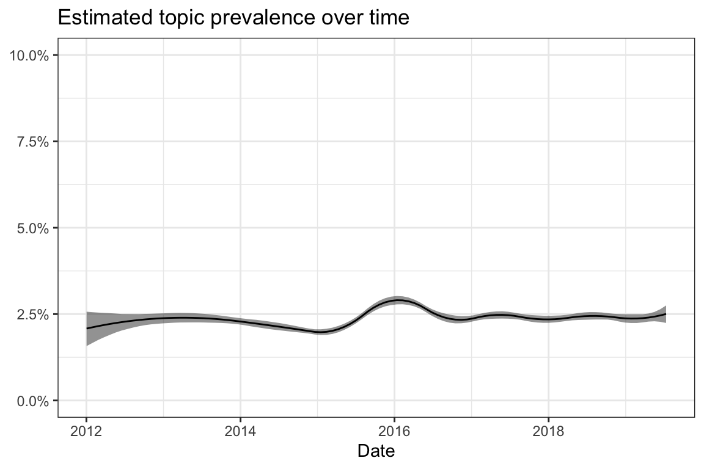
| Type | Terms |
|---|---|
| frex | geburt, u4, ku, gespannt, u3, heute, u6, zufrieden, ärztin, gewicht |
| lift | ku, u3, u4, geburt, u6, zufrieden, gespannt, ordnung, u5, untersuchung |
| prob | heute, geburt, ärztin, u4, gespannt, ku, gewicht, u3, u6, u5 |
| score | ku, heute, u4, geburt, gewicht, u3, u6, ärztin, u5, zufrieden |
| Rank | \(\gamma\) | Text |
|---|---|---|
| 1 | 0.59 | geburt 50cm 3678g 34 ku u2 50cm 3435g 34 ku u3 51.5cm 4470g 37 ku u4 61cm 6530g 39.5 ku |
| 2 | 0.53 | Wir hatte heute auch U4. Alles i.O. Werte bei der Geburt: 52cm, 3210g, KU 34cm Heute: 62,5cm, 5980g, KU 42,1cm |
| 3 | 0.52 | Geburt 3340g 53cm KU 33cm U2 3210g 53cm KU 33cm U3 4310g 56cm 36cm ku U4 5750g 62,5 cm 38,5cm |
| 4 | 0.51 | Wir hatten heute U4 und wieder Impfungen. Hier mal ein paar Werte zum Vergleich von unserem Samuel (jetzt 14 Wochen alt) U1 : Gewicht : 3900g Körperlänge : 50cm Kopfumpfang : 36cm U2 : Gewicht : 3740g Körperlänge : 50cm Kopfumpfang : 36cm U3 : Gewicht : 5010g Körperlänge : 57cm Kopfumpfang : 38cm U4 : (heute, 29.05.15) Gewicht : 7710g Körperlänge : 64,5cm Kopfumpfang : 42,3cm |
| 5 | 0.49 | Unsere Maus wird auch bei der u4 dann geimpft…. U3 Gewicht: 4800 Länge: 58 KU: 38 Geburt Gewicht : 4600 Länge 59 cm ( haben sich vermessen und nicht nochmal nachgemessen-.-) Ku : 36 |
| 6 | 0.48 | Hatten heute U5 und unsere erste Impfung. Ärztin von der Motorik und Entwicklung sehr zu frieden. Vom Gewicht zwar net so aber das war mir schon klar. War ganz tapfer, hat nur bei dem Pieks kurz geweint und ist danach direkt im MC eingeschlafen. Geburt: 50cm/33,5 KU/2970g U2: 50cm/34cm KU/2810g U3: 54cm/37cm KU/4100g U4: 61,5cm/41cm KU/7300g U5: 69cm/44cm KU/9800g |
| 7 | 0.47 | Wir hatten heute U6 geburt 52cm,3770g, 37cm KU heute 82cm, 11,5 kg, 48cm KU alles es in bester Ordnung und aus der nabelhernie wurde eine kleine Nabelhernie keine OP nötig |
| 8 | 0.47 | Geburt: 3789g 52cm länge 37cm KU. U4 6020g 62.5 länge 41.5 KU Und am 18.08 kontrolle/untersuchung ma gucken wie gross mein kleiner pasa geworden ist. |
| 9 | 0.46 | Hatte heute mit meinem Kleinen die U3. 58cm ( 52cm Geburt ) 4790g ( 4110g Geburt, 3890g Entlassung) 39,5 cm KU ( 39cm Geburt, 37cm Entlassung ) Hüftscreening alles top |
| 10 | 0.46 | Wir hatten heute auch U6. Samstag wird er 11 Monate. Geburt 3820gr, 53cm, 36cm KU Heute 12070gr, 82cm, 49cm KU |
9.2 Topic 2: Influenza
Vaccine-related: yes
Perspective: Specific vaccinations
Description: The topic presents opinions about, experiences with and assessments of the effectiveness of influenza vaccination. It is often described that the influenza vaccination is not perceived as necessary. Another aspect is the differentiation of the common cold from influenza.
| Type | Terms |
|---|---|
| frex | grippe, nie, impfen, GRIPPE_IMPFEN, grippeimpfung, krank, winter, außer, zumal, richtige |
| lift | GRIPPE_IMPFEN, grippe, grippeimpfung, nie, winter, impfen, krank, zumal, außer, geraten |
| prob | impfen, nie, krank, grippe, außer, grippeimpfung, GRIPPE_IMPFEN, winter, richtige, zumal |
| score | GRIPPE_IMPFEN, impfen, grippe, nie, krank, grippeimpfung, winter, außer, erkältung, richtige |
| Rank | \(\gamma\) | Text |
|---|---|---|
| 1 | 0.34 | habe mich noch nie gegen Grippe impfen lassen, werde ich auch nicht. Hatte auch noch nie eine Grippe. Viele verwechseln ja eine starke Erkältung mit einer richtigen Grippe |
| 2 | 0.30 | Ich persönlich bin grundsätzlich für’s Impfen, bei der Grippeimpfung bin ich aber dagegen. Meine Mutter hat sich einige Male gegen die Grippe impfen lassen und war dann in jeder Saison so halber krank. Sie war dauerangeschlagen aber nie richtig krank nur halt eben auch nie fit in der Zeit. Und wenn man zwar vor der Grippe geschützt ist, dafür aber nen grippalen Infekt monatelang mit sich rumschleppt, hat man auch nix gewonnen. (Und bevor jemand dazu was sagt: Ja ich weiß, dass ne Grippe absolut nicht mit nem grippalen Infekt vergleichbar ist) Bei Risikopatienten wie deiner kleinen Lotta, würde ich mir das aber auch überlegen. |
| 3 | 0.28 | zur Grippe selber. Ich habe mich noch nie impfen lasse, auch niemand in meiner Familie und noch nie hatte jemand in meiner Familie eine echte Grippe. Grippaler Infekt (noch nicht mal sowas hatte ich), Erkaeltung, ja. Aber noch nie ein Grippe. (Halt doch, mein Mann hatte sie mal (zu seiner Abi-Zeit) Und zwar in genau dem Jahr, in dem er sich impfen liesss bekam er dreimal hintereinander fuer jeweils 2 Wochen richtig Grippe., erzaehlte mir grad SchwieMa am Wochenende) Und wir sind durch verschiedene Schulen, Kigas, genug unterwegs um sich was einzufangen. Grippe und HPV sind die einzigen, die ich nicht impfen lasse, weil zu neu/noch nicht ausgereift genug (HPV) und nicht wirkungsvoll genug (Grippe). |
| 4 | 0.28 | Ich hatte noch nie eine Grippe außer als ich mich dagegen impfen lassen hab. seitdem habe ich mich nicht mehr impfen lassen. |
| 5 | 0.26 | Dieses Jahr bin ich zum ersten mal wirklich unentschlossen. Normalerweise impfen wir uns nie gegen Grippe. Aber dieses Jahr hatten wir sie (ja, die richtig echte Grippe - kein grippaler Infekt). Und ne richtige Grippe ist gefühlt das Ende der Welt! |
| 6 | 0.26 | Ich habe mich noch nie gegen Grippe impfen lassen und hatte noch nie eine Grippe. Wenn man bisschen aufpasst, regelmäßig und gründlich Hände wäscht dann geht das auch so. Werde mich auch nicht impfen lassen. Bin aber auch nicht so der Fan vom Impfen. Musste mich mal komplett impfen lassen für ein Kiga-Praktikum und war danach so richtig übel krank. Seitdem halte ich da Abstand. |
| 7 | 0.26 | Also meine Tochter lasse ich auch impfen. Ich habe mich halt nur noch nie gegen Grippe impfen lassen. Bin maximal 1x im Jahr krank und hatte noch nie eine richtige Grippe. Deswegen weiß ich nicht ob es Sinn macht, sich jetzt in der Schwangerschaft gerade dafür zu entscheiden. |
| 8 | 0.26 | Du hast einen Denkfehler. Durch die Grippe Impfung warst du Vlt zwei Wochen krank, aber du hattest keine richtige Grippe. Und ob es bei der nächsten Erkrankung ne harmlose Erkältung oder ne Grippe ist kann man sich leider nicht aussuchen. Wenn du auf Grippe Erreger triffst wirds ne Grippe. Verstehst du was ich meine? |
| 9 | 0.25 | Ich selber habe auch noch nie impfen lassen und meine Jungs bis jetzt auch noch nie und wir hatten bis jetzt wirklich auch noch nie ne Grippe gehabt. |
| 10 | 0.25 | ich hab mich NIE impfen lassen hatte und ich hatte NIE die Grippe. Für mich klar: Auf keinen Fall impfen! ums verrecken nicht und bei Impfzwang ab in die Wallachei. |
9.3 Topic 3: Information sources
Vaccine-related: yes
Perspective: General vaccination debate
Description: The posts describe the importance of examining pro- and contra-arguments and to inform oneself before decision-making. Difficulties in finding neutral information are reported and recommendations for books and other information sources are provided.
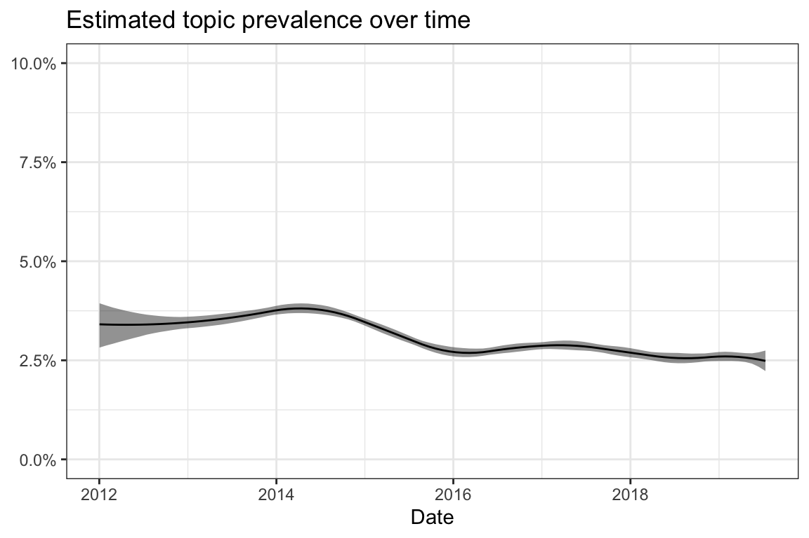
| Type | Terms |
|---|---|
| frex | entscheidung, pro, entscheiden, finde, buch, informieren, informiert, treffen, seiten, contra |
| lift | contra, buch, pro, entscheidung, treffen, informieren, empfehlen, entscheiden, seiten, informiert |
| prob | finde, wichtig, entscheidung, gelesen, entscheiden, pro, seite, persönlich, absolut, informiert |
| score | contra, finde, entscheidung, pro, entscheiden, informieren, wichtig, seiten, buch, informiert |
| Rank | \(\gamma\) | Text |
|---|---|---|
| 1 | 0.49 | Ich empfehle Allen das sie sich unabhängig informieren weder irgendwelchen Antiimpffanatikern als auch Proimpffanatikern zu vertrauen. Wichtig ist vor allem, dass ihr hinter eurer Entscheidung steht, denn was ihr mit eurem Körper selbst tut ist eure Sache, aber hier entscheidet ihr nun mal über ein neues Leben. Ich kann euch das Buch “Impfen pro und contra” von Hirte empfehlen. Er zeigt mit wissenschaftlichen Quellen wirklich genau auf was gut und schlecht ist. Er propagiert weder haltlos gegen oder dafür. Und genau das ist wichtig für eine durchdachte Entscheidung. Wer sich dann gegen Impfen entscheiden sollte dem kann ich das Buch “Leben ohne impfen” von Bachmair empfehlen dort sind Erfahrungsberichte von Eltern die sich gegen Impfen bei ihren Kindern entschieden haben. Wie gesagt ich empfehle aber jedem zuerst, dass er sich nicht auf Meinungen irgendwelcher Foren verlässt. Sondern bei neutralen und vertrauenswürdigen Quellen informiert. Pro und Contra sollten abgewägt werden nur so kann man standhaft hinter seiner Entscheidung stehen. Ich wünsche euch wirklich allen, dass ihr für euch die richtige Entscheidung treffen könnt und dürft. |
| 2 | 0.47 | Hallo, ich fand es wahnsinnig schwierig zu diesem Thema neutrale Infos zu bekommen. Ich habe mich somit durch unzählige Pro und Contra Seiten im Internet gelesen,alle Freunde mit Kindern sowie Hebamme und Kinderarzt befragt und das Buch “Impfen pro&contra” gelesen. Viel Erfolg und viele Grüße |
| 3 | 0.44 | Ich finde diesen Krieg von Pro&Kontra Impfen ganz schrecklich . Wichtig finde ich nur sich voher vernünftig zu informieren und sich dann zu entscheiden. Welche Entscheidung die jeweiligen Eltern dann treffen sollte Ihnen überlassen sein. |
| 4 | 0.43 | Vielen Dank für deine Antwort :) ich werde es mir definitiv anschauen. Ich finde es auch sehr wichtig sich immer über beides zu informieren und nicht einer Seite blind zu vertrauen. Ich hoffe ich kann am Ende die richtige Entscheidung treffen ohne sie zu bereuen. |
| 5 | 0.43 | Hallo, wenn du dir Suchfunktion nutzt,wirst du dazu viiiiele Threads finden. Zudem gibt es hier auch Clubs zum Thema impfen. Wenn ihr Pro und Contra eh schon für euch klar habt,wird es vermutlich auch nicht leichter,wenn du noch von 50 anderen deren Pro und Contra hörst - am Ende müsst ihr entscheiden und hoffen,dass es die richtige Entscheidung war. Empfehlenswert finde ich das Buch “Impfen Pro&Contra” von Martin Hirte. Viele Grüße |
| 6 | 0.41 | Hallo, ich habe das Buch von Hirte gelesen “Impfen pro&contra”. Das fand ich für mich ganz informativ, gut zu lesen, interssant. Ich habe mich auch ausführlich beim Kinderarzt informiert UND bei meiner Heilpraktikerin. Ich habe also beide Seiten gehört, die Impfbefürworter und die -gegner. Mit dem Buch habe ich dann noch meine eigene Entscheidung besser treffen können. melli |
| 7 | 0.41 | Ich empfehle dir das Buch “impfen pro und contra” von Dr. Martin Hirte. Das ist ein Buch welches neutral das Pro und contra der Impfungen darlegt. |
| 8 | 0.41 | Ich empfehle das Buch von Martin Hirte: Impfen pro und Contra….. Ein für Eltern also nicht Mediziner gut verständliches Buch, welches wissenschaftliches Fundament hat. Es verhilft zu einer aufgeklärten Entscheidung bzgl. Impfen oder nicht. Er diskutiert auch den Impfzeitpunkt. Er erklärt die einzelnen Erkrankung mit Risiko…. Impfinhaltsstoffe und Nebenwirkungen… Eine Investion die sich lohnt, wenn man eine Entscheidung treffen will, nachdem man sich gut informiert hat und nicht nur aus dem Bauch heraus oder weil man dies oder das gehört hat. Vater und Mutter sollten das Buch lesen und sich dann gemeinsam für oder gegen oder einen späteren Zeitpunkt des Impfens entscheiden. Ich finde auch gut, dass das Buch nicht eine Seite überzeugen will. Es klärt einfach in einfacher Sprache über Fakten auf. Wenn man sich danach dafür oder dagegen entscheidet, dann weiss man warum und welche Risiken man eingeht. Den beide Seiten haben Risiken. Viel Spaß beim Lesen. |
| 9 | 0.41 | Zum Thema neutrale Beratung kann ich das Buch von Dr. Martin Hirte empfehlen. Das ist weder ausdrücklich pro oder contra, sondern neutral. War sehr interessant und hat uns sehr geholfen |
| 10 | 0.40 | Das soll jeder für sich selbst entscheiden. Ich persönlich finde es schon wichtig. Habe mich aber auch darüber aufklären lassen. |
9.4 Topic 4: Recovery wishes
Vaccine-related: yes
Perspective: Relationship and communication
Description: The posts express the empathy and emotional support when children or other users are ill (e.g. sending wishes for recovery).
| Type | Terms |
|---|---|
| frex | besser, bald, hoffe, schnell, wünsche, oh, toll, bleibt, klingt, hoffentlich |
| lift | drücke, bald, klingt, wünsche, fest, hoffentlich, oh, toll, besser, hoffe |
| prob | besser, hoffe, schnell, gute, gut, erstmal, bleibt, bald, oh, bestimmt |
| score | drücke, hoffe, besser, schnell, oh, bald, gute, wünsche, GUTE_BESSERUNG, toll |
| Rank | \(\gamma\) | Text |
|---|---|---|
| 1 | 0.42 | Oh Gott, der arme kleine Mann!! Ich wünsche ihm gute Besserung und hoffe, es wird bald wieder gut und dir auch viel Kraft und gute Nerven!! |
| 2 | 0.33 | Oh der arme kleine Kerl:(.. wahrscheinlich hat er deswegen so arg reagiert. . Ich wünsche dem kleinen Gute Besserung und das es schnell ausgestanden ist.. |
| 3 | 0.32 | Oje. Dann hoffe ich, dass du zur Ruhe kommst. So ein Schreck mit der Hirnhautentzündung!! Schön, dass es besser wird!! Hoffentlich habt ihr es bald hinter euch! Alles Gute! |
| 4 | 0.32 | Wir sind weiterhin am auspacken… aufbauen etc. . Umzug ist geschafft und ich bin gottes froh das wir es hinter uns haben klar, zu tun ist noch genug aber das meiste ist geschafft! Lieb das du fragst. Umzug mit Kind ist nicht stressfrei ja muss ich so schnell auch nicht wieder haben! Ich hoffe deinem Zwerg geht’s wieder gut? |
| 5 | 0.31 | Ja, die kleinen tun einem dann immer so unfassbar leidüòû. Aber wir wissen ja, dass es zu ihrem besten ist. Ich dr√ºcke euch die Daumen, dass es schnell vorbei geht und es deiner kleinen Maus schnell besser geht! |
| 6 | 0.31 | Oh je… na ihr macht mir ja Hoffnung für nächste Woche…. drücke euch fest die Daumen, dass das schnell besser wird. Und auf eine gute Nacht … |
| 7 | 0.31 | Die Arme. Ist ja wirklich schade, dass es nicht geklappt hat. Hoffentlich geht die Umstellung schnell, so dass es ihr bald wieder besser geht. Alles Gute für Euch! |
| 8 | 0.31 | Oh mei hoffe dass es ihm bald besser geht. Wir müssen heute auch zum impfen, hoffe dass Skylar das gut wegsteckt! |
| 9 | 0.30 | Auch ich liebe Maddi und Theo drück euch ganz fest die Daumen und hoffe auf eine baldige und schnelle Genesung für den kleinen Zwerg. Bleib weiterhin stark Maddi♥Alles Gute! |
| 10 | 0.30 | Oh nein, das klingt gar nicht gut! In Mittelfranken soll es besonders schlimm gewesen sein. Oder zählt ihr zu Unterfranken? Und dann auch noch zum Impfen, arme Maus! Hoffe, er übersteht es gut! |
9.5 Topic 5: Experience report
Vaccine-related: yes
Perspective: Practical issues
Description: The topic includes posts on the sequence and timing of vaccinations and the course of the doctor’s appointment. In addition, the types of vaccinations and experiences with possible side effects and reactions of older siblings as well as information about organizational and financial questions are shared.
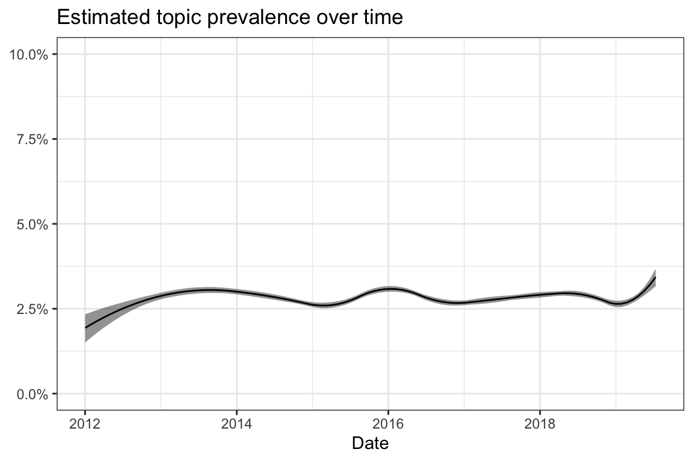
| Type | Terms |
|---|---|
| frex | großen, erst, große, impfe, beiden, spritzen, bekommt, bekommen, 6_FACH_IMPFUNG, gibt’s |
| lift | 6_FACH_IMPFUNG, großen, impfe, gibt’s, spritzen, beiden, große, gleichzeitig, kiä, erst |
| prob | erst, bekommen, kleine, kleinen, bekommt, große, großen, beiden, beide, impfe |
| score | 6_FACH_IMPFUNG, erst, bekommen, großen, bekommt, kleinen, kleine, große, schluckimpfung, beiden |
| Rank | \(\gamma\) | Text |
|---|---|---|
| 1 | 0.29 | Huhu :) mit 8 Wochen bekommen die kleinen ja nur die Schluckimpfung.. Und die 6fachimpfung bei der u4.. Meine kleine hat auch nur die Schluckimpfung bekommen und die 6fach bekommt sie frühestens mit 1 Jahr.. Haben wir bei meinem Signalschuss so gehandhabt |
| 2 | 0.27 | Ich bin heut mit allen drei beim Doc. Der große hat die U7a, der kleine bekommt die letzte Impfung (ich bin so happy dass er schon so fruh mit allem durch ist, der große war ja erst viel später fertig wegen seinen Krankheiten) und Alma bekommt die erste Impfung |
| 3 | 0.25 | Ja, meine Große hat sie bekommen. Die TK hat sie komplett übernommen weil wir sagten wir reisen ins Ausland. Die Kleine wird sie auch bald bekommen. |
| 4 | 0.25 | 70€ hätte ich jetzt auch nicht für nix ausgegeben, auch wenn man die wieder bekommt. ich war bisher bei 3 Kinderärzten und immer mußte ich unterschreiben, egal bei welcher impfe. meine kinder haben eigentlich alle bekommen bis auf die große die rotaviren- der kleine hat die bekommen, da die große da bei der tagesmutter war. ich überlege gerade wegen zecken, hat sichschon jemand informiert? ich wohn hier im risikogebiet. |
| 5 | 0.25 | Sie hat doch erst nur die Schluckimpfung bekommen. Alles anderes erst nächstemal und Meningokoken noch ein Termin später. Ich bin glücklich damit. |
| 6 | 0.23 | Unsere kleine war am Dienstag dran. Sie hat alles gut überstanden. Fieber hat sie zum Glück auch nicht bekommen :-) Sie hat 2 Spritzen (6Fachimpfung+Pneumokoggen) und eine Schluckimpfung (Rotaviren) bekommen. |
| 7 | 0.23 | Leander hat auch immer jeweils eine spritze in den Schenkel bekommen( links und rechts).warum bekommt sie noch ne schluckimpfung? Ich dachte es wären zwei schluckimpfungen?! Die hat Leander schon bekommen… |
| 8 | 0.23 | Hatten gestern impf termin mit beiden kids. Die kleine ist mit 5 einhalb monaten schon 68cm und hat 6.80kg Die große 13kg mit 95cm :-) Bei der kleinen alles ok, die große hat bei der Impfung gar nicht geweint, und sogar zugesehen beim spritzen! |
| 9 | 0.23 | Wir haben heute das volle Programm gehabt. Erst Blutabnehmen (Vorgeschichte ) dann die zweite Schluckimpfung. Die eine sechsfach und die pneumokokken. Ich hab gelitten wie ein Tier und die Mausi erst. Wir sind beide fix und alle. |
| 10 | 0.22 | Wurden eure Zwerge alle in den Oberschenkel geimpft? Lilly hat die beiden Spritzen über dem Po auf Hüfthöhe bekommen…kannte ich so nicht,hab mir aber nichts dabei gedacht…Jetzt schreibt ihr alle,dass eure Kleinen ins Bein gepickst wurden… Naja,wird schon seine Wirkung tun |
9.6 Topic 6: Chickenpox
Vaccine-related: yes
Perspective: Specific vaccinations
Description: The posts deal with the pathogens of chickenpox and shingles and the courses of both diseases are described. In addition, the effectiveness of vaccinations and the need to vaccinate for different groups of people are discussed.
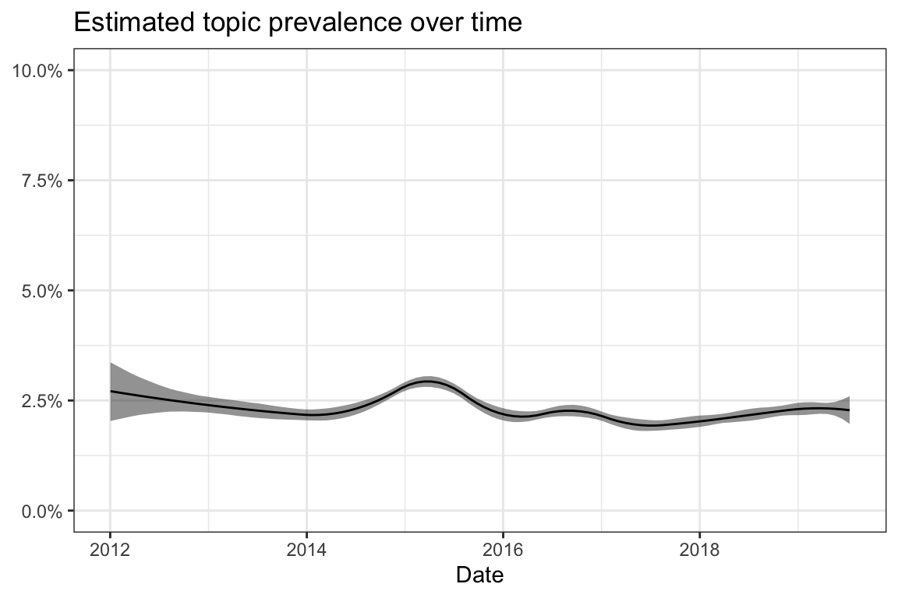
| Type | Terms |
|---|---|
| frex | windpocken, virus, krankheit, angesteckt, erkrankung, gürtelrose, schützt, gefährlich, erkranken, damals |
| lift | gürtelrose, virus, verlauf, harmlos, ansteckend, windpocken, form, schützt, ansteckung, angesteckt |
| prob | windpocken, krankheit, damals, risiko, erkrankung, gefährlich, kontakt, angesteckt, alter, virus |
| score | gürtelrose, windpocken, krankheit, erkrankung, erkranken, risiko, gefährlich, damals, angesteckt, virus |
| Rank | \(\gamma\) | Text |
|---|---|---|
| 1 | 0.55 | Öhm, also gerade WEIL du windpocken hattest, bist du gürtelrose gefährdet. Wer nie windpocken hatte kann keine gürtelrose bekommen, da dies stets die zweiterkrankung ist (also wenn du wieder mit dem virus in kontakt kommst und deine Abwehr gerade schwach ist). wer gegen windpocken geimpft ist, hat ein vergleichsweise erheblich geringeres risiko, an gürtelrose zu erkranken und wenn dann verläuft die Infektion meist abgeschwächt. das ist ja einer der hauptbenefits der impfung (vor der schnöden windpockenerkrankung hätte ich persönlich auch keine angst - klar kann es in einzelfällen auch da zu Komplikationen kommen, aber das kann es auch bei hand-mund-fuss und jedem anderen virus). |
| 2 | 0.55 | Genau so ist es! Wenn man Windpocken hatte, bekommt man im alter auch Gürtelrose! Da es die gleichen viren sind, die das verursachen. wenn man nie Windpocken hatte, trägt man auch dem Virus der Gürtelrose nicht in sich und kann also im alter nicht erkranken. |
| 3 | 0.50 | windpockenimpfung macht ja auch dahin sinn, dass gürtelrose durch die gleichen viren ausgelöst wird, wie windpocken. jemand, der noch nie an windpocken erkrankt war, kann nicht an gürtelrose erkranken. da die viren lebenslang in einem schlummern. und dann im alter - oder bei zu schwachen immunsystem ausbrechen und gürtelrose auslosen. hier die info dazu:http://www.apotheken-umschau.de/Guertelrose |
| 4 | 0.49 | Das stimmt so leider nicht. Gürtelrose entsteht durch den varizella zoster Virus, der auch für die Windpocken verantwortlich ist. Gürtelrose bricht aus, wenn man vorher bereits mal an Windpocken erkrankt war. Es ist quasi die sekundärinfektion. Das Virus bleibt nach abklingen der Windpocken im Körper. Man ist zwar gegen einen weiteren Ausbruch von Windpocken immun, aber die Gürtelrose kann durch das Virus im Körper trotzdem ausbrechen. |
| 5 | 0.48 | Babies die trotz vollständiger Inmunisierung daran erkranken, erkranken aber bei Weitem milder und müssen keine schweren Durchfälle bekommen, welche krankenhauspflichtig sind. |
| 6 | 0.45 | Ja Windpocken und Gürtelrose sind beides der selbe Virus. Herpes Zoster. Wenn man Windpocken z.B. hatte und trifft auf einen Winpockenkranken kann man das dann bekommen, odee auch bei Stress oder Imunschwäche was ja im Alter oft ist, da reaktiviert sich sozusagen der Virus. |
| 7 | 0.44 | Hattest du denn Windpocken? Gürtelrose ist hauptsächlich durch direkten Kontakt ansteckend, wenn du die Flüssigkeit aus den Bläschen irgendwie aufnimmst. Wenn du keine Windpocken hattest entwickelst du dann auch Windpocken keine Gürtelrose. Hier ein Link für dich! Zur Not ruf den fa an!!! http://www.onmeda.de/krankheiten/guertelrose-ursachen-ansteckung-1332-4.html |
| 8 | 0.43 | In einem Risikogebiet trägt ca. jede 100ste Zecke den Virus. Doch nicht jede Zecke überträgt den Virus, selbst wenn sie befallen ist. Und nicht jede Übertragung bedeutet einen Ausbruch der Krankheit. Und wenn die Krankheit mal ausbricht, verläuft sie meistens mild. Da du nicht in einem Risikogebiet wohnst, ist die Wahrscheinlichkeit an FSME zu erkranken verschwindend gering, da sind die Chancen, im Lotto zu gewinnen, höher. Die Zeckenimpfung ist nicht ohne und Nebenwirkungen in dem Fall wahrscheinlicher als der Krankheitsfall. Nicht einmal die STIKO empfiehlt die Zeckenimpfung außerhalb der Risikogebiete. |
| 9 | 0.43 | Ich hatte als Kind Windpocken und auch Gürtelrose, also kann ein Kind trotzdem Gürtelrose bekommen, auch wenn es schon Windpocken hatte. |
| 10 | 0.42 | Ich habs gerade umgekehrt gelesen: “Ältere Generationen haben meist keine Impfung, sind aber häufig als Kinder an Windpocken erkrankt und haben deshalb Antikörper gebildet, die die Reaktivierung der Viren in Form einer Gürtelrose verhindert.” http://www.welt.de/gesundheit/article125033698/Impfung-kann-Erwachsene-vor-Guertelrose-schuetzen.html Ich hatte aber Windpocken. Und eine Gürtelrose. Da meine Mutter durch mangelnden Impfschutz von Kindheit an schwerbehindert ist, werde ich immer die Impfung der Krankeheit vorziehen. |
9.7 Topic 7: Compulsory vaccination
Vaccine-related: yes
Perspective: General vaccination debate
Description: The topic includes discussions about compulsory vaccination in childcare facilities and schools. Opinions are expressed on planned political regulation of vaccinations. The risks posed by unvaccinated children are pointed out. Vaccination is discussed as a societal issue.
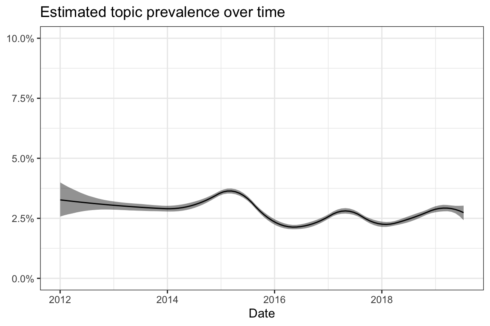
| Type | Terms |
|---|---|
| frex | kinder, kindern, NICHT_GEIMPFT, eltern, impfpflicht, ungeimpfte, sterben, ungeimpften, kindergarten, durchgeimpft |
| lift | ungeimpfte, kinder, ungeimpften, durchgeimpft, pflicht, impfpflicht, NICHT_GEIMPFT, ungeimpft, kindern, eltern |
| prob | kinder, eltern, kindern, krankheiten, NICHT_GEIMPFT, kita, kenne, kindergarten, sterben, impfpflicht |
| score | ungeimpfte, kinder, eltern, NICHT_GEIMPFT, krankheiten, kindern, impfpflicht, geimpfte, kita, sterben |
| Rank | \(\gamma\) | Text |
|---|---|---|
| 1 | 0.49 | Wir sind komplett geimpft und auch unser Kind wird durchgeimpft! Getrennte Kitas für geimpfte/ungeimpfte Kinder würde ich begrüßen. Bzw. Eine impfpflicht für Kinder, die in die Kita sollen. |
| 2 | 0.48 | Die Pflicht bewirkt, dass Kinder die aus gesundheitlichen Gründen nicht geimpft werden dürfen oder nicht können oder zu klein sind durch einen funktionierenden Herdenschutz nicht schwerwiegend erkranken. |
| 3 | 0.48 | Die Pflicht bewirkt, dass Kinder die aus gesundheitlichen Gründen nicht geimpft werden dürfen oder nicht können oder zu klein sind durch einen funktionierenden Herdenschutz nicht schwerwiegend erkranken. |
| 4 | 0.45 | weil ungeimpfte Kinder andere ungeimpfte Kinder anstecken können und in einem Kindergarten recht enger Kontakt herrscht, somit ist eine Ansteckungsgefahr ungleich grösser. Das ist ja selbsterklärend |
| 5 | 0.43 | Naja, zum einen ermöglichen die Impfgegner auch die Möglichkeit, daß sich Kinder, die noch zu klein zum impfen sind oder Menschen, die aus gesundheitlichen Gründen nicht geimpft werden können, anstecken und zum anderen sind die Leidtragenden die Kinder, die nichts fürdas Verhalten ihrer Eltern können. |
| 6 | 0.42 | Nö! Alle schimpfen “du hast deine Kinder nicht geimpft!” Dabei sind ihre Kinder geimpft!! DAS stört mich!!! Dieses angreifen ohne Hintergrundinformationen!! Was ist, wenn ihre Kinder nicht geimpft werden dürften? Trotzdem zeigen alle mit dem Finger auf sie! Zum kotzen! -.- |
| 7 | 0.41 | Ungeimpfte Kinder sollten keinen Zugang zu Kindergärten oder Schule bzw. Gemeinschaftseinrichtungen im allgemeinen haben! Es gibt Kinder, die KÖNNEN aus diversen Gründen nicht geimpft werden und genau diesen Kindern gegenüber hat auch die Allgemeinheit eine Verpflichtung, den Herdenschutz aufrecht zu erhalten. Dank den ganzen “Impfkritikern” und “Impfgegnern” sind Krankheiten wie Masern wieder auf dem Vormarsch. Juhu. Mein Kind ist komplett durchgeimpft, einzige Ausnahme ist Rota. Das zweite wird das auch mitmachen müssen. |
| 8 | 0.41 | In Italien wurde jetzt die Impfpflicht eingeführt, die Eltern müssen eine Geldstrafe bezahlen und die Kinder dürfen ungeimpft nicht in die Krippe, Kindergarten und die Schule. Bin mal gespannt, was das hier für Wellen schlagen wird. |
| 9 | 0.40 | In unserem Kiga werden nur geimpfte Kinder aufgenommen , Ausnahme sind die Kinder die nicht geimpft werden können. Ich denke es ist nicht durchsetzbar,dann verzichten einige Eltern auf den Platz oder suchen sich andere Varianten zur Kinderbetreuung. |
| 10 | 0.40 | wie thea schon schrieb sind aber DIESE kinder auch nichr geimoft und wieso soll für sie anderes recht gelten, als für ältere nicht geimpfte kinder? nur weil sie noch nicht geimoft werden konnten? das wäre dann aber eine unsinnige beweisführung. wenn man gegen ungeimpfte kinder im kiga ist, darf es auch keine ungeimpften kinder unter einem jahr dort geben! |
9.8 Topic 8: Immunity pregnancy
Vaccine-related: yes
Perspective: Specific vaccinations
Description: The posts deal with vaccinal immune protection during pregnancy, particularly regarding the immunity to rubella and the slapped cheek syndrome. The posts discuss when immunity should be tested, when there is a need for a booster vaccination and which risks exist in the absence of immunity.
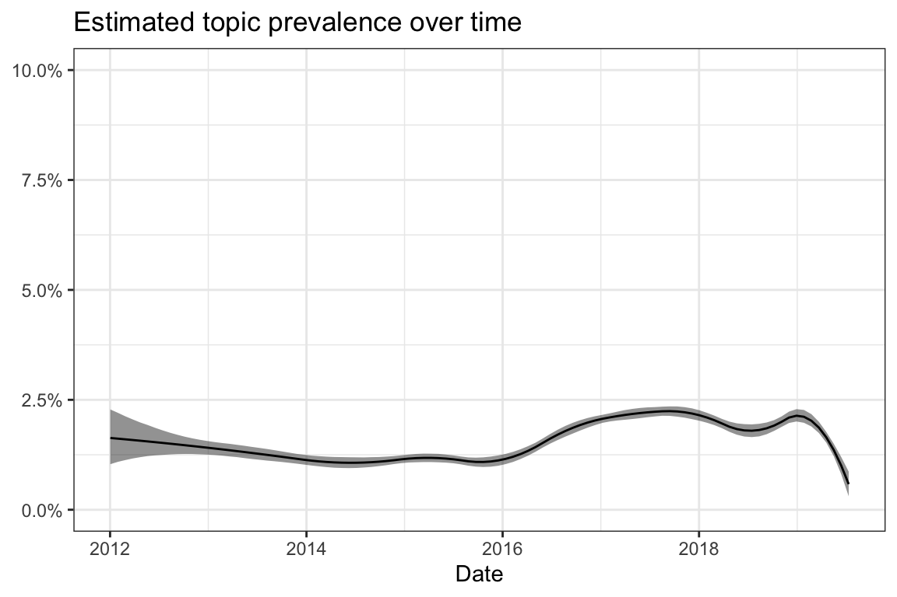
| Type | Terms |
|---|---|
| frex | ss, schwangerschaft, fa, schwanger, blut, immun, ssw, während, titer, ringelröteln |
| lift | ringelröteln, fa, getestet, ss, schwangerschaft, ssw, positiv, blut, titer, immun |
| prob | schwangerschaft, ss, schwanger, während, fa, immun, blut, röteln, titer, ssw |
| score | ringelröteln, schwangerschaft, ss, immun, fa, schwanger, titer, röteln, ssw, blut |
| Rank | \(\gamma\) | Text |
|---|---|---|
| 1 | 0.52 | Wenn du den beruflichen Umgang mit Kindern meinst: Der Titer wird gar nicht berücksichtigt. Wenn zwei dokumentiere Impfungen im Impfpass stehen, ist Immunität anzunehmen. Der Titer muss nicht bestimmt werden. Die Titer korrelieren nicht mit der Immunität bei Röteln. Nur wenn keine zwei dokumentierten Impfungen vorhanden sind, wird ausnahmsweise der Titer bestimmt. |
| 2 | 0.49 | ich hatte eigentlich alle meine rötelimpfungen bekommen und während der schwangerschaft wurde trotzdem festgestellt, dass mein impfschutz fraglich war. es wurde dann noch zweimal während der schwangerschaft blut abgenommen und auf röteln getestet und empfohlen vor einer neuen schwangerschaft nochmal gegen röteln impfen zu lassen. während der schwangerschaft sollte ich das nicht machen. ab der 20.ssw oder (kann auch später sein) würde auch eine rötelinfektion mit hoher wahrscheinlichkeit nicht mehr zu fehlbildungen führen. ab da wurde das blut dann nicht mehr untersucht. |
| 3 | 0.48 | Ich würde letztes Jahr im mai schon auf alles notwendige getestet, auch zytomegalie und ringelröteln. Ich bin gegen alles erdenkliche immun. Eine meiner größten sorgen ist, dass in meinem Blut keine immunität auf Röteln nachweisbar ist, aber die gesundheitsvorschriften sagen, dass ich auf Grund der 3 Impfungen die ich erhalten habe bestimmt immun bin.. nur halt nicht nachweisbar.. absoluter Mist.. |
| 4 | 0.45 | Ich war in der ersten SS auch negativ. Und bin jetzt auch Ringelröteln negativ, Toxoplasmose auch… Mache mir auch Sorgen wenn im Kiga Ringelröteln sind. Aber Infektionen treten wohl nicht häufig auf. Meine FÄ sagte sie hatte in 7 Jahren Praxis nicht einen Fall, weder Ringelröteln noch Röteln. Also mach dir keine Sorgen. |
| 5 | 0.44 | Ich wurde auch als Kind vollständig gegen Röteln geimpft. Ich wurde im März 2013 nachgeimpft, weil ich in meiner SS 2012/2013 keine Immunität gegen Röteln hatte. In der jetzigen SS habe ich wieder keine Immunität. |
| 6 | 0.44 | Warst du in deiner ersten SS gegen Röteln immun? Was stand denn da auf deinem Aufkleber? Bei mir wurde in der 1. SS aktiver Schutz nachgewiesen, auch gegen Ringelröteln. Deswegen wurde jetzt kein weiterer Test gemacht, das verändert sich ja nicht. Falls auf dem Aufkleber aus der ersten SS drauf steht, das kein Schutz besteht, muss die Untersuchung noch nachgeholt werden. |
| 7 | 0.43 | Wesentliche aktuelle Vorgaben der Mutterschaftsrichtlinien zur Röteln-Serologie: ? Rötelnimmunität für die bestehende Schwangerschaft ist anzunehmen, wenn der Nachweis über zwei erfolgte Impfungen vorliegt, oder wenn spezifische IgG-Antikörper rechtzeitig vor Eintritt der Schwangerschaft nachgewiesen worden sind. ? Wird Immunität erstmals während der laufenden Schwangerschaft serologisch festgestellt, kann ein Schutz vor einer Röteln-Embryopathie nur angenommen werden, wenn anamnestisch kein Anhalt für einen Rötelnkontakt oder eine frische Rötelninfektion besteht. |
| 8 | 0.43 | Klar kann man gegen ringelröteln immun sein. Es gibt einen titer und wenn der positiv ist ( weil schon mal mit ringelröteln infiziert) ist man immun. Viele , auch ich, haben schon mal ringelröteln unbewusst gehabt. man hat dann Grippe ähnliche Symptome nicht wie röteln Symptome! |
| 9 | 0.42 | Sa… - Sn…- Sag mal, frischgebackene Mami…- Schlaflieder/Geschichten- Schleimpfropf- Schnuller- Schreibaby- Schüssler Salze- Schwanger ab 40- Schwanger durch künstliche Befruchtung- Schwanger mit Mulitple Sklerose (MS)- Schwanger und arbeiten?- Schwanger und die (negativen) Auswüchse/Reaktionen der anderen- Schwanger und gleichzeitig stillen? Wer noch?- Schwangere 25 bis 35- Schwangere ab 35- Schwangere unter 25- Schwangerschaft genießen- Schwangerschaft mit Schilddrüsenüberfunktion/Unterfunktion/Hashimoto- Schwangerschaftsdemenz ;-)- Schwangerschaftsdepression- Schwangerschaftsdiabetes- Schwangerschaftsdiabetes - Rezepteaustausch- Schwangerschaftsöl bei Heparin-Spritzen- Schwangerschaftsstreifen- Schwangerschaftstagebuch- Schwangerschaftstests- Schwangerschaftswichteln 1- Schwangerschaftswichteln 2- Schwangerschaftswichteln 3- Schwangerschaftswochen berechnen- Schweigestunde für Leo- Schwiegermütter- Sehschärfe- Selbstregulation- Sex in der Schwangerschaft- Sex! Lust vs. Unlust - Sex nach der Schwangerschaft- Silvester - für alle (noch kommenden) Jahre- Sind das schon Wehen?- Singuläre Nabelschnur Arterie- Sitzen |
| 10 | 0.41 | habe das auch nur aufgeführt damit es nicht heißt “du meinst bestimmt Ringelröteln” ;-) würde in der SS getestet auf Immunität und der FA hat meinen Impfpass gesehen und meinte “das gibt es doch gar nicht” |
9.9 Topic 9: TBE
Vaccine-related: yes
Perspective: Specific vaccinations
Description: The topic deals with the risks of tick bites and a TBE infection. Mainly individual justifications why someone decided to be vaccinated and experiences with tick bites are described.
| Type | Terms |
|---|---|
| frex | jahr, 1, letztes, fsme, zecken, geburtstag, wohnen, großer, krippe, sohn |
| lift | letztes, zecken, wohnen, jahr, fsme, 1, geburtstag, krippe, großer, unterwegs |
| prob | 1, jahr, sohn, fsme, großer, geburtstag, zecken, letztes, krippe, kids |
| score | letztes, jahr, 1, fsme, zecken, sohn, geburtstag, krippe, wohnen, großer |
| Rank | \(\gamma\) | Text |
|---|---|---|
| 1 | 0.41 | Wir wohnen nicht in einem Risikogebiet sind aber sehr oft mit Zecken ausgestattet. Mein Sohn hatte dieses Jahr schon 2. Letztes Jahr hatte ich 7, mein Mann 8 und mein Sohn 5. Meine Katze, öhm, gefühlte 100. Wir wohnen im Grünen und sind ständig draußen. Wir sind alle geimpft. |
| 2 | 0.40 | 3 Freundinnen haben für nr 1 sehr lange gebraucht (künstl. Befruchtung, 1 jahr und über 1 jahr) und sind im 1. Üz bzw ungeplant ein 2. Mal schwanger geworden.. Ss nr 1 und 2 müssen somit nicht zusammenhängen |
| 3 | 0.33 | Hallo! Da überlegst du noch!! Ab in den Urlaub. Wir waren vor 2 Jahren im Urlaub in Kärnten. Kein Zeckenbiss obwohl wir dauernd draußen waren. Letztes Jahr in Kärnten, Steiermark. Kein Zeckenbiss. Heuer wieder Steiermark. Kein Zeckenbiss. Wir sind alle bewusst nicht geimpft. Genießt euren Urlaub. LG Gabi |
| 4 | 0.32 | Wenn ihr in einem FSME gefährdeten Gebiet wohnt, würde ih gegen FSME impfen. Ansonsten direkt nach dem Kiga nach Zecken absuchen. Meine Kinder sind im Waldkiga und auch sonst viel draußen, ich sprühe kein Repellent. Aber ich rupfe halt auch regelmäßig die Zecken raus und zweimal hatten wir auch schon Borreliose. |
| 5 | 0.30 | Auch HoRiGe. Wir hatten letztes Jahr ein paar Zecken. Dieses Jahr noch keine einzige. Eine habe ich mal ziemlich lang übersehen. War dann auch eine Borreliose, die sich aber mit Ab super behandeln ließ. Gegen FSME haben wir geimpft. Beim Spielen im Gras können sich die Kids genauso Zecken holen. Wäre für mich kein Grund, meine Kinder nicht in den Waldkiga zu geben. |
| 6 | 0.29 | Wir sind alle geimpft, sind aber auch Geocacher und auch mal in Gefährdungsgebieten unterwegs. Wobei, dieses Jahr hatte ich erst zwei Zecken lol, letztes Jahr bin ich auf insgesamt 13 gekommen |
| 7 | 0.29 | Wir sind alle gegen Zecken geimpft (also gegen FSME). Meine Kinder toben viel draußen herum und hatten heuer schon einige Zecken (so wie jedes Jahr). Ich sehe sie vor dem Bett gehen immer gründlich durch, zupfe die Zecken ab und desinfiziere die Stelle. |
| 8 | 0.28 | Klar, volles Risikogebiet! Letztes Jahr hatte ich mir eine sogar beim Radfahren eingefangen. Obwohl ich nicht mal im hohen Gras war! |
| 9 | 0.27 | Ihr solltet dringender als das Kind geimpft sein! FSME verläuft im Kindesalter meist eher harmlos. Das andere ist, wie viel man draußen in Wald und Flur unterwegs ist und wie anfällig man für Zeckenbisse ist. Wir wohnen im Hochrisikogebiet und sind sehr viel draußen unterwegs, trotzdem ist keiner geimpft, da wir bei 5 Personen bisher nie auf mehr als 2 Zecken im Jahr insgesamt kamen - die alle auch noch frühzeitig entfernt wurden. FSME-Risiko damit gegen Null, Impfnotwendigkeit entsprechend auch. |
| 10 | 0.27 | Impfen kann man ab 1 Jahr. Wir haben mit 3 geimpft weil wir im Risikogebiet wohnen und viel an berg, Wald und Wiese unterwegs sind! |
9.10 Topic 10: Tolerability
Vaccine-related: yes
Perspective: Practical issues
Description: The posts describe experiences on the tolerability of vaccinations. They reported that the children tolerated the different vaccinations well and no (major) side effects occurred.
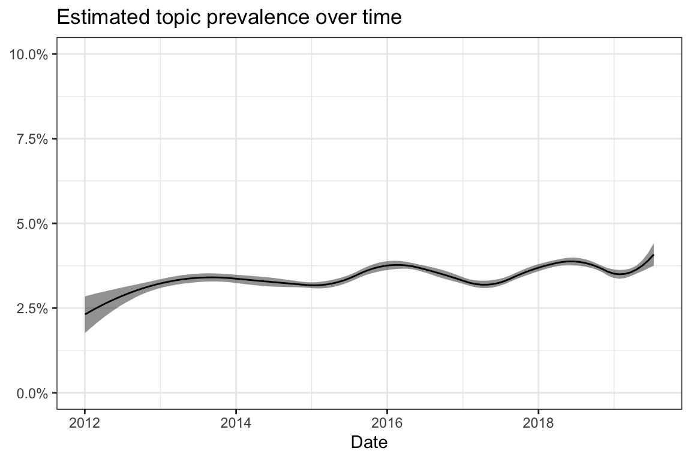
| Type | Terms |
|---|---|
| frex | erste, probleme, ersten, zweiten, reagiert, bisher, zweite, vertragen, super, zwei |
| lift | weggesteckt, verträgt, zweiten, überstanden, dritte, vertragen, zweite, diesmal, probleme, reagiert |
| prob | ersten, erste, zwei, super, bisher, gut, kleiner, probleme, drei, bisschen |
| score | weggesteckt, erste, ersten, zweite, KEIN_FIEBER, super, reagiert, vertragen, bisher, ERHÖHTE_TEMPERATUR |
| Rank | \(\gamma\) | Text |
|---|---|---|
| 1 | 0.43 | Ja hier. Unsere Kleine hat die ersten Impfungen super vertragen, sie war nur in der ersten Nacht ein bisschen warm. Bei unserem Großen gab es auch nie Probleme. |
| 2 | 0.41 | Wir hatten nur bei der ersten Probleme. Die zweite und die dritte wurden super vertragen. Bei der dritten war sie nicht mal knatschig oder schläfrig :) So ziemlich 10 Sekunden nach der Spritze hat sie den Arzt schon wieder breit angegrinst und war den Rest des Tages super happy :) |
| 3 | 0.40 | Hey unser hat die erste auch so schlecht vertragen. Die zweite wäre auch schon dran verschiebe ich aber. Ich dachte es sind nur zwei? Ich hoffe er reagiert auf die zweite nicht so heftig |
| 4 | 0.39 | Die erste MMR-Impfung hatten wir mitte Dezember, die Zweite bekommt er in zwei Wochen mit der U6. Johannes hat sie super vertragen. Kein Fieber, nix. Und auch das Impfen selbst hat er super weggesteckt. Beim Pieks hat er kurz geqiekt und dann war schon wieder gut und den Doc hat er dann auch gleich wieder angelacht. |
| 5 | 0.38 | Mein kleiner hat bereits alle drei 6fach Impfungen und drei Pneumokokken Impfungen hinter sich…. er ist nun sechs Monate und hat alles super überstanden…. kein fieber…. nichts…. Nu haben wir ja bisl ruhe…. |
| 6 | 0.38 | Meine beiden haben die MMR Impfung bisher super weggesteckt. Es gab kein Fieber und auch die Laune der beiden war super. Die Impfung war am letzten Donnerstag und bisher ist auch alles gut. |
| 7 | 0.37 | Wir haben an einem Tag die 6fach-Impfe, Rotaviren, Pneumo- und Meningokocken B gemacht. Die Kleine war sehr tapfer. Sie hatte leicht erhöhte Temperatur, aber kein Fieber. Allerdings war sie den ganzen ersten Tag sehr, sehr quengelig. Aber das gehört eben dazu. Sie hat es gut überstanden. |
| 8 | 0.37 | Meine Tochter hatte gestern ihre zweite Meningokokken B Impfung. Und bisher tut ihr nur der Arm an der Einstichstelle weh. Bisher hatte sie mit keinerlei Impfungen irgendwelche Probleme, nach der ersten Meningokokken B auch nicht. |
| 9 | 0.37 | Wir bekommen am Mittwoch die dritte Impfung. Bei der ersten und zweiten Impfung hatte er immer nur am zweiten Tag leicht erhöhte Temperatur, mehr nicht. |
| 10 | 0.36 | Wir lassen alles Impfen. Ben ist mit Rota durch und hat das prima Vertragen. Wir hatten Rotarix. Ein Mädchen im Pekip hat das Mittel was drei Mal geimpft wird und beim zweiten Mal heftig Durchfall. :-( Ansonsten auf Holz geklopft, bisher alles gut vertragen. Ich bin Impfbefürworterin durch und durch. ;-) |
9.11 Topic 11: Booster dose
Vaccine-related: yes
Perspective: Specific vaccinations
Description: The posts are concerned with vaccination against tetanus, pertussis, polio, diphtheria and hepatitis B for adults. Reports about received vaccinations are given and the duration of personal protection and need for booster doses are discussed.
| Type | Terms |
|---|---|
| frex | tetanus, keuchhusten, polio, impfschutz, nötig, diphterie, co, erwachsenen, erwachsene, jahre |
| lift | diphterie, tetanus, polio, keuchhusten, co, auffrischen, HEPATITIS_B, säugling, impfschutz, nötig |
| prob | keuchhusten, tetanus, polio, jahre, impfschutz, nötig, erwachsene, jahren, lebensjahr, erwachsenen |
| score | diphterie, keuchhusten, tetanus, polio, impfschutz, auffrischen, HEPATITIS_B, erwachsene, jahre, erwachsenen |
| Rank | \(\gamma\) | Text |
|---|---|---|
| 1 | 0.48 | der impfschutz für hepatitis hält in etwa 10 jahre an, dann ist ne auffrischung erforderlich. haben deine kinder mit unter 10 schon oralverkehr? |
| 2 | 0.47 | Warum sollte das bei Erwachsenen ohne Grundimmunisierung ausreichen? In den Packungsbeilagen der für Erwachsene verwendeten Impfstoffe zur Td-Auffrischung (mit Pertussis) steht: “Boostrix ist zur Auffrischimpfung gegen Diphtherie, Tetanus und Pertussis bei Perso- nen ab dem vollendeten vierten Lebensjahr indiziert (siehe Abschnitt 4.2). Boostrix ist nicht für die Grundimmunisie- rung vorgesehen.” “REPEVAX wird zur aktiven Immunisierung gegen Diphtherie, Tetanus, Pertussis und Poliomyelitis bei Personen ab 3 Jahren als Auffrischimpfung nach erfolgter Grundimmu- nisierung angewendet.” Analog bei Boostrix Polio. Covaxis: “COVAXiS ist indiziert als Auffrischimpfung zur aktiven Immunisierung gegen Tetanus, Diphtherie und Pertussis ab dem vollendeten 4. Lebensjahr nach erfolgter Grundimmunisierung.” Und damit sollen dann Erwachsene “immunisiert” werden?! LG Inge |
| 3 | 0.44 | Hallo, ich würde es machen. Es ist kein Problem in der Schwangerschaft. Es wäre dann auch eine Kombiimpfung( Tetanus, diphterie, Polio und Keuchhusten). Und gerade auch Keuchhusten ist ganz gefährlich für Säuglinge. Habe es mal erlebt das ein Säugling Keuchhusten hatte. Sowas schreckliches habe ich noch nicht gesehen. |
| 4 | 0.42 | Die hab ich 2015 bekommen.. polio diffterie und tetanus… dachte ich zumindest… auf jeden Fall reicht einmal in 10 Jahren nicht zur grundimmunisierung.. |
| 5 | 0.36 | Tetanus, Diphtherie, Pertussis eventuell Polio. Das ist z.B in Boostrix bzw Boostrix Polio enthalten. Wenn Du als Kind eine ordnungsgemäße Grundimmunisierung hattest, musst Du nur einmalig Auffrischen und der Impfschutz ist wieder vorhanden. Solltest Du viel Reisen, wäre auch Hepatitis zu überlegen. |
| 6 | 0.35 | Hi, ich hab letztens beim FA Tetanus und Diphterie auffrischen lassen (nach 20 Jahren mal wieder :-) ), Keuchhusten wäre nicht nötig. MMR lasse ich nicht auffrischen, hat er aber auch nichts gesagt. LG |
| 7 | 0.35 | Tetanol pur (einzelimpfstoff tetanus) hat 0,5mg al,TD-rix (kinder ab 3,tetanus,diphterie) hat 0,35 mg al. Tetanus,diphterie und polio finde ich nicht in der übersicht.es gibt wohl den impfstoff tetravac (t,d,polio und keuchhuste) mit 0,3 mg al.der impfstoff revaxis gegen t,d und polio ist als auffrischung gelistet ab dem 5.lebensjahr mit 0,35mg al.polio einzelimpfstoff in d heißt ipv-merieux oder polio salk.über die aluminium verbindungen habe ich in hirte nix gefunden.kann man sicher aber beim pei mal nachlesen :-) individuelle impfentscheidungen sind echt nicht ohne… |
| 8 | 0.35 | bei uns im Kindergarten gibt es gerade Keuchhustenfälle. ich lasse meinen Impfschutz regelmäßig auffrischen, keuchhusten (pertussis) ist da dabei. für ein Neugeborenes kann das lebensbedrohlich sein, deshalb ist es wichtig, dass alle Kontaktpersonen geimpft sind. |
| 9 | 0.34 | Jup steht ja im Beipackzettel was drin ist. Da es aber keine Tetanus Polio Diphterie Impfung gibt für Kleinkinder muss ich Tetanus und Polio einzeln impfen. Und dann eben Hib. Die 4er will ich net wegen Keuchhusten das hat mir zu viele Nebenwirkungen. |
| 10 | 0.34 | Hi, ich wurde letzte Woche gegen Tetanus und Diphterie geimpft, Polio soll ich in 10 Jahren mit auffrischen lassen. Gegen was seid ihr selbst denn eigentlich geimpft? Bzw. was lasst ihr regelmäßig auffrischen?? LG |
9.12 Topic 12: Meningococcal
Vaccine-related: yes
Perspective: Specific vaccinations
Description: The posts deal with the need for different types of meningococcal vaccines and discuss related recommendations of the Standing Committee on Vaccination.
| Type | Terms |
|---|---|
| frex | stiko, b, c, a, empfehlung, meningokokken, empfohlen, empfiehlt, impft, MENINGOKOKKEN_B |
| lift | c, a, b, empfehlung, stiko, empfiehlt, impfplan, meningokokken, MENINGOKOKKEN_B, plan |
| prob | stiko, empfohlen, impft, b, meningokokken, c, a, hepatitis, empfehlung, empfiehlt |
| score | c, stiko, b, empfohlen, meningokokken, a, impft, MENINGOKOKKEN_B, hepatitis, empfiehlt |
| Rank | \(\gamma\) | Text |
|---|---|---|
| 1 | 0.52 | meningokokken c ist in der Empfehlung der stiko und wird daher übernommen. meningokokken b ist noch nicht in der stiko Empfehlung und wird nur von manchen Kassen bezahlt (aus so ner Art Kulanz). |
| 2 | 0.52 | Soll vor Hirnhautentzündung schützen,ist in Europa mittlerweile zugelassen, die B wird aber von der STIKO unverändert nicht allgemein empfohlen (RKI 2014). In einigen Ländern (wie z. B. in der USA) wird Jugendlichen routinemäßig eine Meningokokken-Impfung gegen die Serogruppen A, C, W und Y empfohlen. Ansonsten weiß dazu auch zu wenig. LG jürgen |
| 3 | 0.52 | an Theresa Marie: Soll vor Hirnhautentzündung schützen,ist in Europa mittlerweile zugelassen, die B wird aber von der STIKO unverändert nicht allgemein empfohlen (RKI 2014). In einigen Ländern (wie z. B. in der USA) wird Jugendlichen routinemäßig eine Meningokokken-Impfung gegen die Serogruppen A, C, W und Y empfohlen. Ansonsten weiß dazu auch zu wenig. LG jürgen |
| 4 | 0.49 | Nimenrix enthält die Stämme A, C, W und Y, nicht B! Bexsero enthält nur Stamm B und Neis-Vac nur C. |
| 5 | 0.49 | nachdem in hessen ein baby an men. B. gestorben ist (kitakind), habe ich mich mit dem thema befasst. B kommt häufiger vor als C. komischer weise ist c von stiko empfohlen, b nicht. wir überlegen nun. ich tendiere fast eher zu b als zu c! |
| 6 | 0.45 | Meningokokken C gibt es auch einzeln (Neisvac). Meningokokken B heißt Bexsero. Meningokokken A, C, W und Y heißt z.B. Nimenrix. |
| 7 | 0.41 | Der in Deutschland häufigste ist B bei über 70%, C etwas über 20%. Für B gibt es einen neuen Impfstoff aber den empfiehlt noch nicht einmal die Stiko. C wird empfohlen. Aber, ach schwierig. Wenn man sich die Dauer der Wirkung und Nebenwirkungen betrachtet. Wenn du du dich durch das Thema gekämpft hast, gib doch mal bescheid wie du dich letztlich entschieden hast…ich hadere so lange weiter. |
| 8 | 0.39 | Meningokokken b oder c? lustigerweise ist die seltenere c ja in Deutschland auch auf dem plan, während die viel häufigere b eben nicht drauf steht. Unlogisch und mE aus der Entwicklung zu erklären (c impfung gibt es schon lange, während b neu ist). habt ihr in der Schweiz impfpflicht? |
| 9 | 0.39 | Ja ich weiß es noch nicht .. die ist noch nicht von der stiko empfohlen und kostet über 100 Euro ..ich bin echt unschlüssig ..aber wenn man sich darüber informiert , sie ist weiter verbreitet als die meningokokken C und kann tödlich enden aber die meningokokken c wird von der stiko empfohlen und somit auch übernommen eben von der kk |
| 10 | 0.39 | Das ist viel. Zumal Meningokokken C erst mit einem Jahr auf dem Stiko Impfplan stehen und B noch gar nicht empfohlen wird. Seltsam. Würde mindestens die Meningokokken weglassen. Die Meningokokken B Impfung ist auch erst 2 Jahre auf dem Markt. Obwohl wir hier in Deutschland zu 80% die Stämme der B haben, ist mir die Impfung noch zu neu. |
9.13 Topic 13: Requests
Vaccine-related: yes
Perspective: Relationship and communication
Description: The topic collects requests for experiences and opinions on different vaccinations.
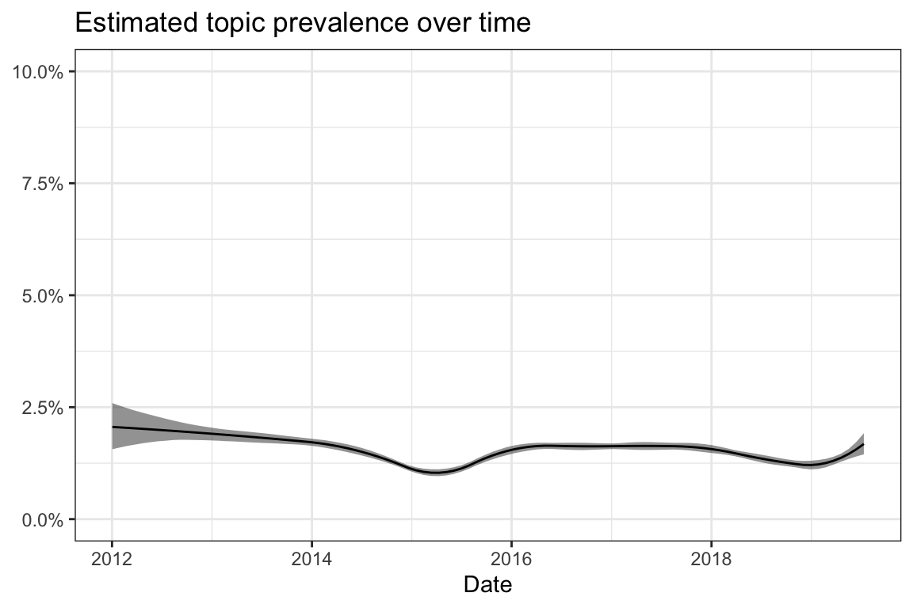
| Type | Terms |
|---|---|
| frex | lg, hallo, liebe, grüße, lieben, tochter, hey, erfahrung, huhu, zusammen |
| lift | grüße, liebe, lg, hallo, lieben, hey, hi, huhu, erfahrung, kennt |
| prob | hallo, lg, tochter, liebe, jemand, grüße, zusammen, lieben, erfahrungen, erfahrung |
| score | grüße, hallo, lg, liebe, lieben, tochter, erfahrungen, jemand, zusammen, huhu |
| Rank | \(\gamma\) | Text |
|---|---|---|
| 1 | 0.41 | Hallo zusammen, hat jemand von Euch Erfahrung mit der neuen Meningokokkenimpfung? Wir wollen sie machen und ich wüsste gerne welche Erfahrungen gemacht worden sind. Viele Grüße Risky |
| 2 | 0.35 | Hallo ihr Lieben, Mir wurde die Grippe Impfung empfohlen heute (25 SSW) mit der Begründung dass meine Tochter in der Grippenzeit (25.01) geboren wird. Hat das jemand gemacht was empfehlt ihr oder was für Erfahrungen habe ihr gemacht? LG |
| 3 | 0.31 | Hallo zusammen, hat sich jemand Strovac impfen lassen gegen ständigen Harnweginfekt? Welche Erfahrungen habt Ihr gemacht? Nebenwirkungen? Und würdet Ihr es wieder tun? Grüße |
| 4 | 0.29 | Hallo zusammen! Meine Tochter hat eine Impfung erhalten. Als die √Ñrztin gerade loslegen wollte, meinte sie, sie h√§tte sich aus Versehen mit der Nadel selbst erwischt. Erst einige Sekunden sp√§ter bemerkten wir, dass sie auch meine Tochter schon gepiekst hatteüòï Wie hoch ist das Risiko, dass sie da mit irgendwas infiziert wurde? Kennt sich jemand aus? Danke und viele Gr√º√üe Susi |
| 5 | 0.28 | Huhu Bei meiner Tochter besteht das gleiche “Problem”. Wenn du magst kann ich dir gerne meine Erfahrungen schildern in einer PN. Liebe Grüße |
| 6 | 0.28 | Vielen lieben Dank, Mädels! An Euren Posting ist auf jeden Fall was wahres dran! Ganz liebe Grüße und schönen Tag… |
| 7 | 0.26 | Hallo an alle Mamas ;) weiß einer ob die AOK, diese Impfung übernimmt ?! bzw. hat da jemand Erfahrung ???? vielen lieben dank ;) |
| 8 | 0.26 | Hallo ihr lieben Meine Tochter bekommt heute ihre erste Impfung, welche Erfahrung habt ihr so gemacht habe ein bisschen bameln vor,ist es wahr das sie eventuell Fieber bekommt und wo wird sie gegeben?? Danke im voraus LG |
| 9 | 0.25 | Guten Morgen zusammen, gestern habe ich gelesen, dass man die Grippeschutzimpfung für Schwangere ab dem 4. Monat empfiehlt. Da es meine 1. SS ist wollte ich mal nachhören, ob jemand damit Erfahrungen gemacht hat bzw. wie eure Meinung dazu ist. Liebe Grüße Sandi |
| 10 | 0.24 | Hallo ihr Lieben, ich wollte euch mal fragen,ob ihr euch und die Kinder gegen Grippe impfen lasst und welche Erfahrungen ihr bisher bezüglich der Nebenwirkungen gemacht habt?! Danke Liebe Grüße Nadine |
9.14 Topic 14: Evidence base
Vaccine-related: yes
Perspective: General vaccination debate
Description: The posts deal with the evidence base on vaccine protection and injury, the quality of the research and, above all, the impartiality of studies (discussing commercial interests, especially of the pharmaceutical industry).
| Type | Terms |
|---|---|
| frex | gibt, impfschäden, studien, fälle, ärzte, zusammenhang, geld, pharmaindustrie, meisten, menschen |
| lift | studie, studien, zusammenhang, pharmaindustrie, impfschäden, krebs, nutzen, fälle, gibt, quelle |
| prob | gibt, impfungen, menschen, ärzte, krankheiten, meisten, impfschäden, eben, natürlich, studien |
| score | studie, gibt, impfungen, menschen, studien, impfschäden, ärzte, pharmaindustrie, krankheiten, geld |
| Rank | \(\gamma\) | Text |
|---|---|---|
| 1 | 0.53 | Das ist übrigens leider ein häufiges Phänomen, dass irgendwelche komischen Zusammenhänge hergestellt werden, v.a. von Heilpraktikern, die sich mit ihrer Abneigung zur Schulmedizin brüsten (dazu zähle ich auch Ärzte, die sich lieber als Schamanen betätigen). Bei Autismus gibt es auch so Theorien mit Darmbakterien, das sind meistens einfach erfundene Thesen und dann wird dazu ne Studie gefälscht oder nur Erfahrungsberichte zitiert und dann Geld verdient. Habe das auch bei MS ganz häufig erlebt. Das Fiese ist, man spielt mit den Ängsten, die alle Eltern natürlich haben. Dadurch zweifelt man dann doch, weil man am liebsten die absolute Sicherheit hätte, gibt es aber nie. Natürlich haben Impfungen Nebenwirkungen, Ärzte sind auch verpflichtet darüber aufzuklären, solche Gesetze gibt es für Heilpraktiker nicht, da ist es leichter “Werbung” zu machen. Und dem Beispiel mit den grünen Gummibärchen kann ich mich nur anschließen! ;) |
| 2 | 0.52 | Das Problem ist ja, das es keine fundierten Studien gibt die belegen, dass Impfungen nicht wirken. Genauso gibt es aber auch keine, die belegen, dass Impfungen wirken. Aber es ist tatsächlich erwiesen, dass Krankheiten schon vor der Einführung der jeweiligen Impfung zurückgegangen ist. Impfungen sind also tatsächlich nicht der Grund, dass es gewisse Krankheiten nicht mehr oder kaum noch gibt. Und wenn man so argumentieren will: warum brechen in Ländern mit impfpflicht trotzdem Masern etc. immer wieder aus? |
| 3 | 0.52 | Darüber wird gestritten….auf den Seiten der Impfgegner wird das gern immer wieder zitiert. Zu 100% bewiesen ist das jedoch nicht.http://www.neurodermitisportal.de/ursachen-neurodermitis/ Auszug >>> Die Hautkrankheit wird in vielen Fällen auf die genetische Disposition, die erbliche Veranlagung, zurück geführt. Dabei kann die Erkrankung als Heuschnupfen, auch als allergische Rhinitis bekannt, Bronchialasthma oder Neurodermitis auftreten. Einige Faktoren sind mittlerweile bekannt, die den Ausbruch oder die Weiterentwicklung der Erkrankung beeinflussen. Dazu gehören zum Beispiel die psychische Verfassung, das Klima, das Licht, sowie Allergien oder Lebensmittel. Ebenso spielt das Immunsystem eine wichtige Rolle bei der Entstehung von Neurodermitis.<<< |
| 4 | 0.52 | Impfungen bringen der Pharmaindustrie netto kein Geld. Die Pharmaindustrie würde an den ursprünglichen Erkrankungen viel mehr Geld verdienen als an den Impfstoffen. Es wird geschätzt dass jeder Euro der für Impfungen ausgegeben wird, 20 Euro an Folgekosten einspart. Und von den 20 Euro würde sicher auch einiges für Medikamente an die Pharmaindustrie gehen. Ansonsten hätte ich auch gerne Studien bzgl des Elefanten nachdem hier ja schon Studien bzgl Impfungen verlinkt wurden. Das nur fair. |
| 5 | 0.51 | Impfungen/Impfstoffe sind fuer die Pharmaindustrie NasenwaessercIhen. Ich will nicht behaupten unwichtig, aber Prioritaet haben diese nicht, sondern z.B. chronische Erkrankungen, Krebs und auch Therapie seltener Erkrankungen (so seltsam letzteres klingen mag). Manche notwendigen und wichtigen medikamentoesen Therapien bei durchaus nicht unbedingt schnell’zum Tode fuehrenden Erkrankungen kosten woechentlich (!) mehrere Tausend Euro. Da konnte man die ganze dritte Welt rauf und runter impfen dafür. Denn Impfstoffe sind relativ preisguenstig. Von daher: auf Impfungen liegt sicherlich kein Schwerpunkt der Lobbyarbeit der Pharmaindustrie, im Gegenteil. Das heisst nicht, dass keine Lobbyarbeit betrieben wird, aber m.E. wird das ueberschaetzt. |
| 6 | 0.51 | Die Quelle bezieht sich explizit auf Atemstillstände und SIDS. Untersuchungen zum Thema Impfungen und Diabetes, Autismus und MS finden sich hier: http://www.pei.de/DE/infos/fachkreise/impfungen-impfstoffe/faq-antworten-impfkritische-fragen/antworten-impfkritische-fragen-node.html Es gibt natürlich nicht EINE Studie, die alle angeblichen Schäden jeder Impfung auf der Welt ausschließen kann. Solche Verheißungen überlässt die Wissenschaft den Schwurblern. Es gibt entsprechende Einzelstudien, die solche Fälle untersuchen. Das ist viel Lesestoff. |
| 7 | 0.49 | Ach ja, und warum werden die unzähligen Studien, die immer wieder beweisen, dass der Nutzen einer Impfung deren Risiken überwiegt, nicht reihenweise widerlegt? Und ja, es gibt kritische Studien, weil neue Impfstoffe eingeführt werden, weil es Verdachtsmomente gibt, eine Impfung könnte Schaden anrichten (Beispiel Pandemrix https://www.aerzteblatt.de/nachrichten/63356/Grippeimpfung-Wie-Pandemrix-eine-Narkolepsie-ausloest) und und und. Dann werden die bestehenden Impfstoffe verbessert oder es wird eine neuer empfohlen. Aber grundsätzlich widerlegt werden konnte der Nutzen der Impfung noch nicht. Warum nur? |
| 8 | 0.49 | Ach ja, und warum werden die unzähligen Studien, die immer wieder beweisen, dass der Nutzen einer Impfung deren Risiken überwiegt, nicht reihenweise widerlegt? Und ja, es gibt kritische Studien, weil neue Impfstoffe eingeführt werden, weil es Verdachtsmomente gibt, eine Impfung könnte Schaden anrichten (Beispiel Pandemrix https://www.aerzteblatt.de/nachrichten/63356/Grippeimpfung-Wie-Pandemrix-eine-Narkolepsie-ausloest) und und und. Dann werden die bestehenden Impfstoffe verbessert oder es wird eine neuer empfohlen. Aber grundsätzlich widerlegt werden konnte der Nutzen der Impfung noch nicht. Warum nur? |
| 9 | 0.49 | Eben. Wenn es einen Impfschaden gab. Du vergleichst Äpfel mit Birnen. Keuchhusten und Masern waren verbreitet und sind ansteckende Krankheiten. Menschen aus meinem Jahrgang kennen zwangsläufig damit in Berührung, nachdem es in meiner Kindheit noch keine Impfung gegen Keuchhusten gab. Ein Vergleich mit Impfschäden verbietet sich, da die Erkrankungen massenhaft aufgetreten, Impfschäden hingegen ausgesprochen selten sind. |
| 10 | 0.49 | Fuer den Zusammenhang Impfen - Allergien gibt es aber ebenfalls keinerlei Nachweis. Es gibt Studien, die bzgl. Neurodermitis (glaube ich) auf einen Zusammenhang hindeuten; diesen aber nicht beweisen. Nach anderen Studien scheint es sogar so, dass geimpfte Kinder fuer gewisse andere Allergien (weiss nicht mehr, welche das waren) ein geringeres Risiko aufweisen. |
9.15 Topic 15: Acknowledgements
Vaccine-related: yes
Perspective: Relationship and communication
Description: The posts include acknowledgements for answers and a general discussion of the way the community members deals with each other.
| Type | Terms |
|---|---|
| frex | danke, frage, antwort, antworten, d, vielleicht, gedanken, weiß, gedacht, stellen |
| lift | antwort, danke, antworten, schonmal, tipp, idee, frage, info, d, verunsichert |
| prob | weiß, vielleicht, frage, danke, genau, nochmal, wohl, steht, d, gedanken |
| score | antwort, danke, frage, vielleicht, weiß, antworten, nochmal, d, steht, dachte |
| Rank | \(\gamma\) | Text |
|---|---|---|
| 1 | 0.50 | Ich meine es schonmal irgendwo als frage gelesen zu haben. Find aber weder die Frage noch die Antworten… Deshalb nochmal meine Frage: kann man einen blasenriss haben, ohne dass der Schleimpfropf abgegangen ist? Bzw. Kann der Schleimpfropf abgehen, ohne dass man das merkt? |
| 2 | 0.43 | Ach ja, und “Alle Journalisten lügen” :-D :-D :-D :-D :-D :-D :-D Hat dann wohl ein Clown geschrieben, ansonsten kann man den Artikel auch nicht ernst nehmen. |
| 3 | 0.39 | Danke für die schnelle Antwort. Ich werde jetzt erstmal noch das mit dem Omeprazol probieren, vielleicht hilft das ja. Und dann mal schau ich vielleicht mal nach dem Hustensaft. |
| 4 | 0.38 | Schau mal bei Kurze Frage, schnelle Antwort 2.0 ab ca. Seite 72…da hat genau jemand heute die Frage gestellt… |
| 5 | 0.37 | Hallo, danke an alle die geantwortet haben, ich hatte zum ersten Mal in meinem Leben eine ‚Äúechte‚Äù Grippe, und war nicht in der Lage, hier zu antworten. Hohes Fieber und solche Kopf-und Gliederschmerzen, und das tagelang, ich konnte nichts mehr. Ich bereue tats√§chlich, dass ich mich nicht habe impfen lassen‚Ķ Ich frage dort vielleicht noch einmal nach, danke f√ºr den Tipp, und allen sonst trotzdem danke f√ºr die Antworten üëç |
| 6 | 0.36 | Nein, ich habe Dich nicht verstanden, weil Deine Argumentationslinie mir einfach zu viel “Aluhut” beinhaltet. Da nützt es auch nichts, eine unwahre Feststellung in den virtuellen Raum zu stellen, ich hätte Dich schon verstanden. Das stimmt nämlich nicht. |
| 7 | 0.34 | Naja also angenehm muss es wohl nicht gewesen sein aber irgendwie hab ich gedacht man is imun wenn mans schon hatte aber da muss ich mich wohl auch nochmal schlau machen so wies ausschaut lg |
| 8 | 0.34 | Danke für deine Antwort, das wusste ich noch garnicht Ich werde auf jeden Fall den Kinderarzt mal darauf ansprechen - Danke! |
| 9 | 0.33 | Ah ok, verstanden. Schon spät ;) Aber bei einer auffälligen Häufigkeit würde das doch trotzdem auffallen, oder? Also wenn ich schon drauf komme, d ann doch Biologen/Virulogen schon lange oder ? :D Zusatzstoffe (Also im einzelnen) müssen sich doch auch Studien unterziehen, oder? Deren Wirksamkeit (zB als Trägerstoff) muss ja irgendwie belegt sein… |
| 10 | 0.32 | Danke für eure antworten. Auch an Helle123. Ich hätte die Hintergründe wohl wirklich näher überprüfen sollen bzw auch anderweitig schauen. |
9.16 Topic 16: Body measurements
Vaccine-related: no
Perspective: n/a
Description: The posts describe children’s development based on body height and weight.
| Type | Terms |
|---|---|
| frex | groß, lang, kg, g, schwer, cm, knapp, geboren, wiegt, 13 |
| lift | g, kg, groß, 50, geboren, wiegt, lang, knapp, cm, schwer |
| prob | cm, schwer, lang, groß, knapp, 13, kg, g, wiegt, geboren |
| score | g, cm, groß, kg, schwer, lang, wiegt, knapp, 13, 50 |
| Rank | \(\gamma\) | Text |
|---|---|---|
| 1 | 0.65 | U1 - 3920 g und 51 cm U2 - 3700 g und 51 cm U3 - 5050 g und 58 cm U4 - 9240 g und 68,5 cm U5 - 11000g und 76 cm am 5.2. mussten wir zur Gewichtskontrolle 11600 g und 80 cm Großes Mädchen |
| 2 | 0.62 | U4 mit 13 wochen 6700 Gramm schwer 62,5 cm lang 41 cm kopfumfang bei geburt 3640 Gramm schwer 52 cm lang 36 cm kopfumfang |
| 3 | 0.55 | Elian ist jetzt 21 Wochen alt, etwa 63 cm (49cm) groß,wiegt etwa 7200g (3530g) und hat einen KU von 42 cm. (35cm) |
| 4 | 0.54 | Meine Kleine ist ca 92 cm groß - wir haben sie schon eine Weile nicht mehr gemessen - wiegt knapp 14 kg und trägt Schuhgröße 25 (!!) |
| 5 | 0.54 | U4 13 Wochen : 5900 Gramm 61,5 cm groß , kopfumfang 41 cm ! Zum vergleich U2 3 tagen : 3050 g , 51 cm , 35 cm kopfumfang |
| 6 | 0.53 | Sie Wurde auch wieder gewogen und gemessen Geburt 3700 g / 50 cm U3 (vor genau 4 Wochen) 4500 g / 57 cm Gestern 5500 g / 61 cm |
| 7 | 0.53 | Meine Kleine ist ebenfalls so wie deine Maus. Ca 84 cm und 12kg. Wenn ich so überlege ihre Brüder waren in dem Alter ebenfalls so groß und schwer nur das Madame die kleinsten Maße bei der Geburt hatte. 50 cm 3060 g ihre Brüder 59cm 3400g und 56cm 3900g |
| 8 | 0.51 | Daheim selbst gewogen und gemessen kommen wir mit 9 Wochen auf etwa 60 cm und 4,6 kg. Bei Geburt waren es 50 cm und 2930 g. |
| 9 | 0.50 | Zurück von der U4: Kopfumfang 40,3 (Geb 35,0) cm , 60 cm lang (Geb 50 cm) und 6250 g ( Geb 3000 g) schwer… zusätzlich die 2. Impfung. Jetzt sind wir platt. Achso sie ist 14 Wochen alt. |
| 10 | 0.50 | Gestern hatten wir die U5 :) Jonathan wiegt 9550 g bei 72 cm und 47 cm Kopfumfang, bei seiner Geburt am 30.04. wog er 4230 g, war 54 cm groß und hatte einen Kopfumfang von 38 cm. Wir haben einen kleinen Riesen mit nem Dickschädel |
9.17 Topic 17: Fever
Vaccine-related: yes
Perspective: Practical issues
Description: The posts deal with vaccination reactions such as fever and pain and describe how to deal with them.
| Type | Terms |
|---|---|
| frex | fieber, gegeben, grad, zäpfchen, tage, geben, reaktion, schmerzen, ausschlag, impfreaktion |
| lift | 39, impfreaktion, fieber, ausschlag, grad, gegeben, zäpfchen, reaktion, schmerzen, tage |
| prob | fieber, tage, geben, gegeben, zäpfchen, grad, schmerzen, reaktion, temperatur, hoch |
| score | 39, fieber, zäpfchen, tage, geben, gegeben, grad, schmerzen, temperatur, reaktion |
| Rank | \(\gamma\) | Text |
|---|---|---|
| 1 | 0.45 | so lange es ihr gut geht, würde ich kein zäpfchen geben. versuchs mal mit beinwickeln. ab 39 würde ich dann aber schon handeln und zäpfchen geben. die haben ja oft auch um die einstichstelle schmerzen. das lindert dann noch mal etwas die schmerzen |
| 2 | 0.44 | Man “soll” ja ein Zäpfchen bei Fieber oder Schmerzen geben. Dem großen hab ich auch schon mal ein Zäpfchen gegeben, obwohl er nur erhöhte Temperatur hatte, aber er hatte Schmerzen und könnte nicht schlafen. Bei Fieber und sonst guter Laune lasse ich auch fiebern. Mein Mann will immer schon bei 38 Grad was geben… |
| 3 | 0.44 | bei uns kam die reaktion genau 7 tage später. fing an mit extremen gejammer, ein tag 39 fieber und dann noch 2-3 tage mit erhöhter Temperatur. zum ausklang gabs wieder gejammer. |
| 4 | 0.43 | Wenn das Fieber mit Schmerzen verbunden ist, würde ich auch (wie du) ein Zäpfchen geben. Kein Zäpfchen geben und das Fieber “für mich arbeiten lassen”, kommt für mich nur ohne Schmerzen in Frage. |
| 5 | 0.43 | Fieber ist normal. Und 38 grad ist noch okay. Habt ihr keine Zäpfchen mitbekommen??? wirkstoff Paracetamol. Hilft bei Fieber und Schmerzen. |
| 6 | 0.42 | Meine Kinderärztin sagt auch erst ab 39 grad Zäpfchen geben. Als Vorsorge sollte man auf keinen Fall ein Zäpfchen geben..der Körper muss mit Fieber umgehen können und deswegen erst ab 39 grad! |
| 7 | 0.42 | Unser Kinderarzt hat das mir auch so erklärt, dass ich ein Zäpfchen geben soll ab 39 Grad oder wenn das Baby offensichtlich Schmerzen hat. Bei uns waren es aber dann nur 38,6 Grad und ansonsten war er einigermaßen gut drauf, also hab ich keins gegeben. Man sollte aber Fieber infolge von Impfung nicht mit Fieber aufgrund einer Erkrankung vergleichen. Nach der Impfung kann man ruhig auch schon eher mal ein Zäpfchen geben. |
| 8 | 0.42 | Wir hatten zwei Tage 40 Grad Fieber. Es ging ihr so lala. Die meisten Kinder bekommen 7-14 Tage nach der MMR- Impfung Fieber. Ganz normale Reaktion auf einen Lebendimpfstoff. |
| 9 | 0.41 | Kennt das jemand von euch, dass nach einem Fieber Zäpfchen die Temperatur Mega abfällt unter 36? Mila hat das seit sie die erste Impfung mit Fieber hatte, n Tag nach dem Fieber und Zäpfchen Temperatur unten bei 35,5. traue Mich kaum Zäpfchen zu geben, gut kann das doch nicht sein oder ? |
| 10 | 0.39 | Das war vermutlich das drei- Tage- Fieber. Erst sind es 2-5 Tage Fieber, wenn das Fieber weg ist kommt der Ausschlag. |
9.18 Topic 18: Eating
Vaccine-related: no
Perspective: n/a
Description: The topic focuses on child development with a regard to the child’s nutrition and mobility.
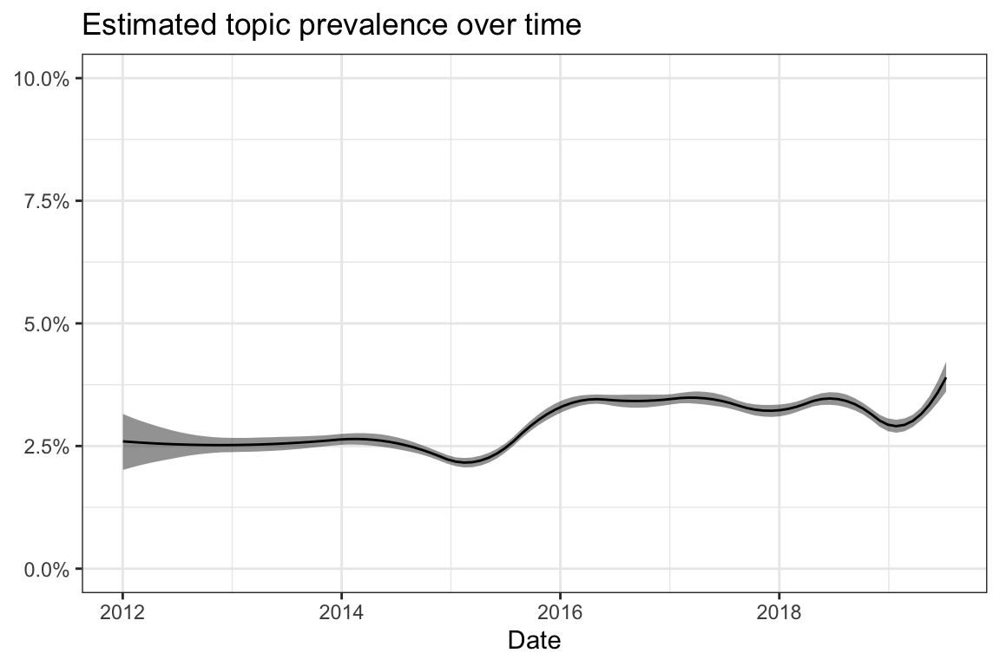
| Type | Terms |
|---|---|
| frex | voll, stillen, essen, milch, bauch, kopf, laufen, langsam, anfang, nimmt |
| lift | größe, brei, milch, rücken, stille, voll, laufen, isst, stillen, essen |
| prob | stillen, kopf, voll, wenig, essen, liegt, anfang, bauch, nimmt, liegen |
| score | größe, stillen, essen, milch, kopf, voll, bauch, flasche, trinkt, brei |
| Rank | \(\gamma\) | Text |
|---|---|---|
| 1 | 0.61 | Tolle Maße… mein kleiner möchte auch nicht aufm Bauch liegen .. mittlerweile kann er sich von rücken auch Bauch drehen ( Bauch auf rücken klappt noch nicht , er versucht auf die Knie zu kommen klappt aber nicht ) Er Bleibt aufn Bauch höhstens 5-10 min liegen das war’s auch schon, |
| 2 | 0.53 | Anfangs gebe ich das Essen nach dem Stillen, aber immer zu den Zeiten wo wir auch essen. Irgendwann möchte das Kind dann vorher nicht mehr gestillt werden. Dann stille ich nach Bedarf nach dem Essen. Bis zum 1. Lj sollte Milch die Hauptmahlzeit sein. Dora hat dann nach und nach aufs Stillen verzichtet. Jetzt trinkt sie noch 2x täglich. |
| 3 | 0.50 | Joshua gehört mit seinen 12, 2 auch eher zu den leichten. Er isst auch sehr wenig. Mein Problem bei der hitze ist aber eher das trinken . Er trinkt so unglaublich wenig (Ok ich selber habe damit auch immer meine Probleme genug zu trinken ). Wie klappt das bei euch ? Ich erinnere ihn ständig, gebe ihm schon etwas saft zum Wasser |
| 4 | 0.49 | Mein Kleiner kann sich nur vom Rücken auf den Bauch drehen und das macht er auch nur im Bett. Er kann nicht sitzen und auch nicht krabbeln, geschweige denn laufen. Wenn er auf dem Bauch liegt rudert er mit Armen und Beinen und sieht aus wie ein gestrandeter Wal. Ja, eure Mäuse sind weit. |
| 5 | 0.48 | Hi, also ich denke, dass sind genug Vitamine. Meine isst sehr gerne Obst, am liebsten Himbeeren und Heidelbeeren, aber auch Erdbeeren, Johannisbeeren, Äpfel, Birnen, Orangen, Mandarinen, Pflaumen.. Bei Gemüse ist sie schon wählerischer, Spinat und gekochte Möhren mag sie nicht. Dafür isst sie aber gerne Salat. Trinken tut sie verdünnten Apfel- oder Orangensaft sehr gerne oder halt Tee. LG |
| 6 | 0.44 | Mausi kneift sich in die Wange, wenn sie gestresst oder kurz vor der Reizüberflutung ist. Eventuell ist das Kratzen bei Euch auch ein Zeichen für Müdigkeit, Reizüberflutung, Stress etc.? Beim Zahnen hat sie gerade plötzliches Weihnen (selbe Art wie bei der Impfung oder als sie sich gestoßen hatte), panisches Hände in den Mund stecken und drauf rum beißen, hecktisch alles Greifbare in den Mund stecken, dabei jammern und energisch reinbeißen, starkes Sabbern, nicht an der Brust trinken können obwohl Hunger vorhanden ist. Sie schreit die Brust an, steckt sich ihre Hand in den Mund oder beißt in meine Hand, versucht anzudocken mir Hand im Mund, beißt weinend auf meiner Brustwarze rum etc. erst wenn der Hunger übermächtig ist oder sie im Halbschlaf ist trinkt sie. |
| 7 | 0.44 | Was kann ich denn tun wenn meine Tochter es hasst Zähne zu putzen sie presst den Mund zu…egal ob im Badezimmer oder beim wickeln. Sie nimmt die Zahnbürste zwar selbst und nimmt sie in den Mund aber das ist ja kein putzen |
| 8 | 0.43 | Meine trinkt über Tag und Nacht verteilt auch noch 4-5 Flaschen 1er Milch, obwohl sie mittlerweile ganz gut bei uns mit isst oder Brei bekommt. Mittags trinkt sie teilweise auch noch 120ml nach 200gramm Brei. So lange sie nicht zu dick ist, sondern bei uns eher im Gegenteil, mach ich mir da keine Gedanken. Gibt es denn Gründe warum sie nur noch 300ml Milch trinken sollten? Schädlich ists ja nicht, oder? |
| 9 | 0.42 | Hallo! Nur so als kleine Randbemerkung: von Milch werden die Kleinen eher satt wie von Brei. Schau mal auf die Kalorien. Da liegt Brei weit unter Milch ;-) vielleicht wäre dann die 1er Milch doch eine Alternative. |
| 10 | 0.41 | Meine KiÄ ist zusätzlich Gastroenterologin und bestärkt mich sehr darin, auch weit über 6 Monate VOLL zu stillen… Sie sagt, etwas besseres könne man für Darm und Immunsystem nicht tun. Es sei außerdem von der Natur so eingerichtet, dass ein Baby voll gestillt wird, solange es nicht selbst essen kann (Sitzen, Zähne, Feinmotorik, etc.) und so lange sei in der Regel nicht mit Eisenmangel zu rechnen. Meine Große wurde 8 Monate voll und weitere 4 Monate fast voll gestillt und hat auch danach konsequent Fleisch und Grünes verweigert. Hatte trotzdem immer top Eisenwerte. |
9.19 Topic 19: Work
Vaccine-related: no
Perspective: n/a
Description: The posts are concerned with various aspects of working during pregnancy or with (young) children.
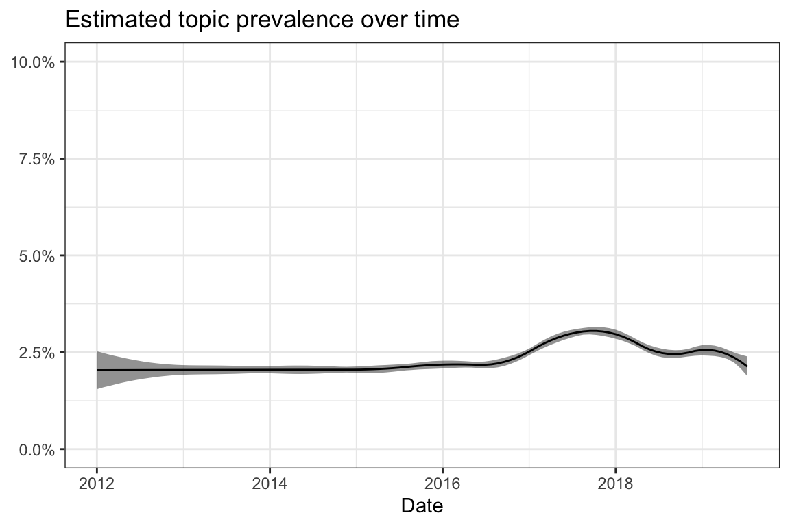
| Type | Terms |
|---|---|
| frex | darf, arbeiten, bleiben, bv, hause, arbeit, nehmen, gehen, frau, situation |
| lift | bv, arbeit, arbeiten, haus, frau, darf, situation, s, bleiben, arbeitet |
| prob | gehen, darf, nehmen, hause, bleiben, arbeiten, problem, möglich, natürlich, stelle |
| score | bv, darf, arbeiten, gehen, hause, nehmen, bleiben, arbeit, arbeite, frau |
| Rank | \(\gamma\) | Text |
|---|---|---|
| 1 | 0.38 | Wenn die Immunit√§t vorhanden ist, kann man Risikolos weiter arbeiten - sonst m√ºsste ja auch jede Kassiererin, jede Verk√§uferin, jede die in der Gastronomie arbeitet auch ins BV - die kommen genauso viel in Kontakt mit Kindern die krank sind‚Ķgerade wegen Frauen, die eben das BV ausnutzen nur um zu Hause zu bleiben, um die SS sorgenfrei zu genie√üen, wurden vom Gesetzgeber die Vorgaben f√ºr das BV versch√§rft üôà |
| 2 | 0.35 | Bei möglicher Strahlenbelastung, Umgang mit Blutproben etc… ist bei uns im Mutterschutzgesetz festgelegt, dass die Frau nicht mehr arbeiten DARF! Der Arbeitgeber ist gesetzlich verpflichtet, sie freizustellen oder zu versetzen - falls möglich. Habt ihr kein Mutterschutzgesetz mit derartigen Klauseln? |
| 3 | 0.34 | Ja habe ich, und ich habe eine Auflistung was ich nicht machen darf. Und wenn ich das alles einheize stehe ich nur im Weg. Darf keine konflikte machen,erste Hilfe machen Ausflüge machen heben hocken… darf ich alles nicht machen. Achja und nicht alleine arbeiten. Haben einfach nur Angst |
| 4 | 0.34 | Müsstest Du nicht zum Betriebsarzt o.ä.? Wenn z B.Dein Impfstatus nicht ausreicht, würdest Du ein BV bekommen. Bzw. könnte es auch sein, dass der Betriebsarzt Dir eine Gefährdungsbeurteilung des Arbeitsplatzes mitgibt. Dies müsste Deine Chefin dann ausfüllen und daraus könnte sich ein BV ergeben. Wenn Du schon ahnst, dass Du eh ständig fehlen wirst, würde ich fairerweise ins BV gehen. Wenn das vermeidbar ist, dann würd ich mich auch nicht ins BV schicken lassen. |
| 5 | 0.34 | Es ist sicherlich normal, dass sich Dinge und Einstellungen ändern/anpassen können. Das was Du alles beschreibst sind für mich schon fast Dinge, wo einer an einem Ende, der andere am anderen Ende steht - da wirds ja selbst mit Kompromissen schwierig. Nein, so extrem kenne ich das nicht, es wird auch mal diskutiert aber grundsätzliche Dinge, da sind wir uns einig. gegensätze ziehen sich nicht an - die sind am Anfang spannend und dann einfach nur noch mühsam. Lichtchen |
| 6 | 0.34 | Naja, da spielen viele Dinge eine Rolle! Man darf kein Kontakt zu Blut, Ausscheidung, oder anderen Körpersekreten haben. Man darf keine Wunden versorgen und spritzen darf man auch nicht mehr. Gegen viele der übertragbaren Krankheiten gibt es keine Impfung oder immunität. Das Ding ist, es ist im ambulanten Dienst kaum möglich eine Tour zu erstellen in der man all das nicht machen muss, also kann der AG dem AN keine Arbeit zur Verfügung stellen in der er noch tätig sein darf. Da bleib nur das BV. |
| 7 | 0.33 | Richtig, kann man deinem Text entnehmen, aber da h√§ttest du eingesetzt werden k√∂nnen. H√§ttest du nur wirklich gewollt, h√§ttest du etwas gegen das BV machen k√∂nnen. Und ich beleidige dich nicht, aber dann steh dazu, dass du dein BV jetzt toll findest, denn du hast ja nichts selber unternommen weiter arbeiten zu k√∂nnen scheinbar. Wenn ich ein Kind plane, dann informiere ich mich vorher √ºber meinen Impfstatus, wenn ich in so einem Bereich arbeite. Man darf sein BV √ºbrigens auch toll finden, das ist keine Straftat üòä |
| 8 | 0.32 | Ich würde - wenn von Haus aus keine Risikoschwangerschaft vorliegen würde- erstmal die Arbeit antreten…(wie hast du’s denn nun gemacht? Heute ist ja schon der 1.10?) Bei uns (Pflegeheim) ist es auch so dass ein sofortiges BV vom AG ausgesprochen wird..abgesehen davon hatte ich bereits 2 Risikoschwangerschaften und dürfte so und so nicht arbeiten gehen |
| 9 | 0.32 | Ich bin auch Lehrerin und arbeite gerne. Merke allerdings schon seit einiger Zeit, dass ich so langsam an meine Grenzen stoße. Meine FÄ hat mir selbst schon ein BV oder teilweises BV angeboten. Wahrscheinlich nehme ich Letzteres doch noch an… |
| 10 | 0.32 | Also ich arbeite in der Krippe und durfte nach Feststellung aller Antik√∂rper und immunit√§ten weiter arbeiten. Nat√ºrlich aber etwas unter anderem Bedingungen. Langsam wird die Arbeit aber etwas beschwerlich üôà |
9.20 Topic 20: Vaccination decision
Vaccine-related: yes
Perspective: Specific vaccinations
Description: Short statements on the decision and reasons to vaccinate or to not vaccinate, respectively. Additionally, some questions on the vaccination decision of other users. Mostly specific to certain vaccinations.
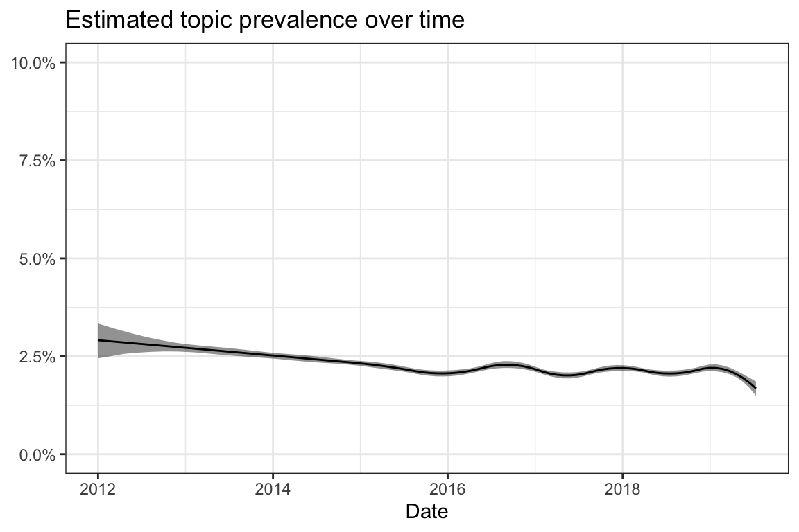
| Type | Terms |
|---|---|
| frex | lassen, lasse, NICHT_IMPFEN, lässt, überlegen, lasst, dagegen, lass, wann, unsicher |
| lift | lasst, lassen, überlegen, lasse, NICHT_IMPFEN, lässt, lass, dagegen, beraten, unsicher |
| prob | lassen, NICHT_IMPFEN, dagegen, lasse, lässt, wann, lass, überlegen, möchte, unsicher |
| score | lasst, lassen, NICHT_IMPFEN, lasse, dagegen, lässt, lass, wann, überlegen, unsicher |
| Rank | \(\gamma\) | Text |
|---|---|---|
| 1 | 0.31 | Du kannst mir Folgendes glauben: Ich habe mich sehr wohl mit dem Impfthema auseinandergesetzt. Ich habe mich beraten lassen, noch mehr beraten lassen, von jemand anderem beraten lassen und zweimal den Impftermin verschoben. Ich habe mich belesen und sämtliche Risiken kennengelernt. Auch alle Inhaltsstoffe sind mir bekannt. Du glaubst doch nicht, dass ich meinem Kind “irgendeine Spritze” ins Bein jagen lasse. Stupid! ABER: ich habe dann auch die Gefahren bezüglich einer Infektion ausreichend studiert, mich nochmals beraten lassen und dann entschieden, wir lassen Impfen. Wer das nicht tun möchte - ok. Aber Du versuchst hier (nicht zum ersten mal, wenn ich mich recht erinnere) vehement die Impfbefürworter zu bekehren. Wenn Du Dein Kind nicht impfen lassen willst, dann lass es. Wieso ist es Dir so wichtig, andere zu bekehren? Glaubst Du wirklich, dass Du das auch nur bei einer Person schaffst…sinnlos. |
| 2 | 0.26 | Lasst ihr eure Mäuse gegen Grippe impfen? Ich hab mich noch nie dagegen impfen lassen, bin jetzt aber am überlegen ob ich uns impfen lasse… |
| 3 | 0.23 | Also ich lass Marit noch nicht impfen. Sind nämlich auch erst krank gewesen bzw noch etwas abgeschlagen. Solange sie nicht 100 Prozent gesund ist lass ich da nichts machen. Rota-Viren lassen wir übrigens nicht impfen.. find ich persönlich unnötig. |
| 4 | 0.22 | WENN ich eine Tochter hätte, die würde ich impfen lassen, sonnenklar! Die Vorsorgeuntersuchungen ersetzt das nicht! Gib dir einen Ruck, lass dich von deinem Gyn nochmal beraten und lass sie impfen! |
| 5 | 0.22 | Ich habe mich entschieden mich nicht impfen zu lassen. Trotz Impfung kann man auch einen grippalen Infekt bekommen und von daher ist mir das lieber mich nicht impfen zhu lassen |
| 6 | 0.21 | Warum lässt du nur 4 Fach impfen und was lässt du nicht impfen? wir haben 6 Fach und pneumok. Rota haben wir nicht impfen lassen. Ich hab mich bei befreundeten Kinderärzten erkundigt und die haben mir so geraten. |
| 7 | 0.21 | Lasst ihr bei eure kleinen die zeckenschutzimpfung machen? Wenn ja wann lasst oder habt ihr impfen lassen? Wenn nein warum nicht? |
| 8 | 0.21 | Wir können mal wieder nicht impfen lassen, die Jungs haben seit ihrem Infekt ne Dauer triefnase und etwas Husten und da lass ich die beiden nicht impfen. Mein Mann und ich arbeiten zwar in der Pflege aber lassen uns auch nicht impfen, ich hab mich einmal impfen lassen und genau in der Saison hatte ich die Grippe da ich mich mit einem anderen Stamm angesteckt habe (war auch das einzige mal das ich die Grippe hatte), mein Mann hatte noch nie die Grippe. Aber Kinder würde ich impfen lassen so lange sie gesund sind. |
| 9 | 0.21 | Lass unseren John zur U4 das erste Mal impfen. Rotbackigeren hab ich beim Großen nicht impfen lassen. Überleg ob ich das beim Kleinen machen lasse und ggf. den Großen auch impfen lasse er geht im August in den Kindergarten. Lass aber nicht immer so viel auf einmal impfen. |
| 10 | 0.21 | Hallöchen. Ich übelege mir mein Baby nicht impfen zulassen und deswegen interessiert es mich, ob es hier auch andere Mamis gibt, die nicht impfen werden lassen. Fals ja, wieso werdet ihr eure Babys nicht impfen lassen? |
9.21 Topic 21: Vaccination timetable
Vaccine-related: yes
Perspective: Practical issues
Description: The posts describe the timeline of vaccinations during early childhood and report which vaccinations are applied when.
| Type | Terms |
|---|---|
| frex | 3, monate, monaten, 4, 6, 2, 5, monat, 12, alt |
| lift | fach, 3, monat, monate, 6, monaten, 5, 4, 12, 9 |
| prob | 2, 3, wochen, monate, 4, monaten, 6, 5, alt, jahren |
| score | fach, 2, 3, monate, wochen, 4, monaten, 6, alt, 5 |
| Rank | \(\gamma\) | Text |
|---|---|---|
| 1 | 0.63 | “Je nach verwendetem Impfstoff werden ab dem Alter von 6 Wochen 2 (Rotarix®) bzw.3 Dosen (RotaTeq®) in einem Abstand von 4 Wochen verabreicht. Die STIKO rät die Impfserie spätestens bis zum Alter von 12 Wochen zu beginnen und vorzugsweise bis zum Alter von 16 (Rotarix®) bzw. von 20-22 Wochen (RotaTeq®) abzuschließen. Nach Fachinformationen muss die Impfserie für Rotarix® auf jeden Fall bis zum Alter von 24 Wochen und für RotaTeq® bis zum Alter von 32 Wochen abgeschlossen sein.”https://www.rki.de/DE/Content/Kommissionen/STIKO/Empfehlungen/STIKO_Weitere/STIKO_RotavirusImpfung.html |
| 2 | 0.53 | Falls man es nicht lesen kann: Ist das Kind bei Erstimpfung jünger als 12 Monate, dann gibt es 2 bzw. 3 Dosen im Abstand von mindestens 2 Monaten und die Auffrischimpfung ebenfalls mit Abstand 2 Monate. Ist das Kind älter als 12 Monate, gibt es 2 Dosen mit Abstand 2 Monate und die Auffrischimpfung im Abstand von 12-23 Monaten. |
| 3 | 0.53 | was erzählt meine kä denn da? ich kann mich gerade so mit dem 4fachimpfstoff tetravac anfreunden! sie meinte, der ist ab dem 3.lj erst zugelassen! jetzt les ich mir den beipackzettel durch und da steht: “Die Grundimmunisierung kann ab dem Alter von 2 – 3 Monaten 3mal je 1 Dosis im Abstand von 1 – 2 Monaten oder ab dem Alter von 3 Monaten 2mal je 1 Dosis im Abstand von 2 Monaten, gefolgt von einer dritten Dosis im Alter von 12 Monaten (entsprechend den nationalen Impfempfehlungen) erfolgen.” |
| 4 | 0.53 | Wir mussten 2 Monate auf den Termin beim Kardiologen warten. Hatten den Termin dann als er jetzt 6 Monate alt war. Das Herzgeräusch sind 2 Sehnenfäden, aber er hat auch ein Mini Loch. Wir müssen erst wieder zur Kontrolle, wenn er 3 Jahre ist. |
| 5 | 0.50 | http://www.gesetze-im-internet.de/beeg/__4.html Lt Gesetz kannst du Elterngeld bis zum 14. Lebensmonat beziehen BEEG §4 Absatz (1). Elterngeldplus auch danach noch, aber lt §4 Absatz (3): “Statt für einen Monat Elterngeld im Sinne des Absatzes 2 Satz 2 zu beanspruchen, kann die berechtigte Person jeweils zwei Monate lang ein Elterngeld beziehen,…” kannst du auch nur tatsächlich zustehende Elterngeldmonate für ElterngeldPlus-Monate verwenden. So verstehe ich den Gesetzestext… Durch die 12 Wochen Mutterschutz nach Geburt sind schon mal 3 Basiselterngeldmonate weg… kommen die Zwillinge zeitiger und du hast längeren nachgeburtlichen Mutterschutz eventuell sogar 4 Monate… Bleiben noch 9 Monate…. nimmst du bis zum 6.LM das BV wenn das möglich ist dann sind das weitere 3 Monate die von den möglichen Elterngeldmonaten abgehen. Bleiben noch 6 Monate Elterngeld bzw 12 Monate ElterngeldPlus… In der Variante wärst du noch durch den Kündigungsschutz (4 Monate nach Geburt + 8 Wochen vor Beginn Elternzeit ) geschützt, da dass hier auch angesprochen wurde für die Variante mit BV. Da musst du aber trotzdem mal Kontakt mit der Elterngeldstelle bzw dem BMFSFJ https://www.familien-wegweiser.de/wegweiser/Service/kontakt.html dazu aufnehmen und dort nachfragen wie das geregelt bzw. gehandhabt wird. |
| 6 | 0.47 | Unter 2 Jahren muss 2x geimpft werden. Mein Sohn ist 6 Monate. Wird am Freitag geimpft und dann in 2 Monaten wieder. Die Dritte erfolgt wenn er 2 Jahre alt ist oder 3 Jahre. Du musst alle 3 Impfungen bezahlen jeweils 120 Euro oder ein bisschen mehr. Die AOK Niedersachsen wird diese 3 Impfungen jeweils mit 80% mir erstatten. Die AOK Sachsen anscheinend alle 3 zu 100%. |
| 7 | 0.47 | Man spricht erst sobald der Monat vollendet ist vom z.B. 12. Monat. Deine Tochter ist also einen Monat vor ihrem 1. Geburtstag ELF Monate alt und nicht 12… Klar, sie befindet sich ab dem 24.07. im zwölften Lebensmonat, ist aber noch keine 12 Monate alt, sondern 11. Kann etwas verwirrend sein, ich weiß… Denn sie ist am Tag ihrer Geburt ja auch nicht einen Monat alt… Sondern erst einen Monat nach ihrer Geburt Ich bin aktuell 30 Jahre alt und befinde mich somit in meinem 31. Lebensjahr. So wird das immer gerechnet :) |
| 8 | 0.45 | Meine Lütte wird am 10.11. 4 Monate alt :) der erste Piekser käme dann also mit ca 4,5 Monaten. Den 2. bekommt sie dann wenn sie min 6 Monate ist. Ja, wir wohnen im schönen Taunus :) ca. 20 Min von Wiesbaden entfernt. |
| 9 | 0.45 | Hab das impfbuch vor mir: Max bekam mit 3 Monaten, 4 1/2 Monaten, 6 Monaten und 1 1/2 Jahren die 6-Fach Impfung + Pneumokokken. Mit 13 Monaten und 22 Monaten MMR+V. Sprich, er würde 4x geimpft, bis er 13 Monate alt war. Lg alex |
| 10 | 0.45 | Korrektur: Hab grad noch was gefunden… §6 (3) Stillende Mütter dürfen mit den in § 4 Abs. 1, 2 Nr. 1, 3, 4, 5, 6 und 8 sowie Abs. 3 Satz 1 genannten Arbeiten nicht beschäftigt werden. Die Vorschriften des § 4 Abs. 3 Satz 2 und 3 sowie Abs. 5 gelten entsprechend. Gibt also Möglichkeiten.. Kommt drauf afk, ob’s bei dir zutrifft |
9.22 Topic 22: Bad experiences
Vaccine-related: yes
Perspective: Relationship and communication
Description: Statements describing bad experiences or providing comfort to those who reported bad experiences and side effects of vaccinations.
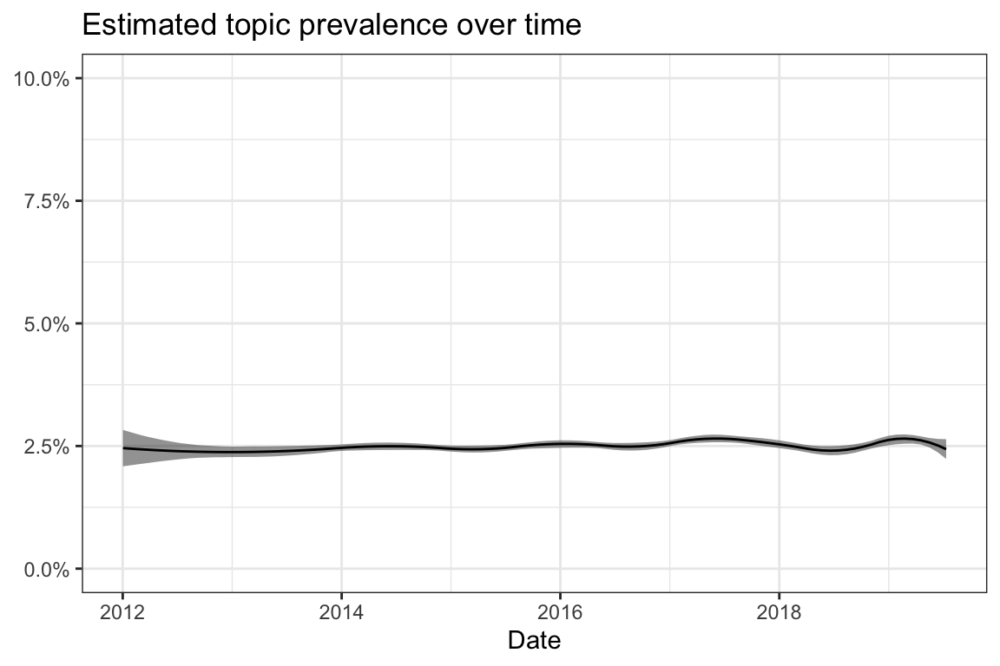
| Type | Terms |
|---|---|
| frex | mann, echt, gott, froh, leid, freund, erzählt, glück, krankenhaus, dank |
| lift | gott, freund, erzählt, schrecklich, mann, leid, froh, echt, panik, furchtbar |
| prob | echt, mann, glück, total, dank, froh, krankenhaus, familie, leid, freundin |
| score | gott, echt, mann, glück, dank, leid, total, froh, krankenhaus, familie |
| Rank | \(\gamma\) | Text |
|---|---|---|
| 1 | 0.32 | Selbst schuld, oder was? Nicht gläubig genug? Oder müssen die gar für ihre Eltern büßen? Igitt, ist das eine widerliche Einstellung ! Und was ist denn das für ein Gottesbild? Ein Gott, der kleinluch ist und sein Mütchen willkürlich an Kindern kühlen muss? Mit einem liebenden, gütigen und “souveränen” Gott hat das für mich nichts zu tun. Mein Gott ist/wäre das nicht … Wenn, dann würde ich es eher so sehen, dass Gott jns Menschen die Gabe gegeben hat, Mittel gegen solche Krankheiten zu finden, z.B. eine Impfung. Irgendwie muss ich da an diesen Witz denken: große Hochwasserkatstrophe, Mann schafft es gerade so, sich auf das Dach seines Hauses zu retten, wlbei das Wasser noch steigt. Er betet, dass Gott ihn erretten möge. Kommt der Nachbar mit seinem Boot und bietet dem Mann einen Platz darin an. Mann lehnt ab mit der Begrändung, Gott wird ihn retten. Mann betet nochmals. Kurze Zeit später kommt ein Polizeiboot und will drn Mann retten. Man lehnt ab, s.o.. Dann kommt ein Rettungshubschrauber geflogen und lässt ein Seil zum Mann ab. Mann lehnt ab, s.o.. Dann verschlingt ihn das Wasser und Gott sagt: " was hätte ich denn sonst nich machen sollen um den zu retten?" |
| 2 | 0.28 | Oh man, das tut mir echt schrecklich leid, dass ihr das durchmachen müsstet mit eurem Kind :-((( zum m Glück ist alles gut gegangen. |
| 3 | 0.24 | Am besten in Zukunft auch nicht mehr schauen wenn man die Straße überquert so Gott will wird man die andere Seite schon erreichen. Alter Schwede da fällt mir nur ein Witz dazu ein Ein Mann hat Gott 33 Jahre lang gelobt. Eines Tages fiel der Mann in einen Fluss, und er war am Ertrinken. Da kam die Feuerwehr und wollte ihm helfen. “Nein!”, sprach der Mann. “Ich habe Gott 33 Jahre lang gelobt, Gott wird mir helfen!” Als das vorüber war, kam eine zweite Feuerwehr, die ebenfalls helfen wollte. Aber wieder antwortete der Mann: “Nein! Ich habe Gott 33 Jahre lang gelobt, er wird mir helfen!” Dann kam die dritte Feuerwehr, und wieder wiederholte sich das ganze. Dann aber geschah nichts mehr, und der Mann musste erbarmungslos ertrinken. Als er in den Himmel kam, fragte er Gott: “Gott, warum hast du mir nicht geholfen?” “Hab ich doch! Ich habe dir doch drei mal die Feuerwehr geschickt” |
| 4 | 0.23 | Ohje, das klingt ja schrecklich! Es tut mir unendlich leid, dass dein Mann (und du) auch jetzt noch durch die Kinderlosigkeit unter dieser Vernachlässigung zu leiden habt. :( |
| 5 | 0.23 | Ohje, das klingt ja schrecklich! Es tut mir unendlich leid, dass dein Mann (und du) auch jetzt noch durch die Kinderlosigkeit unter dieser Vernachlässigung zu leiden habt. :( |
| 6 | 0.23 | Das tut mir schrecklich leid Gott sei dank ist alles noch gut verlaufen ! Jetzt hab ich noch mehr Angst vor der Impfung |
| 7 | 0.22 | Heftig! Ich hatte schon Kindergartenkinder bei denen es hieß, dass könnte passieren - ist es aber zum Glück nie… Das muss total schrecklich für dich gewesen sein! Fühl dich gedrückt! |
| 8 | 0.21 | bei ihrem freund weiß ich es nicht, aber meine schwester ist dagegen geimpft.sie hat es aber nicht so heftig wie ihr freund |
| 9 | 0.21 | Oh mann ich versteh deinen Ärger gut..vor allem weil du deinen Bruder nur so selten siehst..Das tut mir sehr leid für euch! Ist denn deine Nichte auch noch zu klein für die Impfung? Oder ist dein Bruder auch gegen das Impfen? Wenn ersteres der Fall ist, dann finde ich es von dem Besuch total unfair, mit den kranken Kindern zu ihm zu kommen.. Echt ärgerlich für euch und euren gemeinsamen Urlaub….. |
| 10 | 0.20 | Unglaublich…das was sie da erzählt hat könnte unter umständen lebensgefährlich sein!!! Na gott sei dank glaubst du das selber nicht ;) |
9.23 Topic 23: Measles & mumps
Vaccine-related: yes
Perspective: Specific vaccinations
Description: Description of vaccinations against measles and mumps with a focus on combined vaccines against both diseases. The statements discuss the danger of childhood disease in general and deal with the effectiveness and need to be vaccinated in different target groups.
| Type | Terms |
|---|---|
| frex | masern, mumps, schutz, geimpft, gestorben, kinderkrankheiten, nestschutz, geschützt, besteht, 100 |
| lift | mumps, masern, jungs, schutz, gestorben, nestschutz, geschützt, junge, kinderkrankheiten, besteht |
| prob | geimpft, masern, schutz, röteln, mumps, 100, besteht, kinderkrankheiten, nestschutz, geschützt |
| score | mumps, masern, geimpft, schutz, röteln, nestschutz, kinderkrankheiten, gestorben, geschützt, antikörper |
| Rank | \(\gamma\) | Text |
|---|---|---|
| 1 | 0.50 | Ich bin 41 und bin gegen Masern geimpft. Allerdings nicht gegen Röteln und Mumps, soweit ich weiß. Es gab noch nicht den Kombi-Impfstoff, aber Masern wurde schon geimpft (kann das sein, dass es noch mit Lebend-Viren geimpft wurde?). LG cori |
| 2 | 0.47 | Ich hatte Masern, Mumps, Röteln, Wipo. Masern trotz Impfung (aber nur ein mal geimpft). Die waren nicht lustig. An Wipo, Mumps und Röteln erinnere ich mich nicht/ so gut wie nicht. LG Inge |
| 3 | 0.40 | Morgen Ihr lieben Ich hab mal eine Frage zu den Kombi Impfungen wenn man zB nach einer MMR Impfung gegen Röteln NICHT Imun ist, heißt es dann auch, das man keinen Masern und Mumps Schutz hat? Und Umgekehrt Wenn man nach einer MMR Impfung einen Rötelschutz hat, heißt es dann das man auch gegen Masern und Mumps immun ist, oder musste man das testen lassen, anhand einer Titerbesrimmung? |
| 4 | 0.40 | Masern? Dagegen ist man doch aber geimpft, also wenn man geimpft ist, oder gibt es diese Masern,Mumps,Röteln Impfung nicht mehr? |
| 5 | 0.40 | Infektionskrankheit Kontagiositätsindex des Erregers (als Maßzahl) Masern 0,98 [1] Pocken 0,95 Keuchhusten 0,90 (0,8-1,0) Mumps 0,8 Typhus 0,50 Scharlach 0,10-0,30 Röteln 0,15-0,20 Diphtherie 0,10-0,20 Bakterienruhr 0,15 Typhus abdominalis 0,50 Poliomyelitis 0,001-0,003 BEDEUTET: => Ist der Kontagiositätsindex wie bei Masern 0,98, besteht eine Ansteckungswahrscheinlichkeit bzw. eine Infizierung bei 98% => bei ungeimpften Personen! |
| 6 | 0.38 | In meiner Schule (damals OS) wurden alle Mädchen, die nicht gegen Röteln schon früher geimpft wurden oder nachweislich Röteln gehabt hatten, in Reih und Glied gestellt und geimpft. Mit der Polio war es auch so. |
| 7 | 0.37 | Die Wahrscheinlichkeit ist genauso hoch Ich bin zb auch komplett geimpft und hatte Windpocken masern und röteln. Mein bruder ebenfalls voll geimpft hatte masern mumps und Windpocken |
| 8 | 0.37 | H√§tte ich gekonnt ja. Habe ich aber nicht. Gegen Mumps wurde ich geimpft, aber die Antik√∂rper waren nicht ausreichend. Es war ja nun der Betriebsarzt, also der T√úV, und nicht mein Gyn. Ich w√§re auch in die Rechtsabteilung gewechselt, aber da mein Vertrag unter Sozialp√§dagoge l√§uft und nicht als juristischer Mitarbeiter war das wohl rechtlich nicht m√∂glich. Ich bin √ºbrigens auch nicht gegen Grippe geimpft. üò±üò±üò± |
| 9 | 0.37 | Wir haben Keuchhusten (Pertussis) geimpft bekommen. Schau mal im Impfpass nach. Mit einem Jahr wird Mumps Masern und Röteln geimpft. Ich hätte die der Masern wegen auch am liebsten jetzt schon. |
| 10 | 0.37 | Ich meine, meine Jungs sind auch nicht gegen Meningokokken C geimpft. Masern, Mumps, Röteln, Tetanus, Windpocken……das Übliche, aber die nicht….. |
9.24 Topic 24: Appointments
Vaccine-related: yes
Perspective: Practical issues
Description: Doctor appointments for vaccinations. One particular aspect is about questions whether or not one should keep or postpone an vaccination appointment because of a cold or other illnesses.
| Type | Terms |
|---|---|
| frex | woche, letzte, nächste, termin, schnupfen, seit, montag, freitag, letzten, tagen |
| lift | nächste, verschieben, woche, letzte, schnupfen, impftermin, montag, donnerstag, dienstag, termin |
| prob | seit, woche, termin, letzten, letzte, tagen, wochen, nächste, ende, schnupfen |
| score | nächste, woche, seit, termin, letzte, tagen, husten, wochen, montag, schnupfen |
| Rank | \(\gamma\) | Text |
|---|---|---|
| 1 | 0.39 | Ist bei uns auch so. Die kleine hat totales Schubverhalten seit einer Woche, aber der 12 Wochen Schub ist eigentlich schon gewesen… Ich tippe auf Nachwehen von der Impfung letzte Woche |
| 2 | 0.37 | Also wir wanderten von Magen Darm direkt zu Schnupfen. Dieser mauserte sich zu Husten. Zwei Wochen Husten,eine Woche gesund,jetzt wieder Schnupfen.Wenigsten die Viren fühlen sich sauwohl. |
| 3 | 0.37 | Mein kleiner ist jetzt 1 Jahr alt und am Montag wäre der nächste Impftermin . Jetzt hat er aber seit heut Nacht Husten und Schnupfen . Soll ich das Wochenende noch abwarten oder gleich anrufen und den Termin verschieben? |
| 4 | 0.36 | also ich hatte am 08.11. meine letzte Frauenarzt Untersuchung - da hattte ich +4kg auf der waage. nächste Woche (22.12.) hab ich dann die nächste - mal sehen wie es dann aussieht… |
| 5 | 0.36 | Unser Sohn hatte heute eigentlich auch den letzten Impftermin, aber leider musste ich es auf nächste Woche verschieben weil er so erkältet ist. Ich hoffe, dass er bis dahin wieder fit wird.. Ach ja, bei uns kommen schon die ersten Zähnchen und das macht sich ganz schön bemerkbar |
| 6 | 0.35 | Guten Morgen! Wir haben nächsten Dienstag eine Tetanusimpfung vor uns. Seit Freitag ist der kleine Mann erkältet, Schnupfen, Nachts Husten aber sonst fit (kein Fieber, nur Anfangs leicht erhöhte Tempi). Bis Dienstag sollte er wieder fit sein, bin mir aber nicht sicher, ob er nicht längere Zeit vorher gesund sein muss. Was meint ihr, steht dem etwas entgegen oder kann ich unbesorgt impfen lassen? Liebe Grüße |
| 7 | 0.34 | Also, Temperatur kann schon als Nebenwirkung auftreten, aber eigentlich kein Husten und Schnupfen. Wir hatten letzte Woche Donnerstag die Impfung, seit Mittwoch ist sie richtig krank- auch Husten, Fieber, Schnupfen… die Ärztin sagt, mit der Impfung habe es nichts zu tun. Das geht glaube ich einfach rum. |
| 8 | 0.34 | Unsre Maus ist fies erkältet. Mit schleimigen husten und verstopfter Nase. Kann das auch Auswirkungen auf die Verdauung haben? Seit 2 nächten pupst sie in der zweiten nachthälfte wieder so wie in der 10ten woche oder so. Die darm tätigkeit in der Nacht war eigentlich schon einige Wochen vorbei. Hab eigentlich auch nix gegessen auf das sie bislang mit Blähungen reagiert hat. Muss sich eh schon so quälen da kommen Blähungen echt ungelegen |
| 9 | 0.34 | letzte Woche war Laura jetzt bei 6420 g auf 66 cm… nächste Woche Dienstag ist der Mukoviszidose Schweißtest… bin aufgeregt… was haben eure Mäuse jetzt?? |
| 10 | 0.33 | Wir hatten letzte Woche U6, aber wegen Schnupfen und Husten wurde keine Impfung gemacht. Auch bei meinem kleinen läuft seit der Erkältung immer wieder gelbliches Sekret am Auge, aber laut Kinderärztin ist das nicht weiter schlimm. Haben jetzt am Freitag Termin zum impfen, aber leider ist er immer noch etwas erkältet… |
9.25 Topic 25: Procedural issues
Vaccine-related: yes
Perspective: Practical issues
Description: The posts describe or ask about various issues which have to be organized when getting a vaccination. A special focus is on additional vaccinations beyond the recommendations of the Standing Committee on Vaccination at the Robert Koch Institute, because these require more initiative of one’s own. Aspects are side effects, obtaining the vaccine (which often has to be bought at the pharmacy), and whether the health insurance covers the costs.
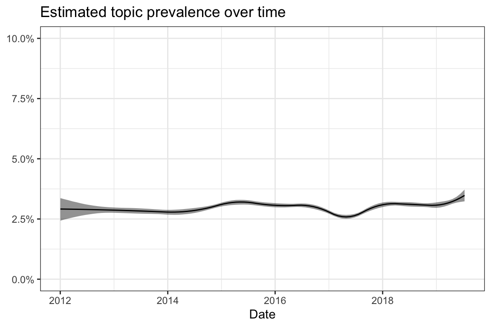
| Type | Terms |
|---|---|
| frex | nebenwirkungen, impfung, impfstoff, kosten, krankenkasse, kinderärztin, nebenwirkung, laut, neu, entschieden |
| lift | krankenkasse, nebenwirkung, kosten, nebenwirkungen, impfstoff, bezahlt, impfung, neu, apotheke, kinderärztin |
| prob | impfung, nebenwirkungen, impfstoff, wohl, allerdings, kinderärztin, laut, entschieden, kosten, bereits |
| score | krankenkasse, impfung, nebenwirkungen, impfstoff, kosten, kinderärztin, laut, bezahlt, nebenwirkung, entschieden |
| Rank | \(\gamma\) | Text |
|---|---|---|
| 1 | 0.36 | Wir haben uns auch dafür entschieden. Eine Impfung hat Ben bereits bekommen, die 2. folgt im August. Er hat allgemein bei keiner Impfung bisher Nebenwirkungen gehabt.. |
| 2 | 0.35 | Die Impfung gegen Meningokokken B da bin ich mir noch nicht sicher ob ich die machen lassen werde , die Impfung hat derzeit noch keine offizielle Empfehlung der Stiko. Da die Impfung ziemlich neu ist hab ich Angst das Nebenwirkungen die noch nicht bekannt sind auftreten könnten. Was habt ihr für die Impfung bezahlt oder hat eure Krankenkasse es übernommen, weil nicht jede würde es übernehmen? |
| 3 | 0.31 | Die Chemie bzw. das “Gift” ist nicht im Impfstoff an sich enthalten, sondern als Trägersubstanz in der Impfung. Deshalb gibt es ja eine 6-fach- oder sogar 8-fach-Impfung, damit minimiert man die Nebenwirkungen der Hilfsstoffe und erspart dem Kind 5-7x mit den Nebenwirkungen (Fieber etc.) zu kämpfen. Sprich: einmal impfen (mit Kombiimpfstoff) = einmal Nebenwirkung, 6x impfen = 6x Nebenwirkungen! |
| 4 | 0.29 | Das was es von der GKV für Pädiater gibt weiß ich aus erster Hand von einer befreundeten Kinderärztin. Für eine Privat gezahlte Hep A Impfung für mich hatte ich 10€ zu zahlen (exkl. Impfstoff, nach GOÄ abgerechnet). Die 10€ beinhalteten die Beratung/Aufklärung und die Impfung selbst. Der Impfstoff war extra zu zahlen in der Apotheke. |
| 5 | 0.28 | Wie ist es bei euch mit der Meningokokken B Impfung? Es ist ja eine Selbstzahler Impfung. Wir zahlen 105€ für den Impfstoff und nochmal 21€ zusätzlich dafür, dass Sie es impfen dürfen. Meine Krankenkasse erstattet es nur, wenn eine Bescheinigung über die ärztliche Notwendigkeit vorliegt. (Diese bekommen wir aber) Wie ist das bei euch gehandhabt? Und bekommt ihr es von der Krankenkasse wieder? |
| 6 | 0.27 | Hat Deine Krankenkasse die Kosten für die Impfung übernommen? Ist ja unterschiedlich, meine will die nicht übernommen und laut dem KiA sind das Kosten von ca. 300€. |
| 7 | 0.27 | ja, ohne Nebenwirkungen Das ist aber eine Impfung bei der ich tatsächlich überlegt habe. Die Kinderärztin hat es empfohlen, so dass ich mich letztendlich dafür entschieden habe. |
| 8 | 0.26 | Habe mich am Montag nach langen Hin- und Herüberlegungen gegen Grippe impfen lassen. Als ich in der Apotheke den Impfstoff holen wollte, meinte die Apothekerin: “Oh! Diesen Impfstoff muss ich bestellen, den haben wir nicht vorrätig.” Ich war etwas irritiert, weil ich dachte, es gäbe halt den einen Impfstoff für die diesjährige Grippe, aber weit gefehlt. Meine Hausärztin hat mich dann aufgeklärt, dass Kassenpatienten nur einen 2- oder 3-fach Impfstoff bekommen, weil die Kassen da einen Rabattvertrag mit den Herstellern abgeschlossen hätten. Die Privatpatienten bekommen aber einen 4-fach Impfstoff… Ich habe die Impfung bisher super vertragen: Die Impfung an sich habe ich gar nicht gespürt, die Einstichstelle hat sich nicht gerötet, der Arm nicht weh getan, ich bin nicht erschöpfter als sonst, … (auf das es so bleibe!) Was ich aber eigentlich sagen will: Sollte sich eine von Euch noch überlegen, dass sie die Grippe-Impfung haben möchte, würde ich als Kassenpatientin die 23 Euro (so viel musste ich in der Apotheke für den Impfstoff auf Privatrezept bezahlen) selber tragen und die 4-fach Impfung mitnehmen. Wenn schon, denn schon! |
| 9 | 0.26 | Großer: U1 und U2 im KH Ende August 30.9. - U3 9.12. - U4 mit erster Impfung 24.1. - zweite Impfung 13.3. - U5 mit dritter Impfung 24.7. - U6 8.9. - vierte Impfung 21.11. - fünfte Impfung dazwischen HMF mit Arztbesuch 27.3. - sechste Impfung 11.8. - U7 Kleiner: 18.4. - U3 30.6. - U4 mit erster Impfung 30.8. - zweite Impfung 26.10 - U5 1.11. - dritte Impfung (da er erwohlzu U verschnupft, sonst hätte man das zusammen machen können) 28.2. - vierte Impfung 26.5. - fünfte Impfung Ja, man ist im ersten Jahr so durchschnittlich alle 2 Monate da. |
| 10 | 0.25 | Wir haben die erste “impfwelle” schon hinter uns und bisher alles ohne Probleme gemeistert. Jetzt wär noch Zeit für die Menigokokken B Impfung bevor die nächsten mehrfach Impfungen anstehen. Unser Kinderarzt hat uns die Impfung empfohlen aber wir sollten zunächst mit der Krankenkasse abklären ob die Kosten übernommen werden (Ca. 200€). Diese Impfung ist nicht von der Stiko empfohlen und deshalb keine Kassenleistung. Also hab ich mit der Barmer telefoniert und leider werden die Kosten nicht übernommen. Jetzt meine Frage: hat von euch jemand die Impfung von der Krankasse bezahlt bekommen? Wenn ja von welcher? |
9.26 Topic 26: Sleep
Vaccine-related: no
Perspective: n/a
Description: Various aspects of the sleep rhythm of babies and young children.
| Type | Terms |
|---|---|
| frex | schläft, uhr, nacht, schlafen, bett, morgen, wach, abend, schlaf, nachts |
| lift | nachmittag, uhr, wach, schläft, schlaf, tagsüber, bett, schlafen, std, nacht |
| prob | gestern, morgen, tag, nacht, schläft, stunden, schlafen, geschlafen, abend, bett |
| score | nachmittag, schläft, nacht, gestern, morgen, geschlafen, uhr, schlafen, wach, stunden |
| Rank | \(\gamma\) | Text |
|---|---|---|
| 1 | 0.63 | Das haben wir hier aber auch. Lena schläft nachts ihre 12 Std und tagsüber dann maximal ielleicht mal ein 30 Minuten Nickerchen, das wars aber auch. Dafür ist sie abends total mies gelaunt |
| 2 | 0.61 | Mein Sohn hat bis zur Impfung (vermutlich Zufall, aber an dem Tag hat es sich geändert) von 22-6 Uhr durchgeschlafen, 100ml getrunken und nochmal bis 8 Uhr geschlafen. Jetzt schläft er von 23.30-3.30 Uhr, 100ml getrunken, nochmal bis 6.30 Uhr, 100mk getrunken und nochmal bis 9 Uhr. Das Einschlafen in der Nacht ist kein Problem, aber abends der blanke Horror gewesen Von jetzt auf gleich wurde geweint und geschrien, tragen und leise irgendwas Erzählen half. Jetzt habe ich herausgefunden, dass er unter 950ml / Tag nicht in den Nachschlaf findet. Also notiere ich momentan kleinlich in einer App wieviel er trinkt, um vorbereitet zu sein seitdem bekommt er um 21 Uhr die fehlende Menge zu 950ml und schläft dann friedlich 6 Stunden, trinkt 100ml und schläft nochmal 4 Stunden. |
| 3 | 0.58 | Gestern die halbe Nacht nicht geschlafen, heute den ganzen Tag geschrien! Ich hoffe der Impfspuk hat jetzt ein Ende und er schläft heute Nacht gut, erholt sich und ist morgen wieder ganz der Alte! Mein armer Schatz, da blutet das Mama-Herz wenn er so brüllt! Teilweise hab ich mitgeheult! |
| 4 | 0.58 | Also wir waren heute wieder impfen. Leon hat kurz geweint. Heut Nachmittag auch mal so ne halbe Stunde. Jetz schläft er seitdem auf meinem Bauch. Ich hoff er schläft dann heut Nacht auch noch. |
| 5 | 0.57 | Wir haben gestern die schluckimpfung gehabt. Gestern den ganzen tag geweint und fast nicht geschlafen. Dafür dann die nacht 8stunden am stück. Heut schläft bzw weint er im wechsel und hat durchfall. Hoffe wird bald besser… |
| 6 | 0.57 | Guten Morgen :) unsere Nacht war ruhig. Mila kam glaube 3 mal zum Trinken ( dockt immer nur an in der Nacht ) haben bis 6.30 Uhr geschlafen. Aber neben den Einstichstellen ist alles rot und hart ?! Ist es auch normal das es hart werden kann ? Tempi hatten wir heute morgen kurz bei 38,0℃. Ist aber wieder gesunken . |
| 7 | 0.56 | Alessio kommt nachts wieder dreimal. Er bekommt morgens und abends das Fläschchen und hat eigentlich immer bis 3-4 Uhr geschlafen. Dann kurz gestillt und weiter geschlafen bis 7 oder 8 Uhr. Jetzt ist er als schon gegen 0 Uhr wieder wach. Ist echt anstrengend. Dafür kann ich ihn Abends ohne Probleme hin legen. Morgens macht er meist ein Nickerchen und dann gegen 12 uhr nochmal. Wenn wir spazieren gehen mittags, dann schläft er auch mal 2-3 Stunden. Ähnlich wie bei euch :) |
| 8 | 0.56 | Mikey trinkt auch so unmöglich. 5 Minuten. Ein Gezappel und flüssiger Stuhl. Das Lachen gefällt mir auch total. Ich habe auch noch 8 kg zu viel und ich liege jeden Abend 20 Uhr im Bett mit Mikey. Sonst würden mir die längsten zusammenhängenden Stunden Schlaf fehlen. |
| 9 | 0.55 | Wir sind hier auch total unruhig. Gestern Nachmittag hat er schon nur mehr geschlafen (was sehr ungewöhnlich ist) und zwischendurch genuckelt. In der Nacht wollte er auch nur nuckeln. Wehe, ich nehme ihm im Schlaf vorsichtig die BW aus dem Mund .. Zack wach .. ich hab ihm dann irgendwann doch den Schnuller gegeben, mach ich in der Nacht eigentlich ungern aber ich und meine BW konnten nicht mehr. Selbst wenn der Zwerg geschlafen hat, war er so unruhig, dass ich wach war. Und um halb 7 war die Nacht überhaupt vorbei |
| 10 | 0.54 | Ab 18-21 Uhr wurde geweint, gequengelt und Temperatur von 38,2! Ab 21 Uhr hat sie dann geschlafen! Heut macht sie einen müden Eindruck! |
9.27 Topic 27: Vaccine ingredients
Vaccine-related: yes
Perspective: General vaccination debate
Description: The ingredients of vaccines and the way vaccines work are discussed. Particularly the ingredient aluminium is critically assessed. Potential harms of secondary ingredients are mentioned.
| Type | Terms |
|---|---|
| frex | körper, weniger, immunsystem, aluminium, antibiotika, braucht, deutlich, wirkt, medikamente, mensch |
| lift | aluminium, woher, unterschied, antibiotika, körper, weniger, reagieren, immunsystem, wirkt, weißt |
| prob | mehr, körper, weniger, immunsystem, babys, braucht, früher, außerdem, ganzen, deutlich |
| score | aluminium, mehr, körper, immunsystem, weniger, erreger, braucht, medikamente, mensch, antibiotika |
| Rank | \(\gamma\) | Text |
|---|---|---|
| 1 | 0.56 | Aluminium ist kein Giftstoff - wie immer macht die Dosis das Gift! Mit der Nahrung nehmt ihr täglich bis zu 30mg Aluminium auf, das natürlich auch über den Darm in den Blutkreislauf absorbiert wird. Hauptsächlich ist Aluminium als dritthäufigstes Element der Erde in Getreide, Tee und Schokolade enthalten. Eine Impfung, die man dazu nicht täglich enthält, enthält weniger als 1mg und damit weniger als man täglich mit der Nahrung zu sich nimmt. Gleiches gilt für Formaldehyd. Unser Körper produziert es sogar selbst! |
| 2 | 0.38 | Impfkritiker geht es nicht um das Fieber nach der Impfung , sondern um die Langzeitfolgen!!! In vielen Impfstoffen ist Aluminium als Impfverstärker beigefügt. Aluminium verursacht bei über 200 wichtigen biologischen Funktionen im Menschen Störungen. Zudem kann Aluminium die Blut-Hirn-Schranke überwinden und sich im Nervengewebe anlagern. Das ist nun gerade bei Säuglingen, deren Gehirn noch nicht vollständig entwickelt ist, sehr beängstigend. Im Rahmen des üblichen Impfschemas werden den Babys in den ersten vier Lebensmonaten mindestens 2700 Mikrogramm Aluminium direkt in den Körper eingespritzt. In Deos ist Aluminium aufgrund der schädlichen Wirkung verboten wurden - und da wird das Aluminium nicht direkt in den Körper gespritzt. Das ist nur einer der vielen Gründe, über jede einzelne Impfung, deren Sinnhaftigkeit und vor allem deren Zeitpunkt nachzudenken. |
| 3 | 0.33 | Das Zähneputzen hat Einfluss auf das Immunsystem. Im Mund befinden sich die meisten Keime und Erreger. Das Immunsystem muss hier eine Menge leisten. Einige Herzerkrankungen werden sogar auf Zahnbetterkrankungen zurückgeführt. Dies kann dann sogar zum Tod führen. So, das war jetzt etwas Off-Topic. |
| 4 | 0.32 | Man brauchte viel mehr Antigen und mehr Impfverstärker, weil man die immunologischen Mechanismen noch viel schlechter verstanden hatte. Bei den modernen Kombinationsimpfstoffen nutzt man aus, dass die azellulären Antigene verschiedener Erreger verschiedene Immunzellen aktivieren und so eine Immunität ausgelöst wird, obwohl man insgesamt viel weniger Antigen und Impfverstärker spritzt. Als Beispiel z.B. die TDaP Impfung (Diphterie, Tetanus, Keuchhusten). Gegen azelluläre Bestandteile des Keuchhustenerregers würde der Körper nur sehr schlecht oder gar nicht Antikörper machen, wenn man die spritzt. Das Tetanustoxoid im Impfstoff aktiviert aber sg. Toll-like Rezeptoren, dadurch bekommt man eine entsprechend gute Immunantwort und braucht weniger Verstärker (die wiederum mehr Nebenwirkungen hätten). |
| 5 | 0.32 | Entscheidend ist meiner Meinung nach die tägliche um Vielfaches höhere Aufnahme an Aluminium. Täglich bis 15mg im Gegensatz zu einmalig Max 1,5mg i.m. kann nicht weniger gravierend für den Körper sein. In Anbetracht der Wichtigkeit der impfung ist mir das Aluminium ehrlich gesagt auch schnurz ^^ geht dabei nur um die Verdeutlichung wie irrelevant die Menge an Aluminium in der impfung ist im Gegensatz zum restlichen ungesunden Leben was man so führt. Ich glaube nicht, dass viele impfgegner im täglichen Leben darauf achten. |
| 6 | 0.32 | Kurze Info, in Trinkwasser befindet sich mehr Aluminium, als in einer Impfung. * Ja, stimmt, wenn du 1000 Liter Wasser trinkst kommt etwa die gleiche Menge Aluminium ins Blut wie durch eine Impfdosis. Da hat die Niere doch etwas mehr Zeit das Zeug wieder auszuscheiden bevor es die Blut-Hirn-Schranke durchqueren kann. |
| 7 | 0.32 | Bei den Allergien ist MEINE Theorie : die Kinder werden heute immer mehr steril gehalten. Auch schon bei den Eltern war es schon sehr sauber gehalten. Woher sollen die Körper sich an etwas gewöhnen womit er keinen Kontakt hat. Schaut euch doch die ganzen Seifen Weichspüler Reiniger Waschmittel hygienespühler an. Alles antibakteriell. Dazu kommt noch das die Kinder in der Stadt nicht so sehr mit Pollen Blüten dreck in Berührung kommen wie früher oder wie Landkinder. Einfach aus der Gegebenheit das es das nicht hat. Der körper verlernt das was er nicht braucht dazu gehört leider oftmals auch sich gegen ausseneinflüsse zu wehren oder sie zu verarbeiten. |
| 8 | 0.31 | Zum Alluminium: Handelsübliche Impfstoffe mit Aluminium: DTaP (Diphtherie, Tetanus und Pertussis) — 625 mcg Hepatitis B — 375 mcg Hepatitis A — 250 mcg Hib (Haemophilus influenzae type B) — 225 mcg PVC (Pneumonie-Konjugat-Impfstoff) — 125 mcg HPV (Gardasil) - in jeder der drei Impfstoffdosen 225 mcg Aluminium. Aluminium wird Impfstoffen schon seit etwa 90 Jahren in dem Glauben beigefügt, es rege den Körper zur Produktion krankheitsbekämpfender Antikörper an. Allerdings ist das Aluminium ein Gift und zahlreiche handelsübliche Impfstoffe wie Pneumonie-, Tetanus- und HPV-Impfungen enthalten davon große Mengen. Das Resultat: Kinder erhalten von dem giftigen Aluminium mehr, als die jeweiligen Kontrollbehörden für sicher halten und bei Erwachsenen erhöht sich die lebenslange Anreicherung von Aluminium im Körper. Diese Megadosen können sich verheerend auf das Gehirn auswirken, meint der Newsmax-Gesundheitsexperte Dr. Russell Blaylock und alle möglichen Probleme provozieren – von Gehirnschäden bei Kindern bis zu Alzheimer bei Erwachsene. „Aluminium wirkt toxisch,” so Blaylock. „Überzeugende Untersuchungen haben gezeigt, dass Aluminium selbst in geringen Konzentrationen als kumulativ wirkendes Nervengift wirkt. Es hat die Tendenz, sich im Hippocampus zu konzentrieren, einem Gehirnbereich, der wichtig für unverzichtbare Funktionen wie Lernfähigkeit, Gedächtnis und Verhalten ist. „Wie aktuelle Beiträge zum Aluminium gezeigt haben, provoziert Aluminium in Impfstoffen im Gehirn wachsender Kinder erhebliche Probleme“, so Blaylock. „Die Verdachtsmomente werden immer mehr, dennoch neigen Behörden und Ärzte dazu, diesen Sachverhalt zu gnorieren. Sie lehnen es ab, sich mit den Beweisen zu beschäftigen, da diese eindeutig sind und ihnen Angst machen.“ Von den heute 36 unterschiedlichen Impfstoffen, die wir Kindern verabreichen, enthalten 8 das gefährliche Aluminium“, erläutert Dr. Balylock. „Wie eine Untersuchung ergeben hat, erhalten Kinder (Aluminium-) Dosen, die um das sechsundvierzigfache höher sind, als die von den Behörden festgelegten Maximalmengen.“ Nach Ansicht von Dr. Blaylock hat die Anzahl neurologischer Störungen wie Alzheimer, ALS Multipler Sklerose oder Parkinson explosionsartig zugenommen. „Das hat nichts mit der älter werdenden Bevölkerung zu tun, das ist eine Folge von Toxinen wie Aluminium in Impfstoffen. Aber diese Wahrheit will niemand hören.“ Originalquelle:Sylvia Booth Hubbard, Aluminum and Vaccines — A Brain-Destroying Duo, Says Top Doc, Newsmax.Com Thursday, February 16, 2012 7:53 AM |
| 9 | 0.31 | In Impfstoffen ist kein Quecksilber! Früher wurden einige Impfviren mit Thiomersal (im englischen auch Thiromersal genannt) inaktiviert! Thiomersal ist KEIN Quecksilber, sondern “nur” eine quecksilber-ähnliche Verbindung! Das ist ein himmelweiter Unterschied. Nur zur Info, bevor noch mehr Halbwahrheiten verbreitet werden . |
| 10 | 0.31 | 6 fach wird gut vertragen, die Viren sind abgeschwächt/tot. Es bedeutet weniger arzttermine, weniger Spritzen für das Kind, weniger Zusatzstoffe. Bei jedem Besuch im Park setzt sich der Körper mit mehr Krankheitserreger auseinander als mit der Anzahl im Impfstoff und die sind sogar lebendig. |
9.28 Topic 28: Immediate reactions
Vaccine-related: yes
Perspective: Relationship and communication
Description: Descriptions of how small children and babies react to the vaccination process, in particular to the injection, with a focus on pain and screaming. Also descriptions of the role of the parents and the health professionals during the vaccination.
| Type | Terms |
|---|---|
| frex | mama, weh, arm, kurz, ging, danach, schreien, sofort, schlimm, baby |
| lift | tat, weh, herz, mama, arm, kamen, schreien, beruhigt, gesicht, haut |
| prob | baby, danach, schlimm, ging, kurz, kam, mama, richtig, sofort, arm |
| score | tat, baby, arm, danach, weh, kurz, schlimm, mama, ging, weinen |
| Rank | \(\gamma\) | Text |
|---|---|---|
| 1 | 0.41 | Ne schluckimpfung ist gar nicht schlimm. Da bekommen die eine Flüssigkeit in den mund die die dann eben schlucken müssen. Liam hat es nicht geschmeckt Bei der Impfung war mein mann dabei da ich selbst panische angst vor spritzen habe. Er hatte liam auf dem arm. Der arzt hatte dann die spritze in Oberschenkel gesetzt und natürlich hatte liam dann angefangen zu weinen. Aber überhaupt nicht schlimm. Er kann definitiv schlimmer weinen wenn ihm wirklich etwas weh tut. Der papa hat ihn dann kurz an die brust genommen und dann war auch wieder Ruhe. Nach der zweiten spritze dasselbe. Mein baby ist tapferer wie die mutti |
| 2 | 0.41 | Mein Arzt meinte, dass der Schmerz des Einstichs mit dem Gesicht der Helferin oder des Arztes eher verknüpft werden sollte. Mama oder Papa schnappen sich den Krümel ja sofort, da ist dann das “ich hab Aua und sofort sind Mama und/oder Papa da um mich zu retten” da. |
| 3 | 0.39 | —Gedanken— Bevor ich Papa wurde, stolperte ich nie über Spielzeug oder vergaß den Text eines Gute-Nacht-Liedes. Bevor ich Papa wurde, stand meine Arbeit weit oben auf meiner Liste, nun ist sie so so weit weg . Bevor ich Papa wurde, machte ichmir keine Sorgen darüber, ob Meine Pflanzen giftig sind oder nicht. Ich machte mir nie Gedanken übers Impfen. Bevor ich Papa wurde - hat mich nie jemand vollgekotzt, vollgeschissen, angenagt, vollgepieselt. Ich war im Vollbesitz meiner geistigen Kräfte. Ich schlief jede Nacht durch. Bevor ich Papa wurde, mußte ich nie ein schreiendes Kind festhalten, damit Ärzte es untersuchen können. Oder ihm eine Spritze geben. Ich hatte nie in tränenüberströmte Augen gesehen und dann selbst angefangen zu weinen. Ich war nie überglücklich über ein einfaches Grinsen. Ich saß nie zu später Stunde wach, nur um einem Baby beim Schlafen zuzusehen. Bevor ich Papa wurde, hielt ich nie ein Baby im Arm und wollte es einfach nicht ins Bett legen. Ich kannte nicht das Gefühl, daß mein Herz In Tausend Stücke zerbricht, wenn ich den Schmerz nicht stoppen kann. Ich wußte nicht, daß etwas so Kleines mein Leben so stark beeinflussen kann. Ich wußte nicht, daß ich jemanden so lieben kann. Ich wußte nicht, wie sehr ich es lieben würde, Papa zu sein. Bevor ich Papa wurde - kannte ich das Gefühl nicht, wenn mein Herz außerhalb meines Körpers ist. Ich wußte nicht, wie toll es sich anfühlt, ein hungriges Baby zu füttern. Ich kannte nicht diese Bande zwischen einem Papa und seiner Tochter. Ich wußte nicht, daß ich mich durch so etwas Kleines so wichtig und glücklich fühlen kann. Bevor ich Papa wurde - stand ich nie mitten in der Nacht alle 10 Minuten auf, um zu sehen, ob alles ok ist. Ich kannte nicht die Wärme, die Freude, die Liebe, den Herzschmerz, das Erstaunen und Die Befriedigung des Pappaseins. Ich wußte nicht, daß ich fähig bin, so viel zu fühlen - bevor ich Papa wurde. Danke Emilia, das es dich nun gibt. |
| 4 | 0.39 | Bevor ich Mama wurde Bevor ich Mama wurde, stolperte ich nie über Spielzeug oder vergaß den Text eines Gute-Nacht-Liedes. Ich machte mir keine Sorgen darüber, ob meine Pflanzen giftig sind oder nicht. Ich machte mir nie Gedanken übers Impfen. Bevor ich Mama wurde hat mich nie jemand vollgekotzt, vollgeschissen, angenagt, vollgepieselt. Ich war im Vollbesitz meiner geistigen Kräfte. Ich schlief jede Nacht durch. Bevor ich Mama wurde, mußte ich nie ein schreiendes Kind festhalten, damit Ärzte es untersuchen können. Oder ihm eine Spritze geben. Ich hatte nie in tränenüberströmte Augen gesehen und dann selbst angefangen zu weinen. Ich war nie überglücklich über ein einfaches Grinsen.Ich saß nie zu später Stunde wach, nur um einem Baby beim Schlafen zuzusehen. Bevor ich Mama wurde, hielt ich nie ein Baby im Arm und wollte es einfach nicht ins Bett legen. Ich kannte nicht das Gefühl, daß mein Herz in Tausend Stücke zerbricht, wenn ich den Schmerz nicht stoppen kann. Ich wußte nicht, daß etwas so Kleines mein Leben so stark beeinflussen kann. Ich wußte nicht, daß ich jemanden so lieben kann. Ich wußte nicht, wie sehr ich es lieben würde, Mama zu sein. Bevor ich Mama wurde - kannte ich das Gefühl nicht, wenn mein Herz außerhalb meines Körpers ist. Ich wußte nicht, wie toll es sich anfühlt, ein hungriges Baby zu füttern. Ich kannte nicht diese Bande zwischen einer Mutter und ihrem Kind. Ich wußte nicht, daß ich mich durch so etwas Kleines so wichtig und glücklich fühlen kann. Bevor ich Mama wurde - stand ich nie mitten in der Nacht alle 10 Minuten auf, um zu sehen, ob alles ok ist. Ich kannte nicht die Wärme, die Freude, die Liebe, den Herzschmerz, das Erstaunen und die Befriedigung des Mutterseins. Ich wußte nicht, daß ich fähig bin, so viel zu fühlen - bevor ich Mama wurde !!! Dieses übermäßige Glücksgefühl ist einfach unbeschreiblich !!! Fand ich ganz treffend! LG Fiou |
| 5 | 0.38 | Bevor ich Mama wurde, stolperte ich nie über Spielzeug oder vergaß den Text eines Gute-Nacht-Liedes. Ich machte mir keine Sorgen darüber, ob Meine Pflanzen giftig sind oder nicht. Ich machte mir nie Gedanken übers Impfen. Bevor ich Mama wurde - hat mich nie jemand vollgekotzt, vollgeschissen, angenagt, vollgepieselt. Ich war im Vollbesitz meiner geistigen Kräfte. Ich schlief jede Nacht durch. Bevor ich Mama wurde, mußte ich nie ein schreiendes Kind festhalten, damit Ärzte es untersuchen können. Oder ihm eine Spritze geben. Ich hatte nie in tränenüberströmte Augen gesehen und dann selbst angefangen zu weinen. Ich war nie überglücklich über ein einfaches Grinsen. Ich saß nie zu später Stunde wach, nur um einem Baby beim Schlafen zuzusehen. Bevor ich Mama wurde, hielt ich nie ein Baby im Arm und wollte es einfach nicht ins Bett legen. Ich kannte nicht das Gefühl, daß mein Herz In Tausend Stücke zerbricht, wenn ich den Schmerz nicht stoppen kann. Ich wußte nicht, daß etwas so Kleines mein Leben so stark beeinflussen kann. Ich wußte nicht, daß ich jemanden so lieben kann. Ich wußte nicht, wie sehr ich es lieben würde, Mama zu sein. Bevor ich Mama wurde - kannte ich das Gefühl nicht, wenn mein Herz außerhalb meines Körpers ist. Ich wußte nicht, wie toll es sich anfühlt, ein hungriges Baby zu füttern. Ich kannte nicht diese Bande zwischen einer Mutter und ihrem Kind. Ich wußte nicht, daß ich mich durch so etwas Kleines so wichtig und glücklich fühlen kann. Bevor ich Mama wurde - stand ich nie mitten in der Nacht alle 10 Minuten auf, um zu sehen, ob alles ok ist. Ich kannte nicht die Wärme, die Freude, die Liebe, den Herzschmerz, das Erstaunen und Die Befriedigung des Mutterseins. Ich wußte nicht, daß ich fähig bin, so viel zu fühlen - bevor ich Mama wurde. |
| 6 | 0.38 | Ja sie hat halt geweint. Hab sie direkt auf den Arm genommen (die Arzthelferin kam noch nicht mal dazu ein Pflaster drauf zu machen haha) und da war sie dann direkt ruhig und hat im Auto dann auch geschlafen. Wirklich kränklich war sie danach nicht aber sehr unruhig :( |
| 7 | 0.38 | Mein Sohn lag auf der Liege (nein sie war nicht kalt!). Natürlich habe ich seine Hand gehalten, war leicht über ihn gebeugt und habe ihn mit sein lieblings Kuscheltier abgelenkt. Danach kam er sofort auf den Arm. Er war sehr tapfer und hat nur kurz geweint und dann war alles gut. Denke das kann jeder handhaben wie er will. Beim zweiten Mal lag mein Sohn auch auf der Liege (immer noch nicht kalt) und hat es damit nicht verbunden. Dort lag er bis zur Spritze fröhlich ;) |
| 8 | 0.37 | Meine waren letzte Nacht auch nur am schreien. Emma hat sich von mir schon garnicht beruhigen lassen. Sobald sie mein Gesicht sah , schrie sie noch schlimmer. Mein Mann fand das natürlich spaßig :-( |
| 9 | 0.36 | Bevor ich Mama wurde, stolperte ich nie über Spielzeug oder vergaß den Text eines Gute-Nacht-Liedes. Ich machte mir keine Sorgen darüber, ob meine Pflanzen giftig sind oder nicht. Ich machte mir nie Gedanken übers Impfen. Bevor ich Mama wurde hat mich nie jemand vollgekotzt, vollgeschissen, angenagt, vollgepieselt. Ich war im Vollbesitz meiner geistigen Kräfte. Ich schlief jede Nacht durch. Bevor ich Mama wurde, mußte ich nie ein schreiendes Kind festhalten, damit Ärzte es untersuchen können. Oder ihm eine Spritze geben. Ich hatte nie in tränenüberströmte Augen gesehen und dann selbst angefangen zu weinen. Ich war nie überglücklich über ein einfaches Grinsen. Ich saß nie zu später Stunde wach, nur um einem Baby beim Schlafen zuzusehen. Bevor ich Mama wurde, hielt ich nie ein Baby im Arm und wollte es einfach nicht ins Bett legen. Ich kannte nicht das Gefühl, daß mein Herz in Tausend Stücke zerbricht, wenn ich den Schmerz nicht stoppen kann. Ich wußte nicht, daß etwas so Kleines mein Leben so stark beeinflussen kann. Ich wußte nicht, daß ich jemanden so lieben kann. Ich wußte nicht, wie sehr ich es lieben würde, Mama zu sein. Bevor ich Mama wurde, kannte ich das Gefühl nicht, wenn mein Herz außerhalb meines Körpers ist. Ich wußte nicht, wie toll es sich anfühlt, ein hungriges Baby zu füttern. Ich kannte nicht diese Bande zwischen einer Mutter und ihrem Kind. Ich wußte nicht, daß ich mich durch so etwas Kleines so wichtig und glücklich fühlen kann. Bevor ich Mama wurde, stand ich nie mitten in der Nacht alle 10 Minuten auf, um zu sehen, ob alles ok ist. Ich kannte nicht die Wärme, die Freude, die Liebe, den Herzschmerz, das Erstaunen und die Befriedigung des Mutterseins. Ich wußte nicht, daß ich fähig bin, so viel zu fühlen - bevor ich Mama wurde. Schicke das an jemanden, von dem du denkst, sie ist eine tolle Mama. Ich habe es gerade getan. Und denke daran: Hinter jeder erfolgreichen Mutter steht… …ein Korb mit dreckiger Wäsche!!! |
| 10 | 0.36 | Genau so haben wir es jetzt schon zwei Mal gemacht. Die Kleine hat bei jedem Pieks kurz geweint, ließ sich aber sofort beruhigen. Ist, gIaube ich, als Mama auch leichter zu ertragen, weil man das schmerzverzerrte Gesicht des Kleinen nicht sieht und sofort trösten kann. |
9.29 Topic 29: Daily coping
Vaccine-related: no
Perspective: n/a
Description: Coping with various problems in childcare. Relatively vague topic.
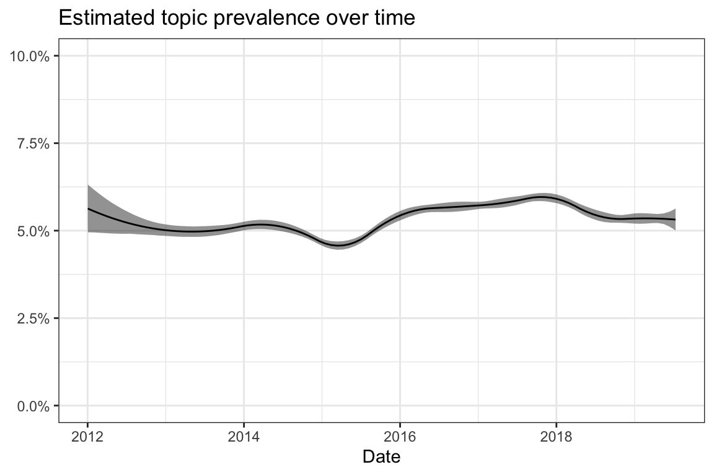
| Type | Terms |
|---|---|
| frex | schön, geht, manchmal, hilft, daumen, hört, immer, irgendwann, gefühl, zeit |
| lift | daumen, hilft, manchmal, schön, hört, doof, hände, luft, versuche, geht |
| prob | immer, gut, geht, kommt, zeit, oft, einfach, schön, wirklich, manchmal |
| score | daumen, geht, immer, gut, schön, manchmal, zeit, kommt, hilft, oft |
| Rank | \(\gamma\) | Text |
|---|---|---|
| 1 | 0.44 | Unserer ist momentan auch sehr anstrengend! Hab auch manchmal das Gefühl, ich kann ihm nix recht machen! Aber ich sag mir immer,auch diese Phase geht vorbei! |
| 2 | 0.39 | Kannst du ungefähr eingrenzen, woher die Kopfschmerzen kommen? Verspannung, Stress, Hunger… was auch immer. Das hilft oft, die Kopfschmerzen effektiv zu bekämpfen. Ich hab oft richtig starke Kopfschmerzen, die kommen meist von Verspannungen. Da helfen Wärme (Körner Kissen, Badewanne), eine Massage und mich flach auf den harten Boden zu legen. Und schlafen. Gerade falls du das Gefühl hast, dass es von einer Verspannung her kommen könnte (die ja auch durch Stress ausgelöst wird), achte mal darauf, ob deine Zunge entspannt im Mund liegt und dein Kiefer locker ist. Klingt etwas esoterisch, aber das ist bei vielen nicht der Fall und verstärkt Verspannungen im Nackenbereich. Alles Gute! |
| 3 | 0.36 | Was bringt es Dir nicht auf Dein Gefühl zu hören & dann im aller schlimmsten Fall um Dein Kind zu bangen wenn es angesteckt wird? Das würdest Du Dir im Nachhinein nicht verzeihen - auch wenn alles gut geht. Gerade wenn es eine Keuchhusten Häufung bei Euch gibt ist Dein Verantwortungsgefühl richtig. Lass Dich da nicht verunsichern. Egal bei wem - was bringt es wenn man nur wegen des Friedens willen auf etwas verzichtet das einem vom Gefühl her komplett gegen den Strich geht und bei dem man das Gefühl hat, dass es nicht gut ist? Wenn alles gut läuft hat man keine Probleme und alles geht gut - Glück gehabt. Aber was ist wenn es doch schief geht? Würde man sich Vorwürfe machen? Wenn die Antwort ja ist, dann bleibt bei Eurer gefühlsmäßigen Entscheidung. |
| 4 | 0.36 | Dann sieht er mal was du den ganzen Tag mitmachst. Alles geht irgendwann vorbei. Es geht vorbei ! Ja irgendwann geht’s vorbei. Das können wir nur aussitzen und warten und hoffen bis es wirklich vorbei geht. |
| 5 | 0.36 | Hast du es schonmal nass zum trocknen in die Sonne gelegt? Das Bleicht die Flecken Recht gut raus! Ansonsten hab ich am Rand der Bodys auch immer Mal wieder Flecken die nicht raus gehen beim waschen! Direkt einweichen und vorbehsndeln geht auch. Aber irgendwie ist da auch nicht immer die Zeit zu…. |
| 6 | 0.35 | (???): das blöde ist, diese sogenannten Verschwörungstheorien sind oft gar nicht so aus der Luft gegriffen. Auch wenn sich manches absurd anhört, meist ist doch was Wahres dran und man sollte immer wachsam und skeptisch bleiben. Es ist immer leicht, eine unbequeme Wahrheit in die Verschwörungstheorien-Schublade zu stecken, und schon distanziert sich der mündige, wissenschaftlich denkende, durchaus auch kritische Bürger (der Rest ja sowieso) davon. Man will ja nicht als durchgeknallt, leichtgläubig, esoterisch oder sowas gelten. Verschwörung und Theorie, das hört sich schon sehr gaga und unwahr bzw. unbewiesen an. Ich denke, die wenigsten der sogenannten Verschwörungstheorien haben ihren Namen wirklich zu Recht. |
| 7 | 0.34 | Stress ist immer relativ, bisher ging es ganz gut, zumindest rede ich mir das erfolgreich ein. Irgendwann funktioniert man einfach noch, merkt aber, dass auch das endlich ist. Und ich hab eigentlich immer ein großes Paket Optimismus, den ich wieder aktivieren kann. Aber egal, wieviel Stress wer hat, wichtig ist für uns um Hilfe zu bitten, wenn wir am Limit sind. Dein Freund kann als “Beobachter” auch sicher gut einschätzen, ob es gut für dich wäre. Und ich musste bei deiner ersten Nachricht schmunzeln… ja, auch Büro kann schlimmen Stress bedeuten. Schau, was für dich und dein Kind gut ist. Und es ist keine Schwäche, auch mal um Hilfe zu bitten. |
| 8 | 0.33 | Wir hatten das auch eine sehr lange Zeit lang.. Ich habe ihn aber dann einfach immer wieder an etwas lautere Orte mitgenommen wie Einkaufszenter ect. und habe ihn aber in der tragehilfe gehabt, so ging das immer und immer besser. Nun macht er eigentlich gar kein Theater mehr Und im Auto habe ich einen neuen kindersitz gekauft, seid dem läuft es prima! Der Kinderwagen ist zwar immer noch sein Feind, da mag ich dann eher ungern alleine unterwegs sein, weil das auch immer noch im Geschrei endet. Aber Probier es mal aus, ab ins tragetuch oder tragehilfe und raus.. Einkaufen was auch immer Es wird besser! |
| 9 | 0.33 | Nein, natürlich nicht. Das sind so die Klassiker wie Süßigkeitenentzug, Fernsehentzug (ansonsten sind wir bei Süßkram und Fernsehen relativ großzügig). Und es läuft auch “klassisch” ab, wie es dazu kommt. Ich denke, das kann sich jeder vorstellen … Ich weiß, dass das nicht der Weisheit letzter Schluss, pädagogisch fragwürdig und auch nicht langfristig wirksam ist, aber dummerweise wirkt es für den Moment recht gut (also die Androhung der “Strafe” …). So, jetzt könnt Ihr mich in der Luft zerreißen ob meiner Grausamkeit meinem Kind gegenüber … |
| 10 | 0.33 | Ich hab das und ich glaub nicht das du das hast zumindest so wie du es beschreibst. lass es lieber abklären bevor du was machst. wenn es das ist gehts meistens nicht von alleine weg. Mit der spritze ist es innerhalb ein paar stunden weg aber du solltest dann der ursache auf den grund gehen sonst kommt es immer wieder und irgendwann gehört operiert. schlafen dir finger ein? wenn ja welche typisch wären daumen mittel.und zeigefinger meistens dann wenn du zur ruhe kommst untertags hab ich das kaum schon gar nicht wenn ich was tue. |
9.30 Topic 30: Discussion tone
Vaccine-related: yes
Perspective: General vaccination debate
Description: Tone and discussion culture. Meta-discourse about how the topic vaccination should be discussed. Acceptance or rejection of diverging opinions.
| Type | Terms |
|---|---|
| frex | meinung, bitte, geschrieben, diskussion, falsch, warum, thread, thema, meinungen, leute |
| lift | thread, diskussion, diskutieren, forum, bitte, meinung, schade, argumente, geschrieben, meinungen |
| prob | einfach, thema, meinung, warum, möchte, bitte, wissen, eben, wirklich, dafür |
| score | thread, thema, meinung, einfach, bitte, warum, impfgegner, diskussion, leute, wissen |
| Rank | \(\gamma\) | Text |
|---|---|---|
| 1 | 0.59 | “Du wirkst leider sehr oft belehrend und allwissend und akzeptierst die Meinungen anderer nicht.” Es ist mir egal, wie ich wirke. Ich muss auch andere Meinungen nicht akzeptieren. Meine wird auch nicht akzeptiert. Sieht man ja an deinem Dagegen-Gerede. Genauso wie von anderen. Warum dürfen andere gegen meine Meinung reden und nicht gegen ihre? Denn was anderes ist es nicht. Ich sage es dir nochmal: ich will gar nicht, dass andere meine Meinung teilen. Ich stelle nur falsche Aussagen richtig und sage meine eigene Meinung dazu. Mehr nicht. Ob diese von anderen akzeptiert wird oder nicht, ist mir herzlich egal. Ich möchte nur nicht ständig als Übermutter hingestellt werden, denn das bin ich nicht und ich kann diese Bezeichnung nicht mehr hören. Warum sollte ich meine Einstellung überdenken? Tun das andere mir gegenüber? Muss ich das, obwohl es nur meine Meinung ist und diese nicht jedem passt? Ich denke nicht. Immerhin herrscht Meinungsfreiheit. Muss ja nicht jeder mit klarkommen. Ist mir aber auch egal. |
| 2 | 0.58 | Das sollte keine Aufforderung zur Diskussion mit mir sein (das Thema ist ein Fass ohne Boden, also sehe ich überhaupt keinen Sinn darin, darüber zu diskutieren). Ich wollte dir nur erklären, was meine Vorschreiberin mit ihrer Aussage ausdrücken wollte, da ihr ja so etwas wie eine Gleichgültigkeit gegenüber dem Tod von Kindern in Entwicklungsländern unterstellt wurde (und die habe ich da nicht herauslesen können). |
| 3 | 0.58 | Ja genau du möchtest Meinungen hören. Dazu gehören aber auch Meinungen, die deiner eigenen nicht entsprechen. Und wenn ich schreibe:“ich finde es unverantwortlich” dann ist das meine eigene Meinung und ich habe damit niemanden angegriffen. |
| 4 | 0.57 | Da könnte 100mal Bitte stehen. Es ist einfach allgemein unhöflich, Leute mit anderen Meinungen zu bitten, sich nicht zu melden. Zumindest in einem Forum wie diesem. Deshalb wie gesagt: Forum für Impfgegner oder Kritiker. Manche Antworten hier waren einfach eine Steilvorlage für Impfbefürworter. In einem Forum für Impfgegner wäre dir das sicher nicht passiert. |
| 5 | 0.57 | Werd ich nicht wirklich schlau draus. Den Grundsatz der Diskussion kann ich den noch vorhandenen Posts entnehmen. Aber ich fänd hier im Thread hatte sie keine Romane geschrieben. Aber ok. Muss sie selber Wissen und wird ihre Gründe haben. Hat mich nur interessiert. |
| 6 | 0.54 | Dieser Thread ist nur für Impfgegner bzw Leute die dem Thema kritisch gegenüber stehen. Diskussion können gerne weiter im Impfen-Thread geführt werden. |
| 7 | 0.54 | Oh man, wenn du den Artikel wirklich gelesen hast, müsstest du wissen, dass die Quelle nicht der Stern selbst ist, sondern der Blog einer Wissenschaftlerin, dessen Inhalt durch den Stern lediglich wiedergegeben und ins Deutsche übersetzt wurde…Wenn dir beim Lesen des Artikels nicht einmal dieser Umstand klar wurde, scheinst du wirklich über eine sehr selektive Wahrnehmung zu verfügen! Der Originaltext enthielt überdies einige Links zu wissenschaftlich fundierten, objektiven Auseinandersetzungen mit dem Thema Impfen an sich (die ebenfalls im Artikel abgedruckt sind und mit denen es sich lohnt, sich mal ernsthaft auseinanderzusetzen!). Ich würde ja eigentlich einfach mal vorschlagen, dass du mir die Fakten, die sich in all diesen Quellen finden, ernsthaft widerlegst, dann würde ich über meine Ansichten vielleicht noch einmal nachdenken! Da du aber offensichtlich intellektuell nicht in der Lage bist, eine ernsthafte, faktenbasierte Diskussion zum Thema zu führen, belasse ich es jetzt einfach mal bei dem Hinweis auf den Artikel für alle wirklich am Thema Interessierten! Einen schönen Abend trotzdem! |
| 8 | 0.54 | Ha ha ich hab dich garnicht gemeint! Das war auf den Beitrag von Jael3 bezogen auf den du geantwortet hast… Das Thema bringt mich einfach zur Weißglut :-) Ist nicht bös gemeint! |
| 9 | 0.54 | Warum? Um nicht dauernd Diskutieren zu müssen und um sich nicht Dauernd anhören zu müssen wie Verantwortungslos man ist. Denn manche Leute versuchen ihre Meinung anderen aufzuzwingen und akzeptieren andere Meinungen nicht. Darum ein Thread für Kritiker. Damit die Fragen nicht untergehen. Und man sich ohne Vorurteile und Diskussionen austauschen kann. Und wenn es darauf bezogen ist warum ich es Leid bin? Auch aus den oben genannten Gründen. Und weil man sich doch sowieso in einem Teufelskreis befindet. Dieses Thema ist einfach kein Thema zu welchem ich gerne diskutiere. Da man sowieso nicht Verstanden und dann noch fertig gemacht wird. Ich will niemandem meine Meinung aufdrängen. Und das sollte dann bitte auch keiner bei mir Versuchen. |
| 10 | 0.53 | Nein liebe Schmusestulle, es sind nicht hauptsächlich Homosexuelle. Ich habe nirgends behauptet, dass es der Risikofaktor Nummer eins ist. Zumal ich auch in diesem Thread nicht darüber disskutieren möchte, da es OT ist! Mehr möchte ich auch nicht hier in dem Thread dazu schreiben. Wenn du etwas darüber wissen möchtest kannst du mir gerne ne PN schreiben. |
9.31 Topic 31: Vaccination sequence
Vaccine-related: yes
Perspective: Practical issues
Description: Sequence and timing of the early vaccinations.
| Type | Terms |
|---|---|
| frex | rota, rotaviren, 6_FACH, pneumokokken, mmr, später, 6fach, früh, 6-fach, spät |
| lift | 6_FACH, 6-fach, 6fach, rota, pneumokokken, rotaviren, 6FACH_IMPFUNG, 6-FACH_IMPFUNG, mmr, später |
| prob | später, mmr, rotaviren, früh, rota, pneumokokken, geimpft, 6_FACH, bekam, 6fach |
| score | 6_FACH, mmr, rotaviren, rota, pneumokokken, später, 6fach, früh, 6-fach, 6-FACH_IMPFUNG |
| Rank | \(\gamma\) | Text |
|---|---|---|
| 1 | 0.45 | Wie war denn bei Euch die Reihenfolge der Impfungen? Erst viermal hintereinander die 6-Fach und danach erst MMR? Oder dreimal 6-Fach, dann MMR, dann wieder 6-Fach, dann wieder MMR? Und wieviel Abstand hattet Ihr zwischen den einzelnen Impfungen? |
| 2 | 0.38 | Prevenar 13 ist die Pneumokokken Impfung und wurde auch bei uns mit der 6-fach zusammen geimpft. Wir hatten bis jetzt im ersten Lebensjahr 3x 6-fach + Pneumokokken 2x Rotaviren im 2. Lebensjahr 1x MMR Röteln + Windpocken 1x Meningokokken und es fehlt jetzt noch 1x 6-fach + Pneumokokken 1x MMR |
| 3 | 0.37 | Wir haben die 6fach und Pneumo hinter uns und in ein paar Wochen gibts MMR. mit 1,5 dann wieder eine dosis 6fach. |
| 4 | 0.36 | Ja ich find 8 Wochen auch viel zu früh für die impfungen. Ja bei uns guckten se auch. Rota gab es hier ja nicht… |
| 5 | 0.35 | Rotaviren hat Elias auch zum ersten Mal mit 8 Wochen bekommen.. die erste pneumokokken und 6 Fach kam mit knapp 3 Monaten :) 4 Wochen später 6 Fach + rotaviren und wieder 4 Wochen darauf 6 Fach und pneumokokken |
| 6 | 0.33 | schon 3 mal 6 Fach gehabt? Mika bekam beim 1. Mal Rota, 6 Fach und Pneumokken beim 2. Mal nur Rota und 6 Fach und diesen Freitag gibt’s wieder alle 3 |
| 7 | 0.33 | Also unser KiA macht das alles anders. Wir haben bei der U6 die mmr bekommen und 8 Wochen später die 6fach Auffrischung. Bei der U7 soll er dann die mmr Auffrischung bekommen und meningokkocken erst wenn er in kiga kommt. Da er aber spontan jetzt zeitnah in kiga geht werde ich mal nachfragen |
| 8 | 0.32 | Oh, dann präzisier ich nochmal: Die 6-fach Impfung plus Pneumokokken sind Totimpfstoffe, den Lebendimpfstoff (gabs mal gegen Polio) gibts schon lange nicht mehr. Bei der MMR sind abgeschwächte Viren enthalten - sie wird deshalb aber auch erst später geimpft. |
| 9 | 0.32 | Wir haben nächste Woche U6 und da wird die Auffrischung 6fach plus (vermutlich) die Auffrischung der Pneumokokken geimpft. MMR kommt dann ca. 4 Wochen später extra. lgj |
| 10 | 0.32 | Unser KiA impft wie folgt: 3 Monate: 6-fach, Pneu, Rota (bei U4) 6 Wochen später: 6-fach, Pneu, Rota 6 Wochen später: 6-fach, Pneu (bei U5) 6 Wochen vor U6: MMR 12 Monate: Wipo (bei U6) 6 Wochen später: 6-fach, Pneumo 6 Wochen später: Meningokokken C 18 Monate: MMR + Wipo Sofern ich damit einverstanden bin natürlich. Und sofern der Gesundheitszustand es zulässt |
9.32 Topic 32: Responsibility and threats
Vaccine-related: yes
Perspective: General vaccination debate
Description: The posts discuss the responsibility for the vaccination decision and for the health of one’s own and other children more broadly. The threats of vaccine hesitancy on the one hand and adverse effects of vaccines on the other hand are weighted against each other.
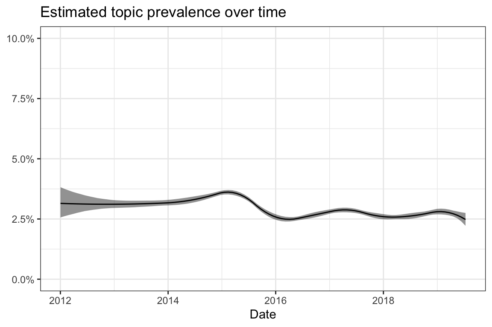
| Type | Terms |
|---|---|
| frex | kind, leben, mutter, passieren, schützen, kindes, passiert, angst, schuld, beste |
| lift | ansteckt, kind, schuld, kindes, passieren, mutter, leben, verantwortung, vater, schützen |
| prob | kind, leben, angst, mutter, klar, passiert, schützen, natürlich, gefahr, passieren |
| score | ansteckt, kind, mutter, leben, schützen, angst, gefahr, kindes, verantwortung, passiert |
| Rank | \(\gamma\) | Text |
|---|---|---|
| 1 | 0.38 | Ich weiß nicht was daran nicht verstanden wird. Die Masern in Berlin Beispiel jetzt. Ein nicht geimpftes Kind ist dort steckt sich an fährt zurück nach Hause wo eine Freundin zu Besuch ist dessen Kind noch zu jung ist dagegen geimpft zu sein & das ältere Kind steckt das andere an weil es keinen Schutz hat. Also eine Gefahr für andere oder stell dir vor ein infiziertes Kind (Masern) sitzt beim Kinderarzt im Wartezimmer und andere Eltern sitzen da auch mit ihren kleineren Kindern wieder eine Gefahr für andere. Die Gefahr an Tetanus ist gering bla bla….aber sie ist da !!!! Also wieso mein Kind dieser Gefahr aussetzen auch wenn diese gering ist möchte ich mein Kind davor schützen und alles dafür tun das es nicht daran erkrankt. |
| 2 | 0.38 | Klar, ist einem das eigene Kind das wichtigste. Aber ich möchte auch nicht dafür verantwortlich sein, wenn ein anderes Kind meinetwegen Schaden nimmt. Und durch das Nichtimpfen setze ich mein eigenes Kind ja auch einer Gefahr aus. Man kann halt nicht in die Zukunft blicken und weiß nicht, ob das Kind evtl. Schaden durch ein Impfung nimmt oder vielleicht, weil man es nicht impfen lässt. Vorwürfe würde man sich ja in beiden Fällen machen, wenn dem eigenen Kind was passiert. Und es ist ja auch nicht so, dass man durch das Nichtimpfen NUR andere gefährdet, sondern noch zusätzlich. |
| 3 | 0.35 | Bei unserem Kinderarzt hält die Begleitperson, also in der Regel Vater oder Mutter, das Kind bei Untersuchungen fest, die eventuell für das Kind unangenehm sind. Denn die Eltern kennen ihr Kind am besten und wissen in der Regel auch, wie sie ihr Kind wo am besten festhalten müssen, damit der Arzt an die Organe kommt, die er untersuchen muss. Dass fremde (die Arzthelferin ist nun mal eine fremde Person für das kind) das Kind festhalten sollen halte ich für die falsche Taktik. Denn erstens schürt das beim Kind die Angst noch mehr und zweitens wissen diese Personen eben auch nicht, wie das Kind aufs festhalten reagiert. Die Eltern schon. |
| 4 | 0.32 | Mit dieser Schuld, an einer schweren Erkrankung oder dem Tod deines Kindes, Leben zu müssen, musst du aber evtl. auch leben, wenn du D in Kind impfen lässt. Mit welcher potentiellen Schuld Eltern besser leben können, diese Entscheidung muss man ihnen IMHO selbst überlassen. |
| 5 | 0.32 | Liebe nicht-impfer, zuerstmal es tut mir leid das ihr euch angegriffen fühlt und eure Meinung meistens weniger alzeptiert wird. ich will gerade keinen beleidigen, nur erklären! es kommt zu so Anfeindungen weil ihr eine Gefahr seit!!! wenn ich mein Kind impfe ist euch das total egal und ihr denkt ich bringe damit nur mein Kind in Gefahr.stimmt! wenn ihr nicht impft bringt ihr aber damit MEIN Kind in Gefahr!! Weil bis mein Kind durchgeimpft ist vergeht eine weile. Mmr zum Beispiel wird erst sehr spät geimpft und so lange ist mein Kind vom herdenschutz abhängig und jeder der nicht impft ist für mich eine Bedrohung für MEIN Kind! so und da nun mal jede Mutter nur das beste und die größte Sicherheit für sein Kind möchte, verzeiht es mir, aber am liebsten würde ich euch nicht impfer alle auf den Mond schießen! wie gesagt ich versteh das jede Mutter nur das beste für sein Kind will und es tut mir leid das ihr viel mehr angegriffen werden aber ihr trefft halt nicht nur eine Entscheidung für EURE Kinder sondern für sehr viele! |
| 6 | 0.31 | ….und weil jede mutter das beste für ihr kind will, gibt es “spezialisten” die, obwohl sie wissen, dass sie ihrem kind massiven schaden damit zufügen, trotzdem rauchen?!?!? |
| 7 | 0.31 | Schäden gibt es vor allem durch nicht geimpfte Kinder. Das ist die wahre Gefahr! Ich werde niemals verstehen können, wie man seinem Kind einer solchen Gefahr aussetzt und es NICHT impft. Wer sein Kind liebt, der impft es. Du gehst ja auch mit deinem Kind zum Zahnarzt, wenn es Zahnschmerzen hat und lässt es behandeln. Das ist menschlich und liebevoll. Ich würde nie die Gefahr eingehen und lebensgefährliche Kinderkrankheiten nicht impfen lassen und dadurch mein eigenes Kind und andere Kinder in Gefahr bringen. |
| 8 | 0.31 | Das betroffene Kind war schon krank. Von Impfgegnern hört man immer:,, Wieso sollte man ein gesundes Kind…’’ Wer garantiert einem denn, dass das eigene Kind immer gesund sein wird? Gott bewahre uns alle davor, aber wenn mein Kind schon schwer erkrankt in die Kinderklinik muss, möchte ich es doch bestmöglich vor weiteren Krankheiten schützen. Und Kinderkrankenhäuser sind wie alle Einrichtungen wo viele Kinder zusammen kommen, Bazillenmutterschiffe. Wie man sieht, kann das sonst schrecklich enden. Und wenn das Kind geimpft gewesen wäre und das ist ein Kind normalerweise mit 18 Monaten, dann würde es jetzt noch leben. Also ein sinnloser und vermeidbarer Tod. |
| 9 | 0.31 | Warum man verschiedene Impfungen zu verschiedenen Zeitpunkten gibt, ist dir sicher bekannt. Ja, das weiß ich. Es war eben sehr plakativ. Du wirfst anderen vor mit ihrer Entscheidung Leben zu gefährden, triffst aber selbst Entscheidungen, die anderen das Leben kosten könnten und nimmst zB dein ungeimpftes Kind, das sich, genauso wie andere ungeimpfte Kinder, mit Masern angesteckt haben könnte, mit in die Öffentlichkeit. Und ich habe auch Angst vor den Nebenwirkungen, so ist es ja nicht. Klar macht es mir Angst, dass etwas passieren könnte. Ja und diese Angst haben andere eben auch. Sie verzichten ja nicht aufs Impfen weil sie andere gefährden wollen, sondern weil sie glauben, dass es für ihr Kind besser ist nicht zu impfen. So wie du deine Entscheidungen auch in erster Linie mit Blick auf dein Kind triffst. Ob die Angst berechtigt ist, sei dahingestellt. |
| 10 | 0.31 | Warum man verschiedene Impfungen zu verschiedenen Zeitpunkten gibt, ist dir sicher bekannt. Ja, das weiß ich. Es war eben sehr plakativ. Du wirfst anderen vor mit ihrer Entscheidung Leben zu gefährden, triffst aber selbst Entscheidungen, die anderen das Leben kosten könnten und nimmst zB dein ungeimpftes Kind, das sich, genauso wie andere ungeimpfte Kinder, mit Masern angesteckt haben könnte, mit in die Öffentlichkeit. Und ich habe auch Angst vor den Nebenwirkungen, so ist es ja nicht. Klar macht es mir Angst, dass etwas passieren könnte. Ja und diese Angst haben andere eben auch. Sie verzichten ja nicht aufs Impfen weil sie andere gefährden wollen, sondern weil sie glauben, dass es für ihr Kind besser ist nicht zu impfen. So wie du deine Entscheidungen auch in erster Linie mit Blick auf dein Kind triffst. Ob die Angst berechtigt ist, sei dahingestellt. |
9.33 Topic 33: Conversation style
Vaccine-related: no
Perspective: n/a
Description: Words which describe a style of conversation on online discussion boards.
| Type | Terms |
|---|---|
| frex | davon, gehört, ehrlich, ganz, völlig, gehe, sicher, halte, eher, stark |
| lift | abgesehen, davon, ehrlich, überzeugt, gehört, gehe, jedenfalls, völlig, irgendwas, halte |
| prob | ganz, davon, sicher, eher, gehört, wahrscheinlich, glaube, ehrlich, völlig, gesagt |
| score | abgesehen, ganz, davon, ehrlich, gehört, sicher, halte, gehe, völlig, eher |
| Rank | \(\gamma\) | Text |
|---|---|---|
| 1 | 0.26 | Bin nur Laie, aber ich gehe mal davon aus, dass es sicher eine Auffrischungsimpfung ist. Von daher würde ich glaube warten bis es etwas kühler ist….aber wie gesagt….ist meine Laienhafte Meinung. |
| 2 | 0.25 | Ja und zum verordnen von Äpfel oder Bananen brauch ich auch keinen uniabschluss. Was hat das denn damit zu tun? Ganz abgesehen davon, dass mit NEM auch ganz schöner Unfug getrieben werden kann, da oft verharmlost und so gut wie gar nicht reguliert, hat das mit Homöopathie oder alternativmedzin so gar nichts zu tun! |
| 3 | 0.24 | ganz abgesehen davon dass Kinder die Kinderlähmung und dgl. nicht bekommen haben KEINEN Nachteil bezgl. Immunsystem haben…^^(blödes Altweibergewäsch) kann ich von meinen dreien sagen dass sie normal krank bzw. normal gesund sind. |
| 4 | 0.23 | Danke für eure Antworten, ich bin jetzt schon etwas beruhigt und ehrlich gesagt kann ich mir nicht vorstellen das meine Frauenarzt mich mit einer akuten infektion rumlaufen lassen würde weil Eig ist sie schon gewissenhaft , , ,da hätte sie was gesagt. Der Wert wurde ja noch mal kontrolliert und scheinbar ist er nicht gestiegen sondern eher gesunken. Davon abgesehen hatte ich keinerlei symptome, wurde als Kind ja geimpft und hatte dann ganz stark die impfröteln. Trotzdem macht man sich bei sowas eben Sorgen, aber bei der feindiagnostik und auch sonst war immer alles super also ist eine schwere Behinderung Eig so gut wie ausgeschlossen noch nicht mal die Oberärztin bei der Feindiagnostik hat was wegen den Befund gesagt.. |
| 5 | 0.23 | Also Thema Sexualität gab es bisher in jeder Kita in der ich gearbeitet habe. Das gehört zur ganz normalen Entwicklung von Kindern dazu, auch schon in ganz jungem Alter. Es hat absolut nichts mit der erwachsenen Sexualität im Sinne von Sex haben etc zu tun. Kinder entdecken ihren Körper, das gehört dazu und ist ganz normal. :-) |
| 6 | 0.23 | Ich bin dafür, dass du mit Kind in den Wald ziehst, ganz tief in den Wald. Ohne W-Lan. Ja, im Eremitsein, dass ist etwas, worin du sicher ganz, ganz toll bist. |
| 7 | 0.22 | Ganz ehrlich - ich glaube es nicht! Es wurden schon immer mal Unwahrheiten erzählt, um Personen auf eine bestimmte Seite zu bewegen. Bestes aktuelles Beispiel: Volksabstimmung Großbritannien Aber das ist meine persönliche Meinung. Davon abgesehen glaube ich selbst in diesem Forum nicht alle Geschichten, die einem hier aufgetischt werden. |
| 8 | 0.22 | Mal ganz davon abgesehen, dass Windpocken echt hässliche Narben lassen. Mein Mann hat davon ganz viele am Kopf und muss sich ständig dumme Sprüche deswegen anhören. |
| 9 | 0.22 | Ich halte auch nix von der Grippe-Impfung. War bisher auch noch nie betroffen und kenne auch niemanden, der es war. Davon abgesehen, kommt bei mir noch zusätzlich hinzu, dass im Impfstoff ein Teilwirkstoff drin ist, gegen den ich allergisch reagiere. Es gibt ihn wohl auch ohne diesen Wirkstoff, aber der muss gesondert bestellt werden und da zicken die Ärzte wohl auch rum. Aber wie gesagt, ich halte davon eh nicht viel und hab mich deswegen auch nicht weiter damit beschäftigt. |
| 10 | 0.22 | Ach komm, Erfahrungsaustausch… über nichts anderes als Erfahrungsaustausch drehen sich doch sämtliche anderen Müttergespräche! Wenn es dich so nervt, dass du hier nach Bestätigung und Kopfstreichlern suchst (sei ehrlich, im Grunde willst du genau das hören: du bist nicht allein, und du machst alles richtig), dann halte dich doch wirklich fern von den Müttern, und ziehe DEIN Ding durch, ganz egal, was andere dazu zu sagen haben. Genau das mache nämlich ich, es sei denn, ich bin mir mal nicht sicher… |
9.34 Topic 34: Medical advice
Vaccine-related: yes
Perspective: Relationship and communication
Description: Role of doctors in the vaccination decision and proceedings.
| Type | Terms |
|---|---|
| frex | arzt, kinderarzt, sagt, fragen, meinte, gefragt, vorher, praxis, sagte, u |
| lift | anrufen, arzt, praxis, frag, gefragt, extra, sagt, fragen, klinik, angesprochen |
| prob | arzt, kinderarzt, gemacht, gesagt, meinte, gleich, vorher, sagt, kia, fragen |
| score | anrufen, arzt, kinderarzt, meinte, fragen, kia, gesagt, sagt, u, sagte |
| Rank | \(\gamma\) | Text |
|---|---|---|
| 1 | 0.49 | Wie gesagt, hatte direkt im KH nen GVK gemacht und die Hebamme hat uns direkt gesagt, dass man dort nicht entlassen wird, wenn wir den Kinderarzt nicht nennen können. Kommt wahrscheinlich auch drauf an wo man entbindet. Entlassungsbrief wird dann auch direkt an diesen Kinderarzt ausgefüllt. |
| 2 | 0.43 | Ich hab mich das auch gefragt Arzt sagte ja Hebamme sagte auf keinen fall Und ich Hoere auf meine Hebamme |
| 3 | 0.35 | Ich würde auch zumindest beim Arzt anrufen und das denen schildern. Die sagen dir dann sowieso gleich was Sache ist, ob du gleich kommen sollst etc. Ich bin aber auch so ein Typ der lieber 1 mal zu viel wie 1 mal zu wenig zum Arzt geht, deswegen ist das meine Meinung dazu. Ich habe schon vor der Schwangerschaft mein Impfbuch durchschauen lassen ob alles aufgefrischt ist. Aber das bringt jetzt natürlich auch nichts dir das vorzuwerfen. Ich würde wie gesagt auf jedenfall beim Arzt anrufen. |
| 4 | 0.34 | Arzt fragen, würde ich sagen. Ich selbst war total erkältet (Grippe usw) als unser Zwerg U4 hatte und da hab ich den Arzt auch gleich gefragt, dass es halt sein könnte, das ich ihn angesteckt habe und ob man dann überhaupt impfen soll. Der Arzt hat ihn komplett untersucht, hat aber keine Krankheitssymptome gefunden und hat gesagt das Impfen geht. Da dein Zwerg ja schon verschnupft ist, würde ich den Arzt wie gesagt einfach fragen, der wird dir das dann schon sagen. :) |
| 5 | 0.33 | Okay. Na mich hat der arzt gefragt wie mas machen u ich hab halt gesagt nicht zu viel aufeinmal. U der Impfstoff liegt schon bereit u unterschrieben hab ich auch noch nie etwas !! |
| 6 | 0.33 | Ist bei unserem Kinderarzt auch so. Der sagte beim Vorstellungsgespräch gleich das er impft und wenn wir das nicht wollen einen anderen Arzt suchen müssen. |
| 7 | 0.33 | Ich würde beim Arzt anrufen und mal nachfragen Die können dir am besten sagen ob die U sinnvoll ist mit meinem Kranken Kind oder ob sie lieber verschoben werden soll :) |
| 8 | 0.33 | Frag den Kinderarzt vorher. Unser hat das auch ständig und die Impfung gab es trotzdem. Hatte es extra vorher angesprochen |
| 9 | 0.32 | Den Film “wir impfen nicht” habe ich auch gesehen, der ist super zum Einstieg. Diese Internet Seite empfehle ich für alle die sich individuell informieren möchten. http://www.individuelle-impfentscheidung.de/ Bei der U4 habe ich meinem Kinderarzt gesagt dass wir nicht impfen, er sagte wenn ich mich bis zur U5 nicht unentschieden habe muss ich mir einen neuen Arzt suchen. MilaneJamie, was sagt dein Kinderarzt dazu? |
| 10 | 0.32 | Die Hüftsono haben wir schon hinter uns. Der Kinderarzt im Kh meinte, dass das hier Routine ist, das es im kh gemacht wird. Aber es bei der U3 trotzdem nochmal gemacht wird. Henry wiegt schon 2880 gramm, Geburtsgewicht war 2760gramm. |
9.35 Topic 35: Conversation style II
Vaccine-related: no
Perspective: n/a
Description: Words which describe a style of conversation on online discussion boards.
| Type | Terms |
|---|---|
| frex | gar, fast, eigentlich, kommen, leider, ausgerottet, überhaupt, gerade, denke, zumindest |
| lift | ausgerottet, gar, fast, eigentlich, kommen, leider, überhaupt, gibts, zumindest, gerade |
| prob | gar, fast, eigentlich, leider, kommen, mehr, gerade, überhaupt, denke, immer |
| score | ausgerottet, gar, fast, eigentlich, kommen, leider, mehr, gerade, überhaupt, denke |
| Rank | \(\gamma\) | Text |
|---|---|---|
| 1 | 0.12 | Das Problem sind nicht die Zecken, sondern das sie den FSME Erreger in sich tragen. Wir wohnen nicht im Risikogebiet aber wenn man hier im Sommer in den Wald geht, hat man garantiert danach mindestens eine Zecke. Nur ist diese eben nicht mit FSME infiziert. Die Impfung hilft auch nicht gegen die Zecken an sich sondern nur gegen den Erreger. Und man kann trotzdem erkranken, nur verl√§uft es dann milder. So √§hnlich wie bei einer Malaria-Impfung. Gegen Borreliose gibt es leider gar keine Impfung. Bei uns ist daf√ºr gerade fast jede Eiche vom Eichenprozessionsspinner befallenüêõ und fast alle Menschen hier in der Gegend haben Probleme wie Ausschlag und Atemnot.üò± Die √Ñrzte kommen gar nicht klar mit den ganzen Patientenaufkommen. Uns hat es leider auch erwischt, aber Gott sei Dank nur Ausschlag. Der juckt tierisch aber ansonsten ist bis jetzt nichts weiter‚Ķ |
| 2 | 0.12 | Hauptsache es würde mal was passieren. Es ist schlimm, wie dieses Nichtimpfen immer mehr um sich greift. Die Masern waren fast ausgerottet…leider nur fast :( |
| 3 | 0.11 | Leider gibt es in diesem Forum keine vernünftige Diskussionskultur. Und ich schiebe das nicht auf die Hormone, denn dieses Argument erachte ich als ziemlich sexistisch. Ich kenne solche Ärztinnen leider auch, die einem alle IGeL andrehen wollen. Das ist aber auch die Crux des Gesundheitswesens allgemein. Meines Wissens nach zahlt zumindest meine KK die Impfung, da ich laut RKI als Schwangere zu einem besonders gefährdeten Personenkreis gehöre. Daher hat man als Schwangere noch nicht einmal diesen finanziellen Aufwand. Ich denke nur, alle sollten sich auf der Grundlage seriöser Quellen bei derart kontroversen Themen selbst ein Bild machen. Leider gibt es auch viele falsche Informationen, die nur Angst machen. Das sind Luxus-Probleme. In den Entwicklungsländern sind alle froh, wenn sie Impfungen bekommen, weil das oft die einzige Möglichkeit ist, sich gegen tödliche Krankheiten zu schützen. Uns geht es so gut heutzutage, dass wir die Schrecken von Masern, Polio und Co. vergessen haben. Die Oma meines Mannes leidet bis heute unter den Folgen von Polio. Mein Kind werde ich so gut ich eben kann davor schützen. Und sie würde alles tun, könnte sie das rückgängig machen, was ihr damals leider passiert ist. Sie weiß diesen medizinischen Fortschritt zu schätzen. Und ja, eigentlich sollte es jeder für sich entscheiden, aber leider gefährden heutzutage viele den Herdenschutz, den Säuglinge und andere, die nicht geimpft werden können, brauchen, um gegen tödliche Infektionen geschützt zu werden. Und wenn ich an mein Baby denke und dass ich nie weiß, ob es dann in Kontakt mit Ungeimpften kommen wird, dann wird mir Angst und Bange Ich lebe in Berlin und die Masern-Epidemie hat mir wirklich Angst gemacht. Diese Krankheit ist so hinterhältig… Und eine einfache Impfung hatte sie fast ausgerottet, aber eben nur fast. Und nun lassen Menschen sehenden Auges zu, dass sie mit voller Wucht zurück kommt. Das verstehe ich einfach nicht… |
| 4 | 0.10 | Bei euch hier haben impfgegner ja schon gar kein mitteilungsrecht mehr Im Dezemberclub ists fast anders rum… aber das tolle, man tauscht sich sachlich aus und eckt gar nicht mal so an, obwohl die Meinungen- wie immer bei dem thema- so weit auseinander gehen. hab ich bisher selten bis eigentlich gar nicht erlebt also falls jemanden auch mal sachliche argumente gegen das impfen interessieren, (die natürlich nichts mit impfschäden wie masturbation oder homosexualität zu tun haben), kann er ja gerne mal schmökern ;) Und jaa, das kommt von ner Impfbefürworterin ;) |
| 5 | 0.09 | Ich kann zwar gar nicht genau erklären, warum ich fürs Impfen bin, aber ich glaub schon daran, dass davon Krankheiten fast ausgerottet werden können und auch bereits wurden. Mir hat mal eine Freundin (Impfgegnerin) erklärt, die Krankheit Masern gibts gar nicht und wär nur eine Erfindung der Pharmaindustrie… |
| 6 | 0.09 | Danke erst mal für die Antworten. Bringt das mit der Zugsalbe denn auch noch was, wenn die Einstichstelle fast zu ist? Es ist eigentlich gar nichts mehr zu sehen, nur noch mit Lupe…. Aber leider ist es noch zu merken, genau da wo man immer greift mit dem Zeigefinger…Sehr unangenehm. |
| 7 | 0.08 | Wie beim Impfen… Aber ich persönlich finde solche Diskussion immer spannend und freue mich in der Regel über „Gegenwehr“ zu meiner Meinung. Zum einen finde ich es amüsant, wie sich manche Leute in beide Richtungen ereifern (finde ich hier jetzt gar nicht so schlimm, da kenne ich andere Foren) - in erster Linie aber natürlich, was den Austausch von Argumenten angeht. Viele Leute mit einer vorgefertigten Meinung haben sich mit der Gegenposition gar nicht so intensiv beschäftigt (da schließe ich mich bei einigen Themen gar nicht aus) und in meinen Augen kann man durch Diskussion eigentlich nur Erkenntisse dazu gewinnen. Das große Problem in unserer Gesellschaft ist ja leider dieser Drang zum Konformismus und eine fast schon pathologische Harmonie- und Konsens-Sucht, die jeden fruchtbaren Diskurs unmöglich macht… |
| 8 | 0.08 | Das stimmt ! Z.B Krätze war gerade 2017 sehr in Deutschland verbreitet, haben viele aus Afrika und anderen Ländern mitgenommen :/ in Deutschland gab es das 50 Jahre gar nicht mehr also fast gar nicht, war eine totgeglaubte Krankheit … |
| 9 | 0.08 | Also deine Beschreibung macht mir ja gerade etwas Angst! Und die Kombination von Tetanus-Impfung UND Antibiotikagabe kann ich gerade so gar nicht nachvollziehen………..aber ja, der Durchfall kann vom Antibiotika kommen. Kenne ich leider aus persönlicher Erfahrung….. |
| 10 | 0.08 | Hallo zusammen, ich bin neu hier in der Community… ET habe ich am 4.2.18. Ich bin diese Woche krankgeschrieben - Gebärmutterhalsverkürzung und Entzündung etc - jetzt meldet sich der Geschäftsführer / mein Chef von der Arbeit, dass er gerne hätte, dass ich mir ein Beschäftigungsverbot für den Rest der Schwangerschaft gebe. Weil so müsste er mein Gehalt nicht mehr bezahlen und hätte für sich mehr Planungssicherheit. Normalerweise müsste ich noch 1 Monat arbeiten und habe damit gerechnet, wenn nach dieser Woche alles ok ist, gleich wieder im Büro zu sein. Ich weiss gar nicht was ich von seinem Vorschlag halten sollte. Es hat mich ziemlich überrascht, eigentlich haben wir ein gutes Arbeitsverhältnis… Habt ihr schon mal so etwas ähnliches gehört oder erlebt? Wenn am Ende alles halb so wild ist und die Krankschreibung nächste Woche gar nicht verlängert werden muss, komme ich mir ziemlich blöd vor bei meinem FA wegen des BV zu fragen… In der Arbeit wollen die mich aber wohl nicht mehr haben bzw wollen sich das Geld für mein Gehalt lieber sparen (weil es bei BV von der KK übernommen wird). Ich weiss gar nicht was ich am besten machen sollte… |
References
Roberts, Margaret E., Brandon M. Stewart, and Dustin Tingley. 2019. “Stm: An R Package for Structural Topic Models.” Journal of Statistical Software 91 (1): 1–40. https://doi.org/10.18637/jss.v091.i02.